<!doctype html>
<html>
<head>
  <link rel="stylesheet" href="../../common/css/reveal.css">
  <link rel="stylesheet" href="../../common/css/white.css">
  <link rel="stylesheet" href="../../common/css/overrides.css">
  <script src="../../common/java/print.js"></script>
  <title>Data Management Challenge - Slides</title>
  <meta charset="UTF-8">
</head>
<body>
  <div class="reveal">
    <div class="slides">

      <!--
        Some resources:
        https://www.zotero.org/groups/361046/research_data_management_services/items            /* Sherry Lake list of Resources */
        https://zenodo.org/communities/dcc-rdm-training-materials/?page=1&size=20               /* some open source courses on RDM */
        http://campusguides.lib.utah.edu/ELNs                                                   /* notes on ELNs */
        https://datamanagement.hms.harvard.edu/electronic-lab-notebooks                         /* notes on ELNs */
        https://www.datacatalogcollaborationproject.org                                         /* biomedical data sharing */
        https://sciencegateways.org                                                             /* Science Gateways Community Institute */
        https://libereurope.eu/dmpcatalogue/                                                    /* catalog of DMPs from various disciplines */
        3-2-1 rule for backups - 3 copies, two different mediums, 1 different geographic location
        https://ezdmp.org                                                                       /* NSF tool */
        https://github.com/temporalecologylab/labgit/blob/master/datacodemgmt/tempeco_DMP.pdf   /* awesome set of lab data policies, 
                                                                                                   includes definitions of data, file formats,
                                                                                                   metadata, data storage, co-ownership/authorship,
                                                                                                   and Harvard Data Policy */
                                                                                                   
        courses-and-workshops/common/assets/images-for-data/filename_final1.png                 /* great image from UM repo of filename */
        courses-and-workshops/common/assets/DataManagementPlanningWorkbookV3.6.docx             /* from Sherry Lake */
        https://osulp.github.io/Data-Management-Templates-Project/                              /* DMP template from OSU (Clara Llebot and 
                                                                                                   Mark Landon) */
        https://osf.io/tzmhp/wiki/home/                                                         /* DIAG team protocols (like DMP) from
                                                                                                   Fernando Rios */

      -->
    
      <!-- ***
            * Introduction
            * -->

      <section data-background-image="../../common/assets/images-for-data/HuayhuashContourColorCover.png">
        <div style="margin-top: -110px; margin-left: 100px; font-size: 150%; text-shadow: 0px 0px 23px #ede9e2, 0px 0px 23px #ede9e2, 0px 0px 23px #ede9e2, 0px 0px 23px #ede9e2, 0px 0px 23px #ede9e2, 0px 0px 23px #ede9e2, 0px 0px 23px #ede9e2;"><strong>The Data Management Challenge</strong></div>
        <div style="margin-top: 70px; margin-left: 380px; font-size: 100%; text-shadow: 0px 0px 23px #ede9e2, 0px 0px 23px #ede9e2, 0px 0px 23px #ede9e2, 0px 0px 23px #ede9e2, 0px 0px 23px #ede9e2, 0px 0px 23px #ede9e2, 0px 0px 23px #ede9e2;"><strong>wrangling data in the research environment</strong></div>
        <div style="margin-top: 60px; margin-left: 260px; font-size: 60%; text-align: left; text-shadow: 0px 0px 13px #ede9e2, 0px 0px 13px #ede9e2, 0px 0px 13px #ede9e2, 0px 0px 13px #ede9e2, 0px 0px 13px #ede9e2, 0px 0px 13px #ede9e2, 0px 0px 13px #ede9e2, 0px 0px 13px #ede9e2, 0px 0px 13px #ede9e2, 0px 0px 13px #ede9e2, 0px 0px 13px #ede9e2;">Tim Norris - <a href="mailto:tnorris@miami.edu" style="color: #000 !important;">tnorris@miami.edu</a><br>Fall 2020 UM Library Research Seminars<br><a href="https://bit.ly/2IY8eUi">https://bit.ly/2IY8eUi</a></div>
      </section>

      <section>
        <div style="width: 65%; margin-right: auto; margin-left: auto; position: relative; top: -20px;">
          <span style="font-weight: bold; font-size: 110%;">The Data Management Nightmare</span>
        </div>
        <div style="text-align: center;"><a href="https://www.youtube.com/watch?v=N2zK3sAtr-4" border=0 target="_blank"></a></div>
        <div style="font-size: 50%; text-align: center; line-height: 120%;">
          Karen Hanson, Alisa Surkis, and Karen Yacobucci, NYU Health Sciences Libraries<br>
          <a href="https://www.youtube.com/watch?v=N2zK3sAtr-4" target="_blank">https://www.youtube.com/watch?v=N2zK3sAtr-4</a>
        </div>
      </section>
      
      <!-- ***
            * Introduction: Why manage data
            * -->

      <section>

        <section>
          <div style="font-weight: bold; font-size: 110%;">Why Manage Data?<br></div>
          <div style="margin-top: 30px; font-size: 65%;">From this ...</div>
          <div style="margin-top: 50px;">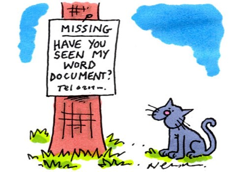</div>
          <div style="font-size: 40%; color: #555; margin-top: 50px;"><a href="http://www.thesundaytimes.co.uk/sto/multimedia/archive/00051/Panic-cartoon-580x35_51233a.jpg">http://www.thesundaytimes.co.uk/sto/multimedia/archive/00051/Panic-cartoon-580x35_51233a.jpg</a></div>
        </section>            

        <section>
          <div style="margin-top: 30px; font-size: 65%;">... to this ...</div>
          <div style="margin-top: 50px;"></div>
          <div style="margin-top: 50px;font-size: 40%; color: #555;"><a href="http://abcnews.go.com/blogs/business/2013/04/rutgers-student-offers-1000-for-data-on-stolen-laptop/">http://abcnews.go.com/blogs/business/2013/04/rutgers-student-offers-1000-for-data-on-stolen-laptop/</a> - last visited 12/14/15</div>
        </section>

        <section>
          <div style="margin-top:10px; font-size: 65%;">... again this ...</div>
          <div style="margin-top: 10px;"></div>
          <div style="margin-top: 10px;font-size: 40%; color: #555;"><a href="https://www.breakingnews.ie/discover/jk-rowling-tweets-about-students-lost-laptop-in-dublin-and-he-finds-it-789477.html">https://www.breakingnews.ie/discover/jk-rowling-tweets-about-students-lost-laptop-in-dublin-and-he-finds-it-789477.html</a> - last visited 12/14/15</div>
        </section>

        <section>
          <div style="margin-top: 30px; font-size: 65%;">... to this ...</div>
          <div style="margin-top: 10px;">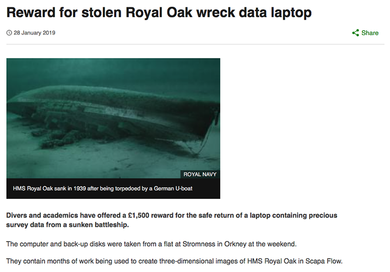</div>
          <div style="margin-top: 10px;font-size: 40%; color: #555;"><a href="https://www.bbc.com/news/uk-scotland-north-east-orkney-shetland-47028242">https://www.bbc.com/news/uk-scotland-north-east-orkney-shetland-47028242</a> - last visited 02/01/19</div>
          <div class="fragment" style="position: absolute; top: 200px; left: 760px; max-width: 300px;">
            
          </div>
        </section>

        <section>
          <div style="font-size: 65%;">... to this!!<br><br></div>
          <div style="margin-top: 0px;">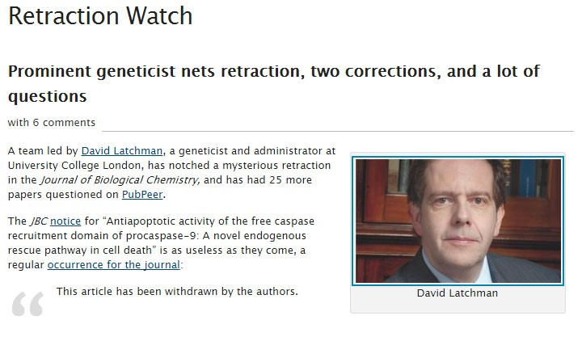</div>
          <div style="mnargin-top: 50px; font-size: 40%; color: #555;"><a href="http://retractionwatch.com/2015/01/20/prominent-geneticist-nets-retraction-two-corrections-lot-questions/#more-25256 ">http://retractionwatch.com/2015/01/20/prominent-geneticist-nets-retraction-two-corrections-lot-questions/#more-25256 </a> - last visited 12/14/15</div>
        </section>

        <!--
          Some more data fail resources:
          https://www.youtube.com/watch?v=8dhp_20j0Ys                           /* Toy Story 2 Backup Fail */
          https://pinboard.in/u:dsalo/t:horrorstories/t:datacuration            /* a list of data fail stories */
          https://retractionwatch.com/                                          /* retraction watch */
        -->

      </section>
      
      <!-- ***
            * Outline
            * -->

      <section>
      
        <section>
          <div style="width: 75%; margin: auto auto auto auto;">
            <div style="font-weight: bold; font-size: 110%; padding-bottom: 36px;">some things to talk about</div>
            <div style="font-size: 85%; text-align: left; line-height: 170%;">
              <table><tr style="border-top: 1px solid black;"><td style="padding-top: 13px;" class="fragment">
                Why we are here
                <ul style="margin-left: 30px; font-size: 80%; line-height: 150%;">
                  <li><a href="#/4">Data Deluge?</a></li>
                  <li><a href="#/5">What is Data?</a></li>
                  <li><a href="#/6">Data in the Research Environment?</a></li>
                  <li style="margin-bottom: 13px;"><a href="#/7">Why Manage Data?</a></li>
                  <li><a href="#">Data Ethics</a></li>
                </ul>
              </td><td class="fragment">
                What we can do 
                <ul style="margin-left: 30px; font-size: 80%; line-height: 150%;">
                  <li><a href="#/8">File Formats</a></li>
                  <li><a href="#/9">Data Organization</a></li>
                  <li><a href="#/10">Security and Privacy</a></li>
                  <li><a href="#/11">Storage and Backup</a></li>
                  <li><a href="#/12">Data Ownership</a></li>
                  <li><a href="#/13">Metadata</a></li>
                  <li style="margin-bottom: 13px;"><a href="#/15">Data Repositories and Deposit</a></li>
                </ul>
              </td></tr><tr class="fragment"><td colspan=2 style="text-align: center; padding-top: 36px; font-size: 90%; line-height: 125%;">
                <a href="#/14">DOIs and ORCIDs</a><br>
                <a href="#/16">Data Management Plans</a><br>
                <a href="#/17">Electronic Lab Notebooks ELNs</a><br>
                <a href="#/3/1">Resources at UM</a>
              </td></tr></table>
            </div>
          </div>
        </section>
        
        <section>
          <div style="width: 85%; margin: auto auto 60px auto;">
            <div style="font-weight: bold; font-size: 110%; padding-bottom: 22px;">Resources at UM</div>
            <div style="font-size: 40%; text-align: left; line-height: 170%; border-bottom: 1px grey solid;">
              <table><tr>
              <td width=380>
                <div class="staff-pic"><a href="https://sp.library.miami.edu/subjects/staff/tnorris"></a></div><div class="staff-meta"><h4><a href="https://sp.library.miami.edu/subjects/staff/tnorris">Timothy Norris</a></h4>
                <p><em>Data Scientist</em></p>
                <p>(305) 284-2826 <a href="mailto:tnorris@miami.edu">tnorris@miami.edu</a></p>
                </div>
              </td><td width=380>
                <div class="staff-pic"><a href="https://sp.library.miami.edu/subjects/staff/criopelle"></a></div><div class="staff-meta"><h4><a href="https://sp.library.miami.edu/subjects/staff/criopelle">Cameron Riopelle</a></h4>
                <p><em>Head of Data Services</em></p>
                <p>(305) 284-3257 <a href="mailto:criopelle@miami.edu">criopelle@miami.edu</a></p>
              </td><td width=380>
                <div class="staff-pic"><a href="https://sp.library.miami.edu/subjects/staff/thilani.samarakoon"></a></div><div class="staff-meta"><h4><a href="https://sp.library.miami.edu/subjects/staff/thilani.samarakoon">Thilani Samarakoon</a></h4>
                <p><em>Biomedical Data Librarian</em></p>
                <p>(305) 243-6403 <a href="mailto:thilani.samarakoon@miami.edu">thilani.samarakoon@miami.edu</a></p>
              </td></tr></table>
              <table><tr><td width=380>
                <div class="staff-pic"><a href="https://sp.library.miami.edu/subjects/staff/aparrish"></a></div><div class="staff-meta"><h4><a href="https://sp.library.miami.edu/subjects/staff/aparrish">Abraham Parrish</a></h4>
                <p><em>GIS Services Librarian</em></p>
                <p>(305) 284-9488 <a href="mailto:aparrish@miami.edu">aparrish@miami.edu</a></p>
                </div>
              </td><td width=380>
                <div class="staff-pic"><a href="https://sp.library.miami.edu/subjects/staff/jaq32"></a></div><div class="staff-meta"><h4><a href="hhttps://sp.library.miami.edu/subjects/staff/jaq32">Jorge Quintella</a></h4>
                <p><em>GIS and Data Specialist</em></p>
                <p>(305) 284-5729 <a href="mailto:jaq32@miami.edu">jaq32@miami.edu</a></p>
                </div>
              </td>
              </tr></table>
              <table class="fragment" style="margin: 0px 0px 0px auto"><tr><td width=500>
                <div class="staff-pic"><a href="https://sp.library.miami.edu/subjects/staff/kbenknaan"></a></div><div class="staff-meta"><h4><a href="https://sp.library.miami.edu/subjects/staff/kbenknaan">Kineret Ben-Knaan</a></h4>
                <p><em>Research & Assessment Librarian</em></p>
                <p>(305) 284-3077 <br style="display: inline-block;"><a href="mailto:kbenknaan@miami.edu">kbenknaan@miami.edu</a></p>
                </div>
              </td><td width=500>
                <div class="staff-pic"><a href="https://sp.library.miami.edu/subjects/staff/jsobczak"></a></div><div class="staff-meta"><h4><a href="https://sp.library.miami.edu/subjects/staff/jsobczak">James Sobczak</a></h4>
                <p><em>STEM Librarian</em></p>
                <p>(305) 284-4059 <br style="display: inline-block;"><a href="mailto:jsobczak@miami.edu">jsobczak@miami.edu</a></p>
                </div>
              </td>
              </tr></table>
            </div>
            <div style="font-size: 70%; margin-top: 12px;"><a href="https://www.library.miami.edu/research/data-services.html" target="_Blank">Data Services at the UM Libraries</a></div>
            <div style="font-size: 70%; margin-top: 12px;"><a href="https://sp.library.miami.edu/subjects/guide.php?subject=courses-and-workshops#tab-1" target="_Blank">Spring 2020 Workshops</a></div>
          </div>
        </section>
        
        <section>
        <div class="template-container">
          <div class="template-title" style="margin-bottom: 23px; flex: none;margin-top: 13px;">Working with Data Workshop Series</div>
          <div class="template-content-containter" style="overflow-y: scroll; overlow-x: hidden; margin-bottom: 42px;">

            <div class="bibliography" style="max-width: 75%; margin: 0px auto 0px auto !important; max-width: 90%; font-size: 55%; line-height: 130%">
              <ul>
                <li><b><span style="font-size: 120%;">Data Analysis Software Instruction</span></b><br>Dr. Cameron Riopelle, Head of Data Services, <a href="mailto:criopelle@miami.edu">criopelle@miami.edu</a>
                  <ul>
                    <li style="margin-top:13px;"><b>Introduction to SPSS</b><br>Designed for new SPSS users. It provides an introduction to the SPSS software program, including its software environment, importing data, descriptive -statistics, transforming variables, selecting and splitting data, and visualization.<br><!-- <b>Richter Library – Digital Scholars' Lab - Wednesday September 18 - 3 - 4:30pm (17 people)</b> --></li>
                    <li style="margin-top:13px;"><b>Intermediate SPSS</b><br>Designed for intermediate SPSS users. It covers common statistical methods in SPSS such as means comparisons, ANOVA, linear regression, and logistic regression models.<br><!-- <b>Richter Library – Digital Scholars' Lab - Wednesday September 25 - 3 - 4:30pm (17 people)</b> --></li>
                    <li style="margin-top:13px;"><b>SAS for Data Analysis</b><br>Designed for both new and intermediate SAS users. It provides an overview of the SAS software program, including its programming language, software environment, importing data, descriptive statistics, transforming variables, selecting and splitting data, exploratory tests, regression models, and visualization.<br><!-- <b>Richter Library – Digital Scholars' Lab - Wednesday October 2 - 3 - 4:30pm (17 people)</b> --></li>
                    <li style="margin-top:13px;"><b>Introduction to R/RStudio</b><br>Designed for new R and R Studio users. It provides an introduction to the R software program, including its programming language, software -environment, importing data, descriptive statistics, transforming variables, selecting and splitting data, exploratory tests, and visualization.<br><!-- <b>Richter Library – Digital Scholars' Lab - Wednesday October 23 - 3 - 4:30pm (17 people)</b> --></li>
                    <li style="margin-top:13px;"><b>Intermediate R/RStudio</b><br>Designed for intermediate R and R Studio users. It covers common statistical methods in R such as means comparisons, ANOVA, linear regression, and basic visualization.<br><!-- <b>Richter Library – Digital Scholars' Lab - Wednesday October 30 - 3 - 4:30pm (17 people)</b> --></li>
                    <li style="margin-top:13px;"><b>Data Visualization with Tableau</b><br>Introduction to using the software program Tableau for data visualization. It covers making common graphs and tables, importing data, making sheets and dashboards, and exporting images.<br><!-- <b>Richter Library – Digital Scholars' Lab - Wednesday November 6 - 3 - 4:30pm (17 people)</b> --></li>
                    <li style="margin-top:13px;"><b>Data Visualization with R/RStudio</b><br>Introduction to using the software program R for visualization. Prior experience with R required--this workshop assumes knowledge of the R language and environment.<br><!-- <b>Richter Library – Digital Scholars' Lab - Wednesday November 20 - 3 - 4:30pm (17 people)</b> --></li>
                  </ul>
                </li>
                <li style="margin-top:13px;"><b><span style="font-size: 120%;">Research Data Management Series</span></b><br>Dr. Timothy Norris, Data Scientist, <a href="mailto:tnorris@miami.edu">tnorris@miami.edu</a>
                  <ul>
                    <li style="margin-top:13px;"><b>The Data Management Challenge: Wrangling Data in the Research Environment</b><br>This is an introduction to topics in research data management designed to foster skills and encourage data management best practices for efficiency, compliance and security in the research environment. This is a discipline agnostic seminar. Specific learning goals include the identification of best practices for: file naming conventions, file system organization, data security, data privacy, backup strategies, data sharing, data documentation, and data publication. These topics introduce practical behaviors to ease the digital research process.<br><!-- <b>Richter Library – Flex Space – Friday August 31, 10  – 11:30 am (30 people)<br>RSMAS Library – Map Room – Friday September 6, 10  – 11:30 am (30 people)<br>Calder Library (Miller) – First Floor Collaboratory – Friday September 13, 10  – 11:30 am (25 people)</b> --></li>
                    <li style="margin-top:13px;"><b>Data Management and Research Design</b><br>This is the first in a series of short seminars that explore topics in research data management (see intro above and other DM seminars in this list). This is a discipline agnostic seminar. Specific learning goals include to: Understand federal policy context for data management and sharing, explain the data lifecycle, critically evaluate existing Data Management Plans (DMPs), and be able to identify key elements in a DMP. As a product of the seminar/workshop attendees will outline a data management plan (DMP) for their research.<br><!-- <b>Richter Library – Flex Space – Wednesday October 9, 10  – 11:30 am (30 people)</b> --></li>
                    <li style="margin-top:13px;"><b>File Formats and System Organization for Research</b><br>This is the second in a series of short seminars that explore topics in research data management (see intro above and other DM seminars in this list). This is a discipline agnostic seminar. Specific learning goals include to: Understand file format choices and their implications for data sharing, data publication, and data re-use, identify best practices for file system organization, and identify best practices for file naming conventions. As a product of the seminar/workshop attendees will select file formats, choose a file naming convention, and design a file system architecture for their research.<br><!-- <b>Richter Library – Flex Space – Tuesday October 22, 10  – 11:30 am (30 people)</b> --></li>
                    <li style="margin-top:13px;"><b>Research Data Description and Documentation</b><br>This is the third in a series of short seminars that explore topics in research data management (see intro above and other DM seminars in this list). This is a discipline agnostic seminar. Specific learning goals include to: Identify disciplinary metadata standards (if they exist), describe discipline agnostic metadata standards, and understand how metadata facilitates discovery, sharing and access to data resources. As a product of the seminar/workshop attendees will create metadata for a selected subset of the data from their research.<br><!-- <b>Richter Library – Flex Space – Wednesday November 6, 10  – 11:30 am (30 people)</b> --></li>
                    <li style="margin-top:13px;"><b><b>Research Data Publication: Repositories and Sharing</b></b><br>This is the fourth in a series of short seminars that explore topics in research data management (see intro above and other DM seminars in this list). This is a discipline agnostic seminar. Specific learning goals include to: Identify discipline specific repositories, understand data ownership in the context of research institutions, be able to decode repository requirements to publish data, and create correct citations for referencing data in publications. As a product of the seminar/workshop attendees will create a deposit package from a selected subset of the data from their research for publication in a data repository.<br><!-- <b>Richter Library – Flex Space – Tuesday November 19, 10  – 11:30 am (30 people)</b> --></li>
                  </ul>
                </li>
                <li style="margin-top:13px;"><b><span style="font-size: 120%;">GIS Software Instruction</span></b><br>Dr. Jorge Quintela, GIS & Data Specialist, <a href="mailto:jaq32@miami.edu">jaq32@miami.edu</a>
                  <ul>
                    <li style="margin-top:13px;"><b>Introduction to ArcGIS Online</b><br>This workshop will introduce you to ArcGIS Online, the ESRI’s cloud-based mapping and analysis platform. You will learn how to create interactive maps, how to add, manage and share content, and how to perform basic spatial analysis procedures with your data. Participants will also learn how to create and share basic web apps. It is strongly recommended that participants register in advance for them to receive their ArcGIS Online credentials before the session starts.<br><!-- <b>Richter Library – Flex Space – Thursday October 10, 2  – 4 pm (17 people)</b> --></li>
                  </ul>
                </li>
                <li style="margin-top:13px;"><b><span style="font-size: 120%;">Data Visualization and Analytics</span></b><br>Kineret Ben-Knaan, Research & Assessment Librarian <a href="mailto:kbenknaan@miami.edu">kbenknaan@miami.edu</a>
                  <ul>
                    <li style="margin-top:13px;"><b>Introduction to Google Data Studio and Microsoft Power BI</b><br>This workshop series will introduce participants to using different data visualization tools. Participants will learn how to connect to diverse datasets and create visual dashboards that can be shared with colleagues.<br><!-- <b>Richter Library – Flex Space – Thursday October 10, 2  – 4 pm (17 people)</b> --></li>
                  </ul>
                </li>
                <li style="margin-top:13px;"><b><span style="font-size: 120%;">Zotero and OpenRefine</span></b><br>James Sobczak, STEM Librarian <a href="mailto:jsobczak@miami.edu">jsobczak@miami.edu</a>
                  <ul>
                    <li style="margin-top:13px;"><b>Introduction to Zotero and OpenRefine Series</b><br>Gain introductory experience organizing information through the use of reference management software (Zotero) and data cleaning tools (OpenRefine).<br><!-- <b>Richter Library – Flex Space – Thursday October 10, 2  – 4 pm (17 people)</b> --></li>
                  </ul>
                </li>
                <li style="margin-top:13px;"><b><span style="font-size: 120%;">Software Carpentry - <a href="https://software-carpentry.org" target="_blank">https://software-carpentry.org</a></span></b><br>Dr. Timothy Norris, Data Scientist, <a href="mailto:tnorris@miami.edu">tnorris@miami.edu</a><br>Dr. Cameron Riopelle, Head of Data Services, <a href="mailto:criopelle@miami.edu">criopelle@miami.edu</a>
                  <ul>
                    <li style="margin-top:13px;"><b>Python</b><br>Scientific computing using the python programming language. This workshop includes an introduction to command line computing, version control and python.<br><!-- <b>Calder Library - Downstairs Collaboratory - November 11-12, 9 am - 5 pm (35 people)</b> --></li>
                    <li style="margin-top:13px;"><b>R/RStudio</b><br>Scientific computing using the R programming language. This workshop includes an introduction to command line computing, version control and R.<br><!-- <b>RSMAS Library - Map Room - December 2-3, 9 am - 4:30 pm (35 people)</b> --></li>
                  </ul>
                </li>
              </ul>
            </div>

          </div>
          
          <div class="template-footer"></div>
       </div>
        </section>
      
      </section>
      
      <!-- ***
            * Data Deluge
            * -->

      <section>

        <section data-background-image="../../common/assets/images-for-data/matrix.jpg" style="color: #92d050 !important;">
            <div style="background-color: rgba(0, 0, 0, 0.7); width: 100%; padding: 50px 0px 50px 0px" class="fragment">
                <span style="font-weight: bold; font-size: 110%;">The Data Deluge<br></span>
                <div style="margin-left: auto; margin-right: auto; font-size: 80%; text-align: left; width: 70%; padding-left: 100px;">
                  <div style="margin-top: 23px" class="fragment">
                    Data Sharing Requirements<br>
                    <ul style="font-size: 80%; margin-left: 46px;"><li>NIH: October 2003</li></ul>
                  </div>
                  <div style="margin-top: 23px" class="fragment">
                    Data Management Requirements<br>
                    <ul style="font-size: 80%; margin-left: 46px;">
                      <li>NSF: January 2011</li>
                      <li>NEH: June 2011</li>
                    </ul>
                  </div>
                  <div style="margin-top: 23px;" class="fragment">
                    The 2013 OSTP Memo: Open Data<br>
                    <ul style="font-size: 80%; margin-left: 46px;">
                      <li>Federally funded research results should be made accessible to the public</li>
                      <li>Both peer-reviewed publications and data</li>
                    </ul>
                  </div>
                  <div style="margin-top: 23px;" class="fragment">
                    The 2018 Federal Data Strategy<br>
                    <ul style="font-size: 80%; margin-left: 46px;">
                      <li>Governance, access, accountability, innovation</li>
                    </ul>
                  </div>
                </div>
            </div>
            <aside class="notes">
              The Matrix - 1999<br><br>Big Data . . .<br>Talk to the data deluge, what are the responses in academia? In the public sector? Perhaps this is why we are here today?<br>- NIH early data sharing requirements from grants over $500,000 – stringent controls for privacy and proprietary data<br>- The 2011 NSF requirement to have data management plans in the grant proposals – there are program specific requirements<br>- Most are simply two page documents with requirements to outline:<br>- Data types to be collected<br>- Standards to be used for metadata and data<br>- Sharing policies (access, privacy, IP, etc.)<br>- Re-use policies (distribution, derivatives<br>- Plans for archival<br><br>Note that these requirements caused quite the scramble. No grant money if you could not include a plan.<br>- Note that many foundations now also have data management requirements<br><br>Even private sector contracts require data management planning
            </aside>
        </section>

        <section>
            <div style="position: absolute; left: 50px; top: 0px; font-size: 110%; font-weight: bold;">Federal Movement Towards Open Data</div>
            <br>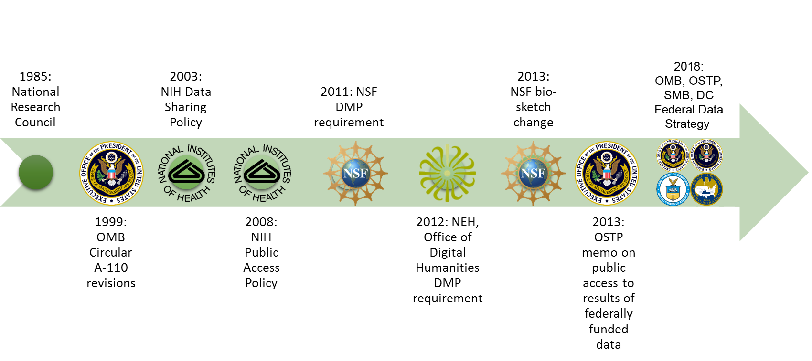
            <div style="position: absolute; bottom: -70px; left: 100px; width: 95%; text-align: left; font-size: 45%; line-height: normal;">Adapted from: Whitmire, Amanda L. (2014). Research Data Management Curriculum, Lecture 2: Introduction to Research Data Management.<br> Oregon State University Libraries. <a target="_blank" href="http://figshare.com/articles/GRAD521_Research_Data_Management_Lectures/1003835">http://figshare.com/articles/GRAD521_Research_Data_Management_Lectures/1003835</a></div>
        </section>

        <section>
            <div style="font-weight: bold; font-size: 110%; margin: auto auto 70px auto;">The 2013 OSTP Memo</div>
            <div style="font-size: 80%; text-align: left; width: 75%; margin-left: 200px;">
                <ul>
                    <li>Transparency and efficiency</li>
                    <li>Growth, security, value</li>
                    <li>Commercial re-use and innovation</li>
                </ul>
            </div>
            <div style="width: 100%; text-align: center; font-size: 50%; line-height: normal; margin-top: 70px;">
              <a target="_blank" href="https://obamawhitehouse.archives.gov/sites/default/files/microsites/ostp/ostp_public_access_memo_2013.pdf">https://obamawhitehouse.archives.gov/sites/default/files/microsites/ostp/ostp_public_access_memo_2013.pdf</a>
            </div>
            <div style="position: absolute; left:700px; top: 90px; width: 400px;">
              Lots of sticks!!
            </div>
            <div style="position: absolute; left:750px; top: 165px; height: 120px; width: 100px; background-size: contain; background-image: url('../../common/assets/images-for-data/stick.png');"></div>
            <div style="position: absolute; left:850px; top: 165px; height: 120px; width: 100px; background-size: contain; background-image: url('../../common/assets/images-for-data/stick.png');"></div>
            <div style="position: absolute; left:900px; top: 165px; height: 120px; width: 100px; background-size: contain; background-image: url('../../common/assets/images-for-data/stick.png');"></div>
            <div style="position: absolute; left:950px; top: 165px; height: 120px; width: 100px; background-size: contain; background-image: url('../../common/assets/images-for-data/stick.png');"></div>
            <div style="position: absolute; left:800px; top: 165px; height: 120px; width: 100px; background-size: contain; background-image: url('../../common/assets/images-for-data/stick.png');"></div>
        </section>

        <section>
            <span style="font-weight: bold; font-size: 110%;">Agency Response</span><br>
            <table border=0 cellspacing=0 cellpadding=0 width=100% style="font-size: 42%;">
             <tr style='height:27.25pt'>
              <td width=56 valign=bottom style='width:42.0pt;background:white;padding:1.55pt .8pt 1.55pt .8pt;  height:27.25pt'></td>
              <td width=785 style='width:589.0pt;background:white;padding:.8pt .8pt 0in .8pt;   height:27.25pt'></td>
              <td width=195 style='width:146.0pt;background:white;padding:.8pt .8pt 0in .8pt;   height:27.25pt'></td>
              <td width=157 colspan=2 style='width:118.0pt;border:none;border-bottom:solid black 1.0pt; background:white;padding:.8pt .8pt 0in .8pt;height:27.25pt'><b>Policy Coverage</b></td>
             </tr>
             <tr style='height:27.25pt'>
              <td width=56 style='width:42.0pt;border:none;border-bottom:solid black 1.0pt; background:white;padding:.8pt .8pt 0in .8pt;height:27.25pt'><b>Funder</b></td>
              <td width=785 style='width:589.0pt;border:none;border-bottom:solid black 1.0pt; background:white;padding:.8pt .8pt 0in .8pt;height:27.25pt'><b>Link to Response</b></td>
              <td width=195 style='width:146.0pt;border:none;border-bottom:solid black 1.0pt; background:white;padding:.8pt .8pt 0in .8pt;height:27.25pt'><b>Timeline to Implement</b></td>
              <td width=79 style='width:59.0pt;border:none;border-bottom:solid black 1.0pt; background:white;padding:.8pt .8pt 0in .8pt;height:27.25pt'><b>Published Outputs</b></td>
              <td width=79 style='width:59.0pt;border-top:solid black 1.0pt;border-left: none;border-bottom:solid black 1.0pt;border-right:none;background:white; padding:.8pt .8pt 0in .8pt;height:27.25pt'><b>Data</b></td>
             </tr>
             <tr style='height:16.5pt; border-bottom: 1px solid black;'>
              <td width=56 style='width:42.0pt;border:none;background:white;padding:.8pt .8pt 0in .8pt;   height:16.5pt'><b>AHRQ</b></td>
              <td width=785 style='width:589.0pt;border:none;background:white;padding:.8pt .8pt 0in .8pt;   height:16.5pt'>
              <a href="http://www.ahrq.gov/funding/policies/publicaccess/index.html">http://www.ahrq.gov/funding/policies/publicaccess/index.html</a></td>
              <td width=195 style='width:146.0pt;border:none;background:white;padding:.8pt .8pt 0in .8pt;   height:16.5pt'>Feb 2015 (A), Oct 2015 (D)</td>
              <td width=79 style='width:59.0pt;border:none;background:white;padding:.8pt .8pt 0in .8pt;   height:16.5pt'>full</td>
              <td width=79 style='width:59.0pt;border:none;background:white;padding:.8pt .8pt 0in .8pt;   height:16.5pt'>full</td>
             </tr>
             <tr style='height:16.5pt'>
              <td width=56 style='width:42.0pt;background:white;padding:.8pt .8pt 0in .8pt;   height:16.5pt'><b>ASPR</b></td>
              <td width=785 style='width:589.0pt;background:white;padding:.8pt .8pt 0in .8pt;   height:16.5pt'>
              <a href="http://www.phe.gov/Preparedness/planning/science/Pages/AccessPlan.aspx">http://www.phe.gov/Preparedness/planning/science/Pages/AccessPlan.aspx</a></td>
              <td width=195 style='width:146.0pt;background:white;padding:.8pt .8pt 0in .8pt;   height:16.5pt'>Oct 2015 (A, D)</td>
              <td width=79 style='width:59.0pt;background:white;padding:.8pt .8pt 0in .8pt;   height:16.5pt'>full</td>
              <td width=79 style='width:59.0pt;background:white;padding:.8pt .8pt 0in .8pt;   height:16.5pt'>full</td>
             </tr>
             <tr style='height:16.5pt'>
              <td width=56 style='width:42.0pt;background:white;padding:.8pt .8pt 0in .8pt;   height:16.5pt'><b>CDC</b></td>
              <td width=785 style='width:589.0pt;background:white;padding:.8pt .8pt 0in .8pt;   height:16.5pt'>
              <a href="http://www.cdc.gov/od/science/docs/Final-CDC-Public-Access-Plan-Jan-2015_508-Compliant.pdf">http://www.cdc.gov/od/science/docs/Final-CDC-Public-Access-Plan-Jan-2015_508-Compliant.pdf</a></td>
              <td width=195 style='width:146.0pt;background:white;padding:.8pt .8pt 0in .8pt;   height:16.5pt'>Jul 2013 (A), Oct 2015 (D)</td>
              <td width=79 style='width:59.0pt;background:white;padding:.8pt .8pt 0in .8pt;   height:16.5pt'>full</td>
              <td width=79 style='width:59.0pt;background:white;padding:.8pt .8pt 0in .8pt;   height:16.5pt'>full</td>
             </tr>
             <tr style='height:16.5pt'>
              <td width=56 style='width:42.0pt;background:white;padding:.8pt .8pt 0in .8pt;   height:16.5pt'><b>DOD</b></td>
              <td width=785 style='width:589.0pt;background:white;padding:.8pt .8pt 0in .8pt;   height:16.5pt'>
              <a href="http://www.dtic.mil/dtic/pdf/dod_public_access_plan_feb2015.pdf">http://www.dtic.mil/dtic/pdf/DoD_PublicAccessPlan_Feb2015.pdf</a></td>
              <td width=195 style='width:146.0pt;background:white;padding:.8pt .8pt 0in .8pt;   height:16.5pt'>estimate fiscal year 2015</td>
              <td width=79 style='width:59.0pt;background:white;padding:.8pt .8pt 0in .8pt;   height:16.5pt'>full</td>
              <td width=79 style='width:59.0pt;background:white;padding:.8pt .8pt 0in .8pt;   height:16.5pt'>full</td>
             </tr>
             <tr style='height:16.55pt'>
              <td width=56 style='width:42.0pt;background:white;padding:.8pt .8pt 0in .8pt;   height:16.55pt'><b>DOE</b></td>
              <td width=785 style='width:589.0pt;background:white;padding:.8pt .8pt 0in .8pt;   height:16.55pt'>
              <a href="http://www.energy.gov/datamanagement/doe-policy-digital-research-data-management">http://www.energy.gov/datamanagement/doe-policy-digital-research-data-management</a></td>
              <td width=195 style='width:146.0pt;background:white;padding:.8pt .8pt 0in .8pt;   height:16.55pt'>Oct 2014 (A) Oct 2015 (D)</td>
              <td width=79 style='width:59.0pt;background:white;padding:.8pt .8pt 0in .8pt;   height:16.55pt'>full</td>
              <td width=79 style='width:59.0pt;background:white;padding:.8pt .8pt 0in .8pt;   height:16.55pt'>full</td>
             </tr>
             <tr style='height:16.5pt'>
              <td width=56 style='width:42.0pt;background:white;padding:.8pt .8pt 0in .8pt;   height:16.5pt'><b>DOT</b></td>
              <td width=785 style='width:589.0pt;background:white;padding:.8pt .8pt 0in .8pt;   height:16.5pt'>
              <a href="https://www.transportation.gov/open/official-dot-public-access-plan">https://www.transportation.gov/open/official-dot-public-access-plan</a></td>
              <td width=195 style='width:146.0pt;background:white;padding:.8pt .8pt 0in .8pt;   height:16.5pt'>Jan 2016</td>
              <td width=79 style='width:59.0pt;background:white;padding:.8pt .8pt 0in .8pt;   height:16.5pt'>full</td>
              <td width=79 style='width:59.0pt;background:white;padding:.8pt .8pt 0in .8pt;   height:16.5pt'>full</td>
             </tr>
             <tr style='height:16.5pt'>
              <td width=56 style='width:42.0pt;background:white;padding:.8pt .8pt 0in .8pt;   height:16.5pt'><b>FDA</b></td>
              <td width=785 style='width:589.0pt;background:white;padding:.8pt .8pt 0in .8pt;   height:16.5pt'>
              <a href="http://www.fda.gov/downloads/ScienceResearch/AboutScienceResearchatFDA/UCM435418.pdf">http://www.fda.gov/downloads/ScienceResearch/AboutScienceResearchatFDA/UCM435418.pdf</a></td>
              <td width=195 style='width:146.0pt;background:white;padding:.8pt .8pt 0in .8pt;   height:16.5pt'>Oct 2015 (A, D)</td>
              <td width=79 style='width:59.0pt;background:white;padding:.8pt .8pt 0in .8pt;   height:16.5pt'>full</td>
              <td width=79 style='width:59.0pt;background:white;padding:.8pt .8pt 0in .8pt;   height:16.5pt'>full</td>
             </tr>
             <tr style='height:16.5pt'>
              <td width=56 style='width:42.0pt;background:white;padding:.8pt .8pt 0in .8pt;   height:16.5pt'><b>IES</b></td>
              <td width=785 style='width:589.0pt;background:white;padding:.8pt .8pt 0in .8pt;   height:16.5pt'>
              <a href="https://ies.ed.gov/funding/researchaccess.asp">https://ies.ed.gov/funding/researchaccess.asp</a><br><a href="http://ies.ed.gov/funding/datasharing_implementation.asp">http://ies.ed.gov/funding/datasharing_implementation.asp</a></td>
              <td width=195 style='width:146.0pt;background:white;padding:.8pt .8pt 0in .8pt;   height:16.5pt'>In effect (A, D), FY 2016 (D)</td>
              <td width=79 style='width:59.0pt;background:white;padding:.8pt .8pt 0in .8pt;   height:16.5pt'>full</td>
              <td width=79 style='width:59.0pt;background:white;padding:.8pt .8pt 0in .8pt;   height:16.5pt'>partial</td>
             </tr>
             <tr style='height:32.05pt'>
              <td width=56 style='width:42.0pt;background:white;padding:.8pt .8pt 0in .8pt;   height:32.05pt'><b>NASA</b></td>
              <td width=785 style='width:589.0pt;background:white;padding:.8pt .8pt 0in .8pt;   height:32.05pt'>
              <a href="http://science.nasa.gov/media/medialibrary/2014/12/05/NASA_Plan_for_increasing_access_to_results_of_federally_funded_research.pdf">http://science.nasa.gov/media/medialibrary/2014/12/05 NASA_Plan_for_increasing_access_to_results_of_federally_funded_research.pdf</a></td>
              <td width=195 style='width:146.0pt;background:white;padding:.8pt .8pt 0in .8pt;   height:32.05pt'>Oct 2015 (A, D)</td>
              <td width=79 style='width:59.0pt;background:white;padding:.8pt .8pt 0in .8pt;   height:32.05pt'>full</td>
              <td width=79 style='width:59.0pt;background:white;padding:.8pt .8pt 0in .8pt;   height:32.05pt'>full</td>
             </tr>
             <tr style='height:16.5pt'>
              <td width=56 style='width:42.0pt;background:white;padding:.8pt .8pt 0in .8pt;   height:16.5pt'><b>NIH</b></td>
              <td width=785 style='width:589.0pt;background:white;padding:.8pt .8pt 0in .8pt;   height:16.5pt'>
              <a href="http://grants.nih.gov/grants/NIH-Public-Access-Plan.pdf">http://grants.nih.gov/grants/NIH-Public-Access-Plan.pdf</a></td>
              <td width=195 style='width:146.0pt;background:white;padding:.8pt .8pt 0in .8pt;   height:16.5pt'>In effect (A, D), Dec 2015 (D)</td>
              <td width=79 style='width:59.0pt;background:white;padding:.8pt .8pt 0in .8pt;   height:16.5pt'>full</td>
              <td width=79 style='width:59.0pt;background:white;padding:.8pt .8pt 0in .8pt;   height:16.5pt'>full</td>
             </tr>
             <tr style='height:16.5pt'>
              <td width=56 style='width:42.0pt;background:white;padding:.8pt .8pt 0in .8pt;   height:16.5pt'><b>NIST</b></td>
              <td width=785 style='width:589.0pt;background:white;padding:.8pt .8pt 0in .8pt;   height:16.5pt'>
              <a href="http://www.nist.gov/data/upload/NIST-Plan-for-Public-Access.pdf">http://www.nist.gov/data/upload/NIST-Plan-for-Public-Access.pdf</a></td>
              <td width=195 style='width:146.0pt;background:white;padding:.8pt .8pt 0in .8pt;   height:16.5pt'>Oct. 2015 (A, D)</td>
              <td width=79 style='width:59.0pt;background:white;padding:.8pt .8pt 0in .8pt;   height:16.5pt'>partial</td>
              <td width=79 style='width:59.0pt;background:white;padding:.8pt .8pt 0in .8pt;   height:16.5pt'>full</td>
             </tr>
             <tr style='height:16.5pt'>
              <td width=56 style='width:42.0pt;background:white;padding:.8pt .8pt 0in .8pt;   height:16.5pt'><b>NOAA</b></td>
              <td width=785 style='width:589.0pt;background:white;padding:.8pt .8pt 0in .8pt;   height:16.5pt'>
              <a href="http://docs.lib.noaa.gov/noaa_documents/NOAA_Research_Council/NOAA_PARR_Plan_v5.04.pdf">http://docs.lib.noaa.gov/noaa_documents/NOAA_Research_Council/NOAA_PARR_Plan_v5.04.pdf</a></td>
              <td width=195 style='width:146.0pt;background:white;padding:.8pt .8pt 0in .8pt;   height:16.5pt'>FY2016, Q2 (A, D) (Jan 2016)</td>
              <td width=79 style='width:59.0pt;background:white;padding:.8pt .8pt 0in .8pt;   height:16.5pt'>full</td>
              <td width=79 style='width:59.0pt;background:white;padding:.8pt .8pt 0in .8pt;   height:16.5pt'>full</td>
             </tr>
             <tr style='height:16.5pt'>
              <td width=56 style='width:42.0pt;background:white;padding:.8pt .8pt 0in .8pt;   height:16.5pt'><b>NSF</b></td>
              <td width=785 style='width:589.0pt;background:white;padding:.8pt .8pt 0in .8pt;   height:16.5pt'>
              <a href="http://www.nsf.gov/pubs/2015/nsf15052/nsf15052.pdf">http://www.nsf.gov/pubs/2015/nsf15052/nsf15052.pdf
              </a></td>
              <td width=195 style='width:146.0pt;background:white;padding:.8pt .8pt 0in .8pt;   height:16.5pt'>Jan 2016 (A, D)</td>
              <td width=79 style='width:59.0pt;background:white;padding:.8pt .8pt 0in .8pt;   height:16.5pt'>full</td>
              <td width=79 style='width:59.0pt;background:white;padding:.8pt .8pt 0in .8pt;   height:16.5pt'>full</td>
             </tr>
             <tr style='height:16.5pt'>
              <td width=56 style='width:42.0pt;background:white;padding:.8pt .8pt 0in .8pt;   height:16.5pt'><b>SI</b></td>
              <td width=785 style='width:589.0pt;background:white;padding:.8pt .8pt 0in .8pt;   height:16.5pt'>
              <a href="http://public.media.smithsonianmag.com/file_upload_plugin/1f143b54-a9f9-4746-bef5-1c76151e3c7a.pdf">http://public.media.smithsonianmag.com//file_upload_plugin/1f143b54-a9f9-4746-bef5-1c76151e3c7a.pdf</a></td>
              <td width=195 style='width:146.0pt;background:white;padding:.8pt .8pt 0in .8pt;   height:16.5pt'>Oct. 2015 (A, D)</td>
              <td width=79 style='width:59.0pt;background:white;padding:.8pt .8pt 0in .8pt;   height:16.5pt'>full</td>
              <td width=79 style='width:59.0pt;background:white;padding:.8pt .8pt 0in .8pt;   height:16.5pt'>full</td>
             </tr>
             <tr style='height:16.5pt'>
              <td width=56 style='width:42.0pt;background:white;padding:.8pt .8pt 0in .8pt;   height:16.5pt'><b>USDA</b></td>
              <td width=785 style='width:589.0pt;background:white;padding:.8pt .8pt 0in .8pt;   height:16.5pt'>
              <a href="http://www.usda.gov/documents/USDA-Public-Access-Implementation-Plan.pdf">http://www.usda.gov/documents/USDA-Public-Access-Implementation-Plan.pdf</a></td>
              <td width=195 style='width:146.0pt;background:white;padding:.8pt .8pt 0in .8pt;   height:16.5pt'>Jan 2016 (A)</td>
              <td width=79 style='width:59.0pt;background:white;padding:.8pt .8pt 0in .8pt;   height:16.5pt'>full</td>
              <td width=79 style='width:59.0pt;background:white;padding:.8pt .8pt 0in .8pt;   height:16.5pt'>partial</td>
             </tr>
             <tr style='height:16.5pt'>
              <td width=56 style='width:42.0pt;background:white;padding:.8pt .8pt 0in .8pt;   height:16.5pt'><b>USAID</b></td>
              <td width=785 style='width:589.0pt;background:white;padding:.8pt .8pt 0in .8pt;   height:16.5pt'>
              <a href="http://blog.usaid.gov/2014/10/announcing-usaids-open-data-policy/">http://blog.usaid.gov/2014/10/announcing-usaids-open-data-policy/</a></td>
              <td width=195 style='width:146.0pt;background:white;padding:.8pt .8pt 0in .8pt;   height:16.5pt'>October 1, 2014 (D)</td>
              <td width=79 style='width:59.0pt;background:white;padding:.8pt .8pt 0in .8pt;   height:16.5pt'>none</td>
              <td width=79 style='width:59.0pt;background:white;padding:.8pt .8pt 0in .8pt;   height:16.5pt'>full</td>
             </tr>
             <tr style='height:16.5pt'>
              <td width=56 style='width:42.0pt;background:white;padding:.8pt .8pt 0in .8pt;   height:16.5pt'><b>USGS</b></td>
              <td width=785 style='width:589.0pt;background:white;padding:.8pt .8pt 0in .8pt;   height:16.5pt'>
              <a href="http://www.usgs.gov/usgs-manual/im/IM-OSQI-2015-01.html">http://www.usgs.gov/usgs-manual/im/IM-OSQI-2015-01.html</a></td>
              <td width=195 style='width:146.0pt;background:white;padding:.8pt .8pt 0in .8pt;   height:16.5pt'>Oct 1, 2015 (A, D)</td>
              <td width=79 valign=bottom style='width:59.0pt;background:white;padding:.8pt .8pt 0in .8pt;   height:16.5pt'>full</td>
              <td width=79 style='width:59.0pt;background:white;padding:.8pt .8pt 0in .8pt;   height:16.5pt'>full</td>
             </tr>
             <tr style='height:16.5pt; border-bottom: 1px solid black;'>
              <td width=56 style='width:42.0pt;background:white;padding:.8pt .8pt 0in .8pt;   height:16.5pt'><b>VA</b></td>
              <td width=785 style='width:589.0pt;background:white;padding:.8pt .8pt 0in .8pt;   height:16.5pt'>
              <a href="http://www.va.gov/ORO/Docs/Guidance/VA_RSCH_DATA_ACCESS_PLAN_07_23_2015.pdf">http://www.va.gov/ORO/Docs/Guidance/VA_RSCH_DATA_ACCESS_PLAN_07_23_2015.pdf</a></td>
              <td width=195 style='width:146.0pt;background:white;padding:.8pt .8pt 0in .8pt;   height:16.5pt'>October 1, 2015 (A, D)</td>
              <td width=79 style='width:59.0pt;background:white;padding:.8pt .8pt 0in .8pt;   height:16.5pt'>partial</td>
              <td width=79 style='width:59.0pt;background:white;padding:.8pt .8pt 0in .8pt;   height:16.5pt'>partial</td>
             </tr>
            </table>
            <br><span style="font-size: 50%;">adapted from <a target="_blank" href="http://bit.ly/FedOASummary ">http://bit.ly/FedOASummary</a></span>
        </section>
        
        <section>
            <div style="font-weight: bold; font-size: 110%; margin: auto auto auto auto;">The 2018 Federal Data Strategy</div>
            <div style="width: 100%; text-align: center; font-size: 60%; line-height: normal;">
              <a target="_blank" href="https://strategy.data.gov">https://strategy.data.gov</a>
            </div>
            <div style="font-size: 80%; text-align: left; width: 75%; margin-left: 240px; margin-top: 30px;">
                <ul>
                    <li>Enterprise Data Governance</li>
                    <li>Access, Use, Augmentation</li>
                    <li>Decision Making & Accountability</li>
                    <li>Commercialization, Innovation, and Public Use</li>
                </ul>
            </div>
            <div style="width: 70%; font-size: 60%; margin-top: 40px; margin-left: auto; margin-right: auto">
                This is a collaborative effort that addresses the cross-agency priority (CAP) goal to <a href="https://www.performance.gov/CAP/CAP_goal_2.html">Leverage Data as a Strategic Asset</a>.
            </div>
            <aside class="notes">
              Data.gov in 2009 (referenced later as well)<br>Note that the strategic development is interdepartmental "Cross-Agency Priority (CAP) Goal"
            </aside>
        </section>

      </section>
      
      <!-- ***
            * What is Data?
            * -->

      <section>

        <section data-background-image="../../common/assets/images-for-data/matrix.jpg" style="color: #92d050 !important;">
            <div style="background-color: rgba(0, 0, 0, 0.7); width: 100%; padding: 50px 0px 100px 0px">
                <div style="font-weight: bold; font-size: 110%; position: relative; left: -120px;">What is Data?</div>
                <div class="fragment" style="font-size: 70%; line-height: normal; text-align: left; margin: 50px auto 0px auto;">
                  <table style="width: 60%;"><tr><td>
                    Numbers<br>
                    Words<br>
                    Citations / references<br>
                    Notebooks / marginalia<br>
                    Specimens<br>
                    Field Samples
                  </td><td>
                    Images<br>
                    Videos / sound recording<br>
                    Relationships<br>
                    Models<br>
                    Code<br><br>
                  </td></tr></table>
                </div>
            </div>
        </section>

        <section data-background-image="../../common/assets/images-for-data/matrix.jpg" style="color: #92d050 !important;">
            <div style="background-color: rgba(0, 0, 0, 0.7); width: 100%;">
                <br><div style="font-weight: bold; font-size: 110%; position: relative; left: -120px;">What is Data?</div>
                <br><div style="margin-left: auto; margin-right: auto; width: 60%; font-size: 80%; line-height: normal; border: 1px solid #92d050; background-color: rgba(0, 0, 0, 0.9); padding: 13px; text-align: left;">
                  “Examples of Research Data and Materials include laboratory notebooks, notes of any type, photographs, films, digital images, original biological and environmental samples, protocols, numbers, graphs, charts, numerical raw experimental results, instrumental outputs from which Research Data can be derived and other deliverables under sponsored agreements.”</div><br><br>
                <div style="font-size: 50%">Johns Hopkins University (2008) - <a target="_blank" href="http://jhuresearch.jhu.edu/Data_Management_Policy.pdf">http://jhuresearch.jhu.edu/Data_Management_Policy.pdf</a><br><br></div>
            </div>
        </section>

        <section data-background-image="../../common/assets/images-for-data/matrix.jpg" style="color: #92d050 !important;">
            <div style="background-color: rgba(0, 0, 0, 0.7); width: 100%; padding: 50px 0px 80px 0px;">
                <div style="font-weight: bold; font-size: 110%; margin: 0px auto 0px auto;">What is Data?</div>
                <div style="margin: 50px auto 0px auto; width: 80%; font-size: 70%; line-height: normal; border: 1px solid #92d050; background-color: rgba(0, 0, 0, 0.9); padding: 13px; text-align: left;">
                  Definitions: The term “Research Data” in this document refers to information recorded and/or collected for research performed at or under the auspices of the University regardless of the form or the media upon which it is recorded. This term includes, but is not limited to, computer programs (code and documentation), computer databases, instrumental outputs, raw numerical results, original biological or environmental samples, photographs, digital images, films, protocols, graphs, and other deliverables produced under sponsored agreements. Research Data also includes any records related to the design, conduct or reporting of the research that would be necessary to reconstruct the reported research results. Research data can be intangible (statistics, findings, conclusions, etc.) and tangible (notebooks, printouts, etc.).</div>
            </div>
            <aside class="notes">From the data curation initiative at UM (2016), a combination of definitions from several peer institutions</aside>
        </section>

        <section>
            <br><span style="font-weight: bold; font-size: 110%; position: relative; left: -100px;">The 2013 OSTP Memo</span><br><br>
            <div style="font-size: 80%; text-align: left; width: 75%; position: relative; left: 150px;">
                <ul>
                    <li>Data (from OMB Circular 110):</li> 
                </ul>
                <div style="font-size: 80%; position: relative; left: 30px; padding-bottom: 100px;">
                    “Data is defined … as the digitally recorded factual material commonly accepted in the scientific community as necessary to validate research findings including data sets used to support scholarly publications, but does not include laboratory notebooks, preliminary analyses, drafts of scientific papers, plans for future research, peer review reports, communications with colleagues, or physical objects, such as laboratory specimens.”
                </div>
            </div>
            <div style="position: absolute; bottom: -55px; right: 220px; width: 100%; text-align: right; font-size: 50%; line-height: normal;"><a target="_blank" href="https://www.whitehouse.gov/sites/default/files/microsites/ostp/ostp_public_access_memo_2013.pdf ">https://www.whitehouse.gov/sites/default/files/microsites/ostp/ostp_public_access_memo_2013.pdf</a></div>
        </section>
        
        <section data-background-image="../../common/assets/images-for-data/matrix.jpg" style="color: #92d050 !important;">
            <div style="background-color: rgba(0, 0, 0, 0.7); width: 100%; padding: 50px 0px 100px 0px">
                <div style="font-weight: bold; font-size: 110%; position: relative; left: -120px;">What is Data?</div>
                <div style="font-size: 70%; line-height: normal; text-align: left; margin: 50px auto 0px auto;">
                  <table style="width: 60%;"><tr><td>
                    Numbers<br>
                    Words<br>
                    Citations / references<br>
                    Notebooks / marginalia<br>
                    Specimens<br>
                    Field Samples
                  </td><td>
                    Images<br>
                    Videos / sound recording<br>
                    Relationships<br>
                    Models<br>
                    Code<br><br>
                  </td></tr></table>
                </div>
            </div>
        </section>
        
        <section data-background-image="../../common/assets/images-for-data/matrix.jpg" style="color: #92d050 !important;">
          <div style="background-color: rgba(0, 0, 0, 0.7); width: 100%; height: 100%;">
          <br><div style="font-weight: bold; font-size: 110%; position: relative; left: -120px; top: -30px;">What is DATA Management?</div>
          <br><div style="font-size: 90%; line-height: normal; text-align: left; position: relative; left: 250px; top: -50px">Data?</div>
            <div style="font-size: 60%; line-height: normal; text-align: left; position: relative; left: 250px; position: relative; top: -40px;">
            Numbers<br>
            Words<br>
            Citations / references<br>
            Notebooks / marginalia<br>
            Specimens<br>
            Field Samples<br>
            Images<br>
            Videos / sound recording<br>
            Relationships<br>
            Models<br>
            Code<br><br><br>
            </div>
          <div class="fragment" style="font-size: 90%; line-height: normal; text-align: left; position: absolute; left: 700px; top: 120px;">Data Management?</div>
            <div class="fragment" style="font-size: 60%; line-height: normal; text-align: left; position: absolute; left: 700px; top: 180px;">
            File System Organization<br>
            File Naming Conventions<br>
            Privacy/Security Considerations<br>
            File Format Choice<br>
            Documentation and metadata<br>
            Roles and responsibilities in research environment<br>
            Storage and backup strategies<br>
            Acquiring and cleaning data<br>
            Sharing and collaboration strategies<br>
            Ownership of data<br>
            Access strategies / Access restrictions<br>
            Data publication / Data citation<br>
            </div>
          </div>
          <div class="fragment" style="background-color: #000; border: 1px solid #92d050; position: absolute; left:190px; top: 300px; font-size: 120%; padding: 20px; padding-left: 100px; padding-right: 100px; -ms-transform: rotate(325deg); -webkit-transform: rotate(325deg); transform: rotate(325deg);">¿TOOLS?</div>
          <div class="fragment" style="background-color: #000; border: 1px solid #92d050; position: absolute; left:590px; top: 300px; font-size: 120%; padding: 20px; padding-left: 100px; padding-right: 100px; -ms-transform: rotate(325deg); -webkit-transform: rotate(325deg); transform: rotate(325deg);">¿VISUALIZATION?</div>
        </section>
        
        <section>
            <div style="float: right; top: 0px; font-weight: bold; font-size: 110%; position: relative; right: 150px;">Some Useful Abstractions</div>
            <div style="width: 45%; float: left;">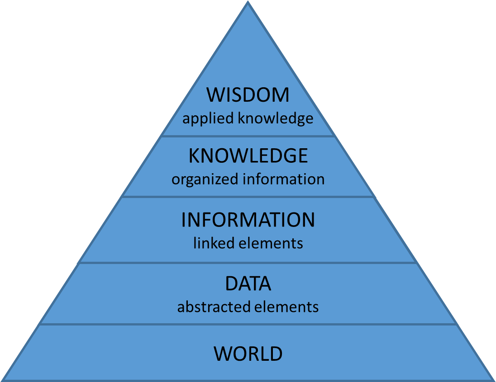</div>
            <div class="fragment" style="width: 45%; float: right; font-size: 80%; line-height: normal; text-align: right; position: relative; right: 150px;">
            <br><br>“Information is not knowledge.<br>
                Knowledge is not wisdom.<br>
                Wisdom is not truth.<br>
                Truth is not beauty.<br>
                Beauty is not love.<br>
                Love is not music.<br>
                Music is THE BEST.”<br><br>
                ― Frank Zappa&nbsp;&nbsp;
            </div>
        </section>

      </section>
      
      <!-- ***
            * Data in the research environment
            * -->
            
      <section>

        <section>
          <div style="width: 1400px; height: 780px; position: absolute; top: -15px; left: -15px;">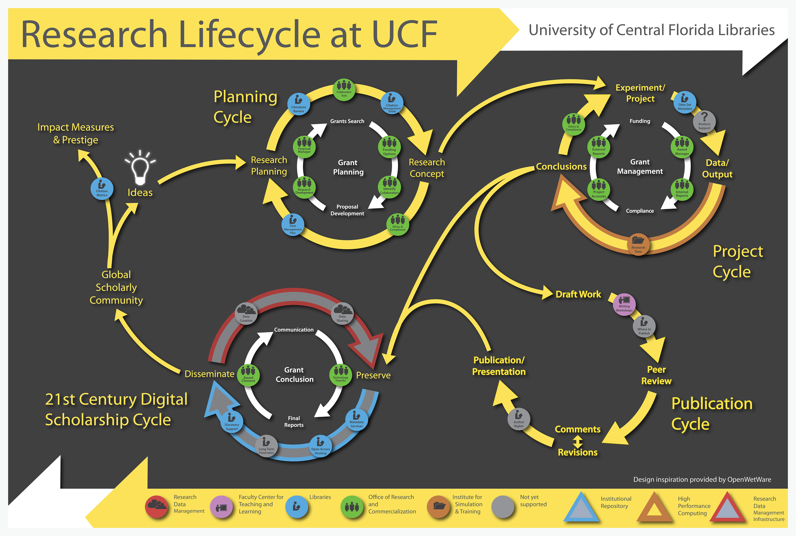</div>
          <div class="fragment fade-left" style="width: 1400px; height: 780px; position: absolute; top: -15px; left: -15px; overflow: hidden;"></div>
          <div class="fragment fade-left" style="width: 1400px; height: 780px; position: absolute; top: -15px; left: -15px; overflow: hidden;"></div>
          <div class="fragment fade-up" style="width: 1400px; height: 780px; position: absolute; top: -15px; left: -15px; overflow: hidden;"></div>
          <div class="fragment fade-right" style="width: 1400px; height: 780px; position: absolute; top: -15px; left: -15px; overflow: hidden;"></div>
          <div class="fragment fade-in" style="width: 1400px; height: 780px; position: absolute; top: -15px; left: -15px; background-color: #fff"></div>
        </section>

        <section>
            <div style="width: 75%; float: left;">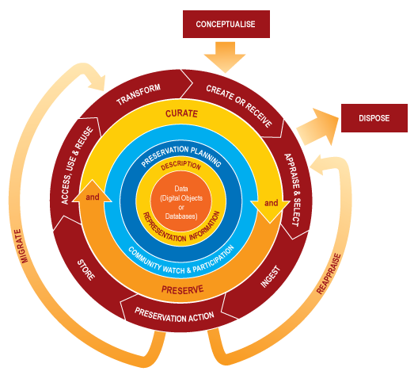</div>
            <div style="position: absolute; top: 23px; right: 125px; font-weight: bold; font-size: 110%;">Data Curation Lifecycle<br>Data Curation Center (DCC)</div>
            <div style="position: absolute; bottom: -30px; right:125px; width: 100%; text-align: right; font-size: 50%; line-height: normal;"><a target="_blank" href="http://www.dcc.ac.uk/resources/curation-lifecycle-model">http://www.dcc.ac.uk/resources/curation-lifecycle-model</a></div>
        </section>

        <section>
            <div style="position: absolute; left: 140px; top: 20px; font-size: 110%; font-weight: bold;">UC Davis</div>
            
            <div style="position: absolute; bottom: -30px; right: 0px; width: 400px; text-align: left; font-size: 50%; line-height: normal;"><a target="_blank" href="http://libguides.ucd.ie/data">http://libguides.ucd.ie/data</a></div>
        </section>

        <section>
            <span style="font-size: 110%; font-weight: bold;">The US Geological Survey</span><br><br>
            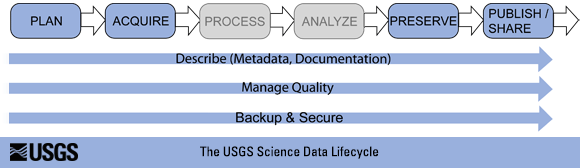
            <div style="position: absolute; bottom: -60px; width: 100%; text-align: center; font-size: 50%; line-height: normal;"><a target="_blank" href="http://www.usgs.gov/datamanagement/images/figures/USGS-data-lifecycle-model.png">http://www.usgs.gov/datamanagement/images/figures/USGS-data-lifecycle-model.png</a></div>
        </section>

        <section>
            <span style="font-size: 110%; font-weight: bold;">University of Virginia Library</span><br><br>
            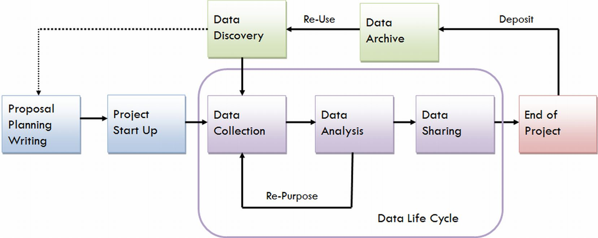
            <div style="position: absolute; bottom: -60px; width: 100%; text-align: center; font-size: 50%; line-height: normal;"><a target="_blank" href="https://data.library.virginia.edu/files/Research-Life-Cycle-LG.png">https://data.library.virginia.edu/files/Research-Life-Cycle-LG.png</a></div>
        </section>

        <section>
            <div style="position: absolute; left: 100px; top: 160px; font-size: 110%; font-weight: bold;">UC Santa Cruz</div>
            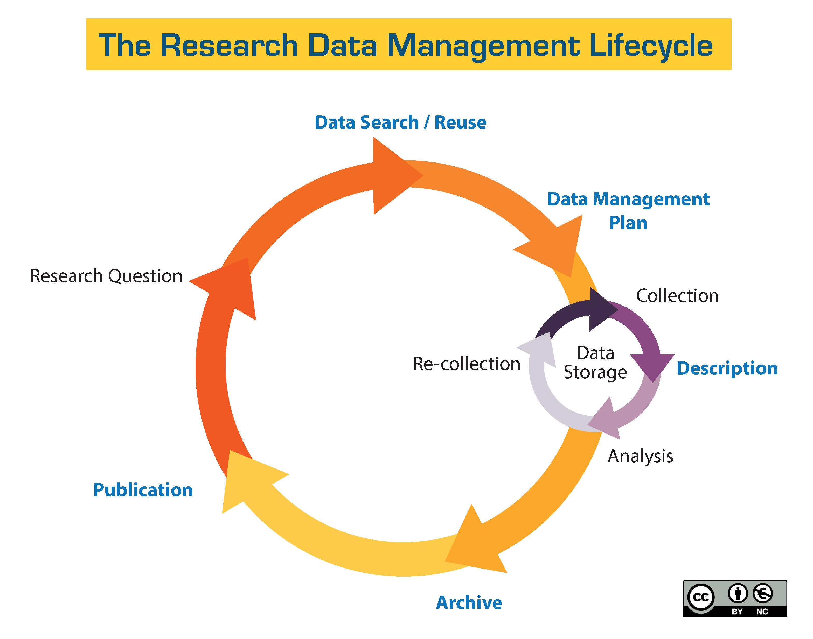
            <div style="position: absolute; bottom: -30px; left: 120px; text-align: left; font-size: 50%; line-height: normal;"><a target="_blank" href="http://guides.library.ucsc.edu/datamanagement/">http://guides.library.ucsc.edu/datamanagement/</a></div>
        </section>

        <section data-background-image="../../common/assets/images-for-data/curationmountain.png">
        </section>

        <section>
            <br><br><br>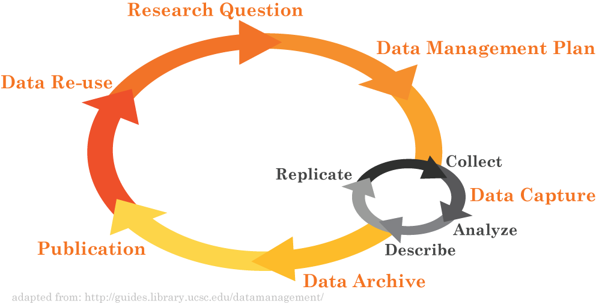
            <div style="position: absolute; top: 50px; left: 100px; font-size: 110%; font-weight: bold;">University of Miami Libraries</div>
            <div style="position: absolute; bottom: -40px; right: 50px; width: 400px; text-align: left; font-size: 50%; line-height: normal;"><a target="_blank" href="http://library.miami.edu/datacuration/">http://library.miami.edu/datacuration/</a></div>
        </section>

        <section data-background-image="../../common/assets/images-for-data/matrix.jpg" style="color: #92d050 !important;">
            <div style="background-color: rgba(0, 0, 0, 0.7); width: 100%; heigh: 100%; position: relative; top: -50px;">
                <span style="color: #92d050 !important; font-size: 110%; font-weight: bold; position: relative; top: 50px;"><i>Research</i> Data Management</span><div style="width: 100%; height: 480px"></div>
                <div class="fragment current-visible" style="position: absolute; top: 162px; left: 220px; font-size: 70%; line-height: normal; text-align: left;">
                Before: Data Management Planning / Grant Process<br><br><br><br>
                During: Compliance and Productivity<br><br><br><br>
                After: Publication and/or Repository Deposit<br><br><br><br>
                </div><br><br>
                <div class="fragment current-visible" style="position: absolute; top: 162px; left: 220px; font-size: 70%; line-height: normal; text-align: left;">
                Before: Data Management Planning / Grant Process<br><br><br><br>
                <span style="opacity: 0.4">During: Compliance and Productivity<br><br><br><br>
                After: Publication and/or Repository Deposit<br><br><br><br></span>
                <div style="position: absolute; top: 50px; left: 50px; font-size: 80%; line-height: normal; margin: 1px; border: 2px solid #92d050; background-color: rgba(0, 0, 0, 0.9); padding: 13px; text-align: left; width: 90%;">
                    Privacy/Security Considerations<br>
                    Storage and backup strategies<br>
                    File System Organization<br>
                    File Naming Conventions<br>
                    File Format Choice<br>
                    Documentation and metadata<br>
                    Roles and responsibilities in research environment<br>
                    Sharing and collaboration strategies<br>
                    Ownership of data<br>
                    Access strategies / Access restrictions
                </div>
                </div>
                <div class="fragment current-visible" style="position: absolute; top: 162px; left: 220px; font-size: 70%; line-height: normal; text-align: left;">
                <span style="opacity: 0.4">Before: Data Management Planning / Grant Process<br><br><br><br></span>
                During: Compliance and Productivity<br><br><br><br>
                <span style="opacity: 0.4">After: Publication and/or Repository Deposit<br><br><br><br></span>
                <div style="position: absolute; top: 200px; left: 50px; font-size: 80%; line-height: normal; margin: 2px; border: 1px solid #92d050; background-color: rgba(0, 0, 0, 0.9); padding: 13px; text-align: left; width: 90%;">
                    Follow file naming, organization and format conventions<br>
                    Documentation and metadata<br>
                    Acquiring and cleaning data<br>
                    Regularly backup all data<br>
                    Be mindful when sharing / version control<br>
                    Access / privacy policy enforcement
                </div>
                </div>
                <div class="fragment current-visible" style="position: absolute; top: 162px; left: 220px; font-size: 70%; line-height: normal; text-align: left;">
                <span style="opacity: 0.4">Before: Data Management Planning / Grant Process<br><br><br><br>
                During: Compliance and Productivity<br><br><br><br></span>
                After: Publication and/or Repository Deposit<br><br><br><br>
                <div style="position: absolute; top: 360px; left: 50px; font-size: 80%; line-height: normal; border: 1px solid #92d050; background-color: rgba(0, 0, 0, 0.9); padding: 13px; text-align: left; width: 90%;">
                    Publish<br>
                    Deposit in a repository<br>
                </div>
                </div>
            </div>
        </section>
        
        <section>
            <span style="font-weight: bold; font-size: 110%;">Sensors and Data Levels</span><br><br>
            <table style="font-size: 60%; border: solid black 1px; width: 80%;"><tablebody><tr style="font-style: italic">
                <td>Active vs. Static:</td><td>Data Storage:</td><td>Example or Focus:</td><td>Typical File Formats:</td>
              </tr><tr>
                <td rowspan="3" style="vertical-align: abs-middle; text-align: center; font-size: 105%">ACTIVE</td><td style="background-color: rgb(251,229,214)">Raw Data:</td><td style="background-color: rgb(251,229,214)">Temperature readings over time</td><td style="background-color: rgb(251,229,214)">Paper?   Device-specific? .xlsx, …</td>
              </tr><tr style="background-color: rgb(243,203,173)">
                    <td>Processed Data:</td><td>“Cleaned,” normalized temperature data compiled in spreadsheet</td><td>.xlsx, .sas, …</td>
              </tr><tr style="background-color: rgb(244,177,131)">
                    <td>Analyzed Data:</td><td>Temperature data with averages computed, graphs charted</td><td>.xlsx, .sas, …</td>
              </tr><tr style="background-color: rgb(132,60,12); color: #FFF">
                <td>STATIC</td><td>Finalized, Published Data:</td><td>Do the data support hypothesis?</td><td>.csv</td>
            </tr></tablebody></table>
            <br><br><span style="font-size: 50%;">adapted from <a target="_blank" href="http://classguides.lib.uconn.edu/">http://classguides.lib.uconn.edu/</a></span>
        </section>
      
      </section>
      
      <!-- ***
            * Why Manage Data?
            * -->

      <section>

        <section data-background-image="../../common/assets/images-for-data/matrix.jpg" style="color: #92d050 !important;">
            <div style="background-color: rgba(0, 0, 0, 0.7); width: 80%; margin-right: 10%; margin-left: 10%;">
                <br><span style="font-weight: bold; font-size: 110%; position: relative; left: -100px;">Why Manage Data</span><br><br>
                <div style="font-size: 85%; text-align: left; width: 75%; position: relative; left: 150px;">
                <ul><li>Productivity</li>
                    <ul style="font-size: 85%;">
                        <li>Publishing</li>
                        <li>Knowledge creation</li>
                        <li>Career advancement</li></ul></ul><br><br><br>
                <ul><li style="position: relative; left: 42px;">Compliance</li>
                    <ul style="font-size: 85%;">
                        <li style="position: relative; left: 65px;">Grant writing</li>
                        <li style="position: relative; left: 65px;">University policy</li>
                        <li style="position: relative; left: 65px;">Research ethics</li></ul></ul><br><br><br><br>
                </div>
            </div>
            <div style="position: absolute; left:750px; top: 170px; height: 140px; width: 100px; background-size: contain; background-image: url('../../common/assets/images-for-data/carrot.png');"></div>
            <div style="position: absolute; left:800px; top: 440px; height: 130px; width: 100px; background-size: contain; background-image: url('../../common/assets/images-for-data/stick.png');"></div>
            <div class="fragment" style="background-color: #000; border: 1px solid #92d050; position: absolute; left:390px; top: 300px; font-size: 120%; padding: 20px; padding-left: 100px; padding-right: 100px; -ms-transform: rotate(335deg); -webkit-transform: rotate(335deg); transform: rotate(335deg);">¿SOMETHING ELSE?</div>
        </section>

        <section>
            <div style="font-weight: bold; font-size: 110%;">Why Manage Data<br>Researcher Perspective</div>
            <div style="width: 75%; margin: 50px auto 0px auto; font-size: 80%; text-align: left; line-height: 120%;">
              <ul style="font-size: 85%; margin-left: 100px;">
                  <li><i>Keep yourself organized</i></li>
                  <li><i>Track your science processes for reproducibility</i></li>
                  <li><i>Better control versions of data</i></li>
                  <li><i>Quality control your data more efficiently</i></li>
                  <li><i>Make backups to avoid data loss</i></li>
                  <li><i>Format your data for re-use (by yourself or others)</i></li>
                  <li><i>Be prepared: Document your data for your own recollection, accountability, and re-use (by yourself or others)</i></li>
                  <li><i>Prepare it to share it – gain credibility and recognition for your science efforts!</i></li>
              </ul>
            </div>
            <div style="font-size: 40%; color: #555; position: absolute; left: 900px; top: 610px; text-align: left;">slide adapted from<br><a href="https://www.dataone.org/education-modules" border="0"></a></div>
            <aside class="notes">From <a href="https://www.dataone.org/education-modules">https://www.dataone.org/education-modules</a> (see lesson 1)</aside>
        </section>      

        <section>
            <div style="font-weight: bold; font-size: 110%;">Well managed, publically accessible data is important: why?<br><br></div>
            <div style="width: 70%; margin-left: auto; margin-right: auto; font-size: 85%; text-align: left; top: 130px; line-height: 120%;">
              Here are a few reasons (from the UK Data Archive):<br><br>
              <ul style="font-size: 85%;">
                <li>Increases the impact and visibility of research</li>
                <li>Promotes innovation and potential new data uses</li>
                <li>Leads to new collaborations between data users and creators</li>
                <li>Maximizes transparency and accountability</li>
                <li>Enables scrutiny of research findings</li>
                <li>Encourages improvement and validation of research methods</li>
                <li>Reduces cost of duplicating data collection</li>
                <li>Provides important resources for education and training</li>
              </ul><br><br><br>
            </div>
          </section>    

      </section>
      
      <!-- ***
            * File Formats
            * -->

      <section>
      
        <section>
          <div style="font-weight: bold; font-size: 110%; margin-bottom: 42px;">File Formats</div>
          <div class="fragment" style="width: 100%; font-size: 0.07em; text-align: left; -webkit-column-count: 4; -moz-column-count: 4; column-count: 4; position: relative;">
            <pre>
.?Q? – files that are compressed, often by the SQ program.
7z – 7-Zip compressed file
AAPKG – ArchestrA IDE
AAC – Advanced Audio Coding
ace – ACE compressed file
ALZ – ALZip compressed file
APK – Android package: Applications installable on Android; package format of the Alpine Linux distribution
APPX – Microsoft Application Package (.appx)
AT3 – Sony's UMD data compression
.bke – BackupEarth.com data compression
ARC – pre-Zip data compression
ARC - Nintendo U8 Archive (mostly Yaz0 compressed)
ARJ – ARJ compressed file
ASS (also SAS) – a subtitles file created by Aegisub, a video typesetting application (also a Halo game engine file)
B – (B file) Similar to .a, but less compressed.
BA – Scifer Archive (.ba), Scifer External Archive Type
big – Special file compression format used by Electronic Arts to compress the data for many of EA's games
BIN – compressed archive, can be read and used by CD-ROMs and Java, extractable by 7-zip and WINRAR
bjsn – Used to store The Escapists saves on Android.
BKF (.bkf) – Microsoft backup created by NTBackup.c
bzip2 (.bz2) –
bld – Skyscraper Simulator Building
cab – A cabinet (.cab) file is a library of compressed files stored as one file. Cabinet files are used to organize installation files that are copied to the user's system.[2]
c4 – JEDMICS image files, a DOD system
cals – JEDMICS image files, a DOD system
CLIPFLAIR (.clipflair, .clipflair.zip) – ClipFlair Studio ClipFlair component saved state file (contains component options in XML, extra/attached files and nested components' state in child .clipflair.zip files – activities are also components and can be nested at any depth)
CPT, SEA – Compact Pro (Macintosh)
DAA – Closed-format, Windows-only compressed disk image
deb – Debian install package
DMG – an Apple compressed/encrypted format
DDZ – a file which can only be used by the "daydreamer engine" created by "fever-dreamer", a program similar to RAGS, it's mainly used to make somewhat short games.
DN – Adobe Dimension CC file format
DPE – Package of AVE documents made with Aquafadas digital publishing tools.
.egg – Alzip Egg Edition compressed file
EGT (.egt) – EGT Universal Document also used to create compressed cabinet files replaces .ecab
ECAB (.ECAB, .ezip) – EGT Compressed Folder used in advanced systems to compress entire system folders, replaced by EGT Universal Document
ESD – Electronic Software Distribution, a compressed and encrypted WIM File
ESS (.ess) – EGT SmartSense File, detects files compressed using the EGT compression system.
Flipchart file (.flipchart) – Used in Promethean ActivInspire Flipchart Software.
GBP – GBP File Extension – What is a .gbp file and how do I open it? 2 types of files: 1. An archive index file that is created by Genie Timeline [2]. It contains references to the files that the user has chosen to backup; the references can be to an archive file or a batch of files. This files can be opened using Genie-Soft Genie Timeline on Windows. 2. A data output file created by CAD Printed Circuit Board (PCB). This type of file can be opened on Windows using Autodesk EAGLE EAGLE | PCB Design Software | Autodesk, Altium Designer [3], Viewplot Welcome to Viewplot.com ...For PCB Related Software;...Viewplot The Gerber Viewer & editor in one......PCB Elegance a professional layout package for a affordable price, Gerbv gerbv – A Free/Open Source Gerber Viewer on Mac using Autodesk EAGLE, Gerbv, gEDA gplEDA Homepage and on Linux using Autodesk EAGLE, gEDA, Gerbv
GHO (.gho, .ghs) – Norton Ghost
GIF (.gif) – Graphics Interchange Format
gzip (.gz) – Compressed file
HTML (.html) HTML code file
IPG (.ipg) – Format in which Apple Inc. packages their iPod games. can be extracted through Winrar
jar – ZIP file with manifest for use with Java applications.
LBR (.Lawrence) – Lawrence Compiler Type file
LBR – Library file
LQR – LBR Library file compressed by the SQ program.
LHA (.lzh) – Lempel, Ziv, Huffman
lzip (.lz) – Compressed file
lzo
lzma – Lempel–Ziv–Markov chain algorithm compressed file
LZX
MBW (.mbw) – MBRWizard archive
MHTML – Mine HTML (Hyper-Text Markup Language) code file
MPQ Archives (.mpq) – Used by Blizzard Entertainment
BIN (.bin) – MacBinary
NTH (.nth) – Nokia Theme Used by Nokia Series 40 Cellphones
OAR (.oar) – OAR archive
OSK - Compressed osu! skin archive
OSZ – Compressed osu! beatmap archive
PAK – Enhanced type of .ARC archive
PAR (.par, .par2) – Parchive
PAF (.paf) – Portable Application File
PEA (.pea) – PeaZip archive file
PHP (.php) – PHP code file
PYK (.pyk) – Compressed file
PK3 (.pk3) – Quake 3 archive (See note on Doom³)
PK4 (.pk4) – Doom³ archive (Opens similarly to a zip archive.)
py / pyw – Python code file
RAR (.rar) – Rar Archive, for multiple file archive (rar to .r01-.r99 to s01 and so on)
RAG, RAGS – Game file, a game playable in the RAGS game-engine, a free program which both allows people to create games, and play games, games created have the format "RAG game file"
RaX – Archive file created by RaX
RPM – Red Hat package/installer for Fedora, RHEL, and similar systems.
sb – Scratch file
sb2 – Scratch 2.0 file
sb3 - Scratch 3.0 file
SEN – Scifer Archive (.sen) – Scifer Internal Archive Type
SIT (.sitx) – StuffIt (Macintosh)
SIS/SISX – Symbian Application Package
SKB – Google SketchUp backup File
SQ (.sq) – Squish Compressed Archive
SWM – Splitted WIM File, usually found on OEM Recovery Partition to store preinstalled Windows image, and to make Recovery backup (to USB Drive) easier (due to FAT32 limitations)
SZS – Nintendo Yaz0 Compressed Archive
TAR – group of files, packaged as one file
TGZ (.tar.gz) – gzipped tar file
TB (.tb) – Tabbery Virtual Desktop Tab file
TIB (.tib) – Acronis True Image backup
UHA – Ultra High Archive Compression
UUE (.uue) – unified utility engine – the generic and default format for all things UUe-related.
VIV – Archive format used to compress data for several video games, including Need For Speed: High Stakes.
VOL – video game data package.
VSA – Altiris Virtual Software Archive
WAX – Wavexpress – A ZIP alternative optimized for packages containing video, allowing multiple packaged files to be all-or-none delivered with near-instantaneous unpacking via NTFS file system manipulation.
WIM – A compressed disk image for installing Windows Vista or higher, Windows Fundamentals for Legacy PC, or restoring a system image made from Backup and Restore (Windows Vista/7)
XAP – Windows Phone Application Package
xz – xz compressed files, based on LZMA/LZMA2 algorithm
Z – Unix compress file
zoo – based on LZW
zip – popular compression format
Physical recordable media archiving[edit]
ISO – The generic format for most optical media, including CD-ROM, DVD-ROM, Blu-ray Disc, HD DVD and UMD.
NRG – The proprietary optical media archive format used by Nero applications.
IMG – For archiving DOS formatted floppy disks, larger optical media, and hard disk drives.
ADF – Amiga Disk Format, for archiving Amiga floppy disks
ADZ – The GZip-compressed version of ADF.
DMS – Disk Masher System, a disk-archiving system native to the Amiga.
DSK – For archiving floppy disks from a number of other platforms, including the ZX Spectrum and Amstrad CPC.
D64 – An archive of a Commodore 64 floppy disk.
SDI – System Deployment Image, used for archiving and providing "virtual disk" functionality.
MDS – DAEMON tools native disc image format used for making images from optical CD-ROM, DVD-ROM, HD DVD or Blu-ray Disc. It comes together with MDF file and can be mounted with DAEMON Tools.
MDX – New DAEMON Tools format that allows getting one MDX disc image file instead of two (MDF and MDS).
DMG – Macintosh disk image files
(MPEG-1 is found in a .DAT file on a video CD.)

CDI – DiscJuggler image file
CUE – CDRWrite CUE image file
CIF – Easy CD Creator .cif format
C2D – Roxio-WinOnCD .c2d format
DAA – PowerISO .daa format
B6T – BlindWrite 5/6 image file
Ceramics glaze recipes[edit]
File formats for software, databases, and websites used by potters and ceramic artists to manage glaze recipes, glaze chemistry, etc.

GlazeChem text format INSIGHT Live, OnLine INSIGHT
GlazeMaster .tab xml (GlazeMaster software)GlazeMaster™ | Welcome to masteringglazes.com | John HesselberthCeramic Recipes FAQ | Ceramic RecipesINSIGHT Live, OnLine INSIGHT
HyperGlaze .hgz (HyperGlaze software) HyperGlaze – glaze software for artists[4]INSIGHT Live, OnLine INSIGHT
Insight .xml (DigitalFire Insight software)Wayback Machine[5]
Insight .rcp (deprecated, DigitalFire Insight software)Wayback Machine
Insight .rcx (deprecated, DigitalFire Insight software)Wayback Machine
Matrix Matrix Glaze SoftwareINSIGHT Live, OnLine INSIGHT
Computer-aided design[edit]
Computer-aided is a prefix for several categories of tools (e.g., design, manufacture, engineering) which assist professionals in their respective fields (e.g., machining, architecture, schematics).

Computer-aided design (CAD)[edit]
Computer-aided design (CAD) software assists engineers, architects and other design professionals in project design.

3DXML – Dassault Systemes graphic representation
3MF – Microsoft 3D Manufacturing Format[3]
ACP – VA Software VA – Virtual Architecture CAD file
AMF – Additive Manufacturing File Format
AEC – DataCAD drawing format[4]
AR – Ashlar-Vellum Argon – 3D Modeling
ART – ArtCAM model
ASC – BRL-CAD Geometry File (old ASCII format)
ASM – Solidedge Assembly, Pro/ENGINEER Assembly
BIN, BIM – Data Design System DDS-CAD
BREP – Open CASCADE 3D model (shape)
C3D – C3D Toolkit File Format
CCC – CopyCAD Curves
CCM – CopyCAD Model
CCS – CopyCAD Session
CAD – CadStd
CATDrawing – CATIA V5 Drawing document
CATPart – CATIA V5 Part document
CATProduct – CATIA V5 Assembly document
CATProcess – CATIA V5 Manufacturing document
cgr – CATIA V5 graphic representation file
ckd – KeyCreator CAD Modeling
ckt – KeyCreator CAD Modeling
CO – Ashlar-Vellum Cobalt – parametric drafting and 3D modeling
DRW – Caddie Early version of Caddie drawing – Prior to Caddie changing to DWG
DFT – Solidedge Draft
DGN – MicroStation design file
DGK – Delcam Geometry
DMT – Delcam Machining Triangles
DXF – ASCII Drawing Interchange file format, AutoCAD
DWB – VariCAD drawing file
DWF – Autodesk's Web Design Format; AutoCAD & Revit can publish to this format; similar in concept to PDF files; Autodesk Design Review is the reader
DWG – Popular file format for Computer Aided Drafting applications, notably AutoCAD, Open Design Alliance applications, and Autodesk Inventor Drawing files
EASM – SolidWorks eDrawings assembly file
EDRW – eDrawings drawing file
EMB – Wilcom ES Designer Embroidery CAD file
EPRT – eDrawings part file
EscPcb – "esCAD pcb" data file by Electro-System (Japan)
EscSch – "esCAD sch" data file by Electro-System (Japan)
ESW – AGTEK format
EXCELLON – Excellon file
EXP – Drawing Express format
F3D – Autodesk Fusion 360 archive file[5]
FCStd – Native file format of FreeCAD CAD/CAM package
FM – FeatureCAM Part File
FMZ – FormZ Project file
G – BRL-CAD Geometry File
GBR – Gerber file
GLM – KernelCAD model
GRB – T-FLEX CAD File
GTC – GRAITEC Advance format
IAM – Autodesk Inventor Assembly file
ICD – IronCAD 2D CAD file
IDW – Autodesk Inventor Drawing file
IFC – buildingSMART for sharing AEC and FM data
IGES – Initial Graphics Exchange Specification
Intergraph Standard File Formats – Intergraph
IPN – Autodesk Inventor Presentation file
IPT – Autodesk Inventor Part file
JT – Jupiter Tesselation
MCD – Monu-CAD (Monument/Headstone Drawing file)
MDG – Model of Digital Geometric Kernel
model – CATIA V4 part document
OCD – Orienteering Computer Aided Design (OCAD) file
PAR – Solidedge Part
PIPE – PIPE-FLO Professional Piping system design file
PLN – ArchiCad project
PRT – NX (recently known as Unigraphics), Pro/ENGINEER Part, CADKEY Part
PSM – Solidedge Sheet
PSMODEL – PowerSHAPE Model
PWI – PowerINSPECT File
PYT – Pythagoras File
SKP – SketchUp Model
RLF – ArtCAM Relief
RVM – AVEVA PDMS 3D Review model
RVT – Autodesk Revit project files
RFA – Autodesk Revit family files
S12 – Spirit file, by Softtech
SCAD – OpenSCAD 3D part model
SCDOC – SpaceClaim 3D Part/Assembly
SLDASM – SolidWorks Assembly drawing
SLDDRW – SolidWorks 2D drawing
SLDPRT – SolidWorks 3D part model
dotXSI – For Softimage
STEP – Standard for the Exchange of Product model data
STL – Stereo Lithographic data format used by various CAD systems and stereo lithographic printing machines.
STD – Power Vision Plus – Electricity Meter Data (Circutor)
TCT – TurboCAD drawing template
TCW – TurboCAD for Windows 2D and 3D drawing
UNV – I-DEAS I-DEAS (Integrated Design and Engineering Analysis Software)
VC6 – Ashlar-Vellum Graphite – 2D and 3D drafting
VLM – Ashlar-Vellum Vellum, Vellum 2D, Vellum Draft, Vellum 3D, DrawingBoard
VS – Ashlar-Vellum Vellum Solids
WRL – Similar to STL, but includes color. Used by various CAD systems and 3D printing rapid prototyping machines. Also used for VRML models on the web.
X_B – Parasolids binary format
X_T – Parasolids
XE – Ashlar-Vellum Xenon – for associative 3D modeling
ZOFZPROJ – ZofzPCB 3D PCB model, containing mesh, netlist and BOM
Electronic design automation (EDA)[edit]
Electronic design automation (EDA), or electronic computer-aided design (ECAD), is specific to the field of electrical engineering.

BRD – Board file for EAGLE Layout Editor, a commercial PCB design tool
BSDL – Description language for testing through JTAG
CDL – Transistor-level netlist format for IC design
CPF – Power-domain specification in system-on-a-chip (SoC) implementation (see also UPF)
DEF – Gate-level layout
DSPF – Detailed Standard Parasitic Format, Analog-level parasitics of interconnections in IC design
EDIF – Vendor neutral gate-level netlist format
FSDB – Analog waveform format (see also Waveform viewer)
GDSII – Format for PCB and layout of integrated circuits
HEX – ASCII-coded binary format for memory dumps
LEF – Library Exchange Format, physical abstract of cells for IC design
LIB – Library modeling (function, timing) format
MS12 – NI Multisim file
OASIS – Open Artwork System Interchange Standard
OpenAccess – Design database format with APIs
PSF – Cadence proprietary format to store simulation results/waveforms (2GB limit)
PSFXL – Cadence proprietary format to store simulation results/waveforms
SDC – Synopsys Design Constraints, format for synthesis constraints
SDF – Standard for gate-level timings
SPEF – Standard format for parasitics of interconnections in IC design
SPI, CIR – SPICE Netlist, device-level netlist and commands for simulation
SREC, S19 – S-record, ASCII-coded format for memory dumps
SST2 – Cadence proprietary format to store mixed-signal simulation results/waveforms
STIL – Standard Test Interface Language, IEEE1450-1999 standard for Test Patterns for IC
SV – SystemVerilog source file
S*P – Touchstone/EEsof Scattering parameter data file – multi-port blackbox performance, measurement or simulated
TLF – Contains timing and logical information about a collection of cells (circuit elements)
UPF – Standard for Power-domain specification in SoC implementation
V – Verilog source file
VCD – Standard format for digital simulation waveform
VHD, VHDL – VHDL source file
WGL – Waveform Generation Language, format for Test Patterns for IC
Test technology[edit]
Files output from Automatic Test Equipment or post-processed from such.

Standard Test Data Format
Database[edit]
4DB – 4D database Structure file
4DD – 4D database Data file
4DIndy – 4D database Structure Index file
4DIndx – 4D database Data Index file
4DR – 4D database Data resource file (in old 4D versions)
ACCDB – Microsoft Database (Microsoft Office Access 2007 and later)
ACCDE – Compiled Microsoft Database (Microsoft Office Access 2007 and later)
ADT – Sybase Advantage Database Server (ADS)
APR – Lotus Approach data entry & reports
BOX – Lotus Notes Post Office mail routing database
CHML – Krasbit Technologies Encrypted database file for 1 click integration between contact management software and the chameleon(tm) line of imaging workflow solutions
DAF – Digital Anchor data file
DAT – DOS Basic
DAT – Intersystems Caché database file
DB – Paradox
DB – SQLite
DBF – db/dbase II,III,IV and V, Clipper, Harbour/xHarbour, Fox/FoxPro, Oracle
DTA – Sage Sterling database file
EGT – EGT Universal Document, used to compress sql databases to smaller files, may contain original EGT database style.
ESS – EGT SmartSense is a database of files and its compression style. Specific to EGT SmartSense
EAP – Enterprise Architect Project
FDB – Firebird Databases
FDB – Navision database file
FP, FP3, FP5, and FP7 – FileMaker Pro
FRM – MySQL table definition
GDB – Borland InterBase Databases
GTABLE – Google Drive Fusion Table
KEXI – Kexi database file (SQLite-based)
KEXIC – shortcut to a database connection for a Kexi databases on a server
KEXIS – shortcut to a Kexi database
LDB – Temporary database file, only existing when database is open
LIRS - Layered Intager Storage. Stores intageres with characters such as semicolons to create lists of data.
MDA – Add-in file for Microsoft Access
MDB – Microsoft Access database
ADP – Microsoft Access project (used for accessing databases on a server)
MDE – Compiled Microsoft Database (Access)
MDF – Microsoft SQL Server Database
MYD – MySQL MyISAM table data
MYI – MySQL MyISAM table index
NCF – Lotus Notes configuration file
NSF – Lotus Notes database
NTF – Lotus Notes database design template
NV2 – QW Page NewViews object oriented accounting database
ODB – LibreOffice Base or OpenOffice Base database
ORA – Oracle tablespace files sometimes get this extension (also used for configuration files)
PCONTACT – WinIM Contact file
PDB – Palm OS Database
PDI – Portable Database Image
PDX – Corel Paradox database management
PRC – Palm OS resource database
SQL – bundled SQL queries
REC – GNU recutils database
REL – Sage Retrieve 4GL data file
RIN – Sage Retrieve 4GL index file
SDB – StarOffice's StarBase
SDF – SQL Compact Database file
sqlite – SQLite
UDL – Universal Data Link
waData – Wakanda (software) database Data file
waIndx – Wakanda (software) database Index file
waModel – Wakanda (software) database Model file
waJournal – Wakanda (software) database Journal file
WDB – Microsoft Works Database
WMDB – Windows Media Database file – The CurrentDatabase_360.wmdb file can contain file name, file properties, music, video, photo and playlist information.
Desktop publishing[edit]
AI – Adobe Illustrator
AVE / ZAVE – Aquafadas
CDR – CorelDRAW
CHP / pub / STY / CAP / CIF / VGR / FRM – Ventura Publisher – Xerox (DOS / GEM)
CPT – Corel Photo-Paint
DTP – Greenstreet Publisher, GST PressWorks
FM – Adobe FrameMaker
GDRAW – Google Drive Drawing
ILDOC – Broadvision Quicksilver document
INDD – Adobe InDesign
MCF – FotoInsight Designer
PDF – Adobe Acrobat or Adobe Reader
PMD – Adobe PageMaker
PPP – Serif PagePlus
PSD – Adobe Photoshop
PUB – Microsoft Publisher
QXD – QuarkXPress
SLA / SCD – Scribus
XCF – File format used by the GIMP, as well as other programs
Document[edit]
These files store formatted text and plain text.

0 – Plain Text Document, normally used for licensing
1ST – Plain Text Document, normally preceded by the words "README" (README.1ST)
600 – Plain Text Document, used in UNZIP history log
602 – Text602 document
ABW – AbiWord document
ACL – MS Word AutoCorrect List
AFP – Advanced Function Presentation – IBc
AMI – Lotus Ami Pro
Amigaguide
ANS – American National Standards Institute (ANSI) text
ASC – ASCII text
AWW – Ability Write
CCF – Color Chat 1.0
CSV – ASCII text as comma-separated values, used in spreadsheets and database management systems
CWK – ClarisWorks-AppleWorks document
DBK – DocBook XML sub-format
DITA – Darwin Information Typing Architecture document
DOC – Microsoft Word document
DOCM – Microsoft Word macro-enabled document
DOCX – Office Open XML document
DOT – Microsoft Word document template
DOTX – Office Open XML text document template
DWD – DavkaWriter Heb/Eng word processor file
EGT – EGT Universal Document
EPUB – EPUB open standard for e-books
EZW – Reagency Systems easyOFFER document[6]
FDX – Final Draft
FTM – Fielded Text Meta
FTX – Fielded Text (Declared)
GDOC – Google Drive Document
HTML – HyperText Markup Language (.html, .htm)
HWP – Haansoft (Hancom) Hangul Word Processor document
HWPML – Haansoft (Hancom) Hangul Word Processor Markup Language document
LOG – Text log file
LWP – Lotus Word Pro
MBP – metadata for Mobipocket documents
MD – Markdown text document
ME – Plain text document normally preceded by the word "READ" (READ.ME)
MCW – Microsoft Word for Macintosh (versions 4.0–5.1)
Mobi – Mobipocket documents
NB – Mathematica Notebook
nb – Nota Bene Document (Academic Writing Software)
NBP – Mathematica Player Notebook
NEIS – 학교생활기록부 작성 프로그램 (Student Record Writing Program) Document
ODM – OpenDocument master document
ODOC – Synology Drive Office Document
ODT – OpenDocument text document
OSHEET – Synology Drive Office Spreadsheet
OTT – OpenDocument text document template
OMM – OmmWriter text document
PAGES – Apple Pages document
PAP – Papyrus word processor document
PDAX – Portable Document Archive (PDA) document index file
PDF – Portable Document Format
QUOX – Question Object File Format for Quobject Designer or Quobject Explorer
Radix-64
RTF – Rich Text document
RPT – Crystal Reports
SDW – StarWriter text document, used in earlier versions of StarOffice
SE – Shuttle Document
STW – OpenOffice.org XML (obsolete) text document template
Sxw – OpenOffice.org XML (obsolete) text document
TeX – TeX
INFO – Texinfo
Troff
TXT – ASCII or Unicode plain text file
UOF – Uniform Office Format
UOML – Unique Object Markup Language
VIA – Revoware VIA Document Project File
WPD – WordPerfect document
WPS – Microsoft Works document
WPT – Microsoft Works document template
WRD – WordIt! document
WRF – ThinkFree Write
WRI – Microsoft Write document
XHTML (xhtml, xht) – eXtensible HyperText Markup Language
XML – eXtensible Markup Language
XPS – Open XML Paper Specification
Financial records[edit]
MYO – MYOB Limited (Windows) File
MYOB – MYOB Limited (Mac) File
TAX – TurboTax File
YNAB – You Need a Budget (YNAB) File
Financial data transfer formats[edit]
Interactive Financial Exchange (IFX) – XML-based specification for various forms of financial transactions
Open Financial Exchange (.ofx) – open standard supported by CheckFree and Microsoft and partly by Intuit; SGML and later XML based
QFX – proprietary pay-only format used only by Intuit
Quicken Interchange Format (.qif) – open standard formerly supported by Intuit
Font file[edit]
ABF – Adobe Binary Screen Font
AFM – Adobe Font Metrics
BDF – Bitmap Distribution Format
BMF – ByteMap Font Format
BRFNT - Binary Revolution Font Format
FNT – Bitmapped Font – Graphics Environment Manager (GEM)
FON – Bitmapped Font – Microsoft Windows
MGF – MicroGrafx Font
OTF – OpenType Font
PCF – Portable Compiled Format
PostScript Font – Type 1, Type 2
PFA – Printer Font ASCII
PFB – Printer Font Binary – Adobe
PFM – Printer Font Metrics – Adobe
AFM – Adobe Font Metrics
FOND – Font Description resource – Mac OS
SFD – FontForge spline font database Font
SNF – Server Normal Format
TDF – TheDraw Font
TFM – TeX font metric
TTF (.ttf, .ttc) – TrueType Font
UFO – Unified Font Object is a cross-platform, cross-application, human readable, future proof format for storing font data.
WOFF – Web Open Font Format
Geographic information system[edit]
ASC – ASCII point of interest (POI) text file
APR – ESRI ArcView 3.3 and earlier project file
DEM – USGS DEM file format
E00 – ARC/INFO interchange file format
GeoJSON –Geographically located data in object notation
GeoTIFF – Geographically located raster data
GML – Geography Markup Language file[7]
GPX – XML-based interchange format
ITN – TomTom Itinerary format
MXD – ESRI ArcGIS project file, 8.0 and higher
NTF – National Transfer Format file
OV2 – TomTom POI overlay file
SHP – ESRI shapefile
TAB – MapInfo Table file format
World TIFF – Geographically located raster data: text file giving corner coordinate, raster cells per unit, and rotation
DTED – Digital Terrain Elevation Data
KML – Keyhole Markup Language, XML-based
Graphical information organizers[edit]
3DT – 3D Topicscape, the database in which the meta-data of a 3D Topicscape is held, it is a form of 3D concept map (like a 3D mind-map) used to organize ideas, information, and computer files
ATY – 3D Topicscape file, produced when an association type is exported; used to permit round-trip (export Topicscape, change files and folders as desired, re-import to 3D Topicscape)
CAG – Linear Reference System
FES – 3D Topicscape file, produced when a fileless occurrence in 3D Topicscape is exported to Windows. Used to permit round-trip (export Topicscape, change files and folders as desired, re-import them to 3D Topicscape)
MGMF – MindGenius Mind Mapping Software file format
MM – FreeMind mind map file (XML)
MMP – Mind Manager mind map file
TPC – 3D Topicscape file, produced when an inter-Topicscape topic link file is exported to Windows; used to permit round-trip (export Topicscape, change files and folders as desired, re-import to 3D Topicscape)
Graphics[edit]
Main articles: Image file formats and Comparison of graphics file formats
Color palettes[edit]
ACT – Adobe Color Table. Contains a raw color palette and consists of 256 24-bit RGB colour values.
ASE – Adobe Swatch Exchange. Used by Adobe Photoshop, Illustrator, and InDesign.[8]
GPL – GIMP palette file. Uses a text representation of color names and RGB values. Various open source graphical editors can read this format,[9] including GIMP, Inkscape, Krita,[10] KolourPaint, Scribus, CinePaint, and MyPaint.[11]
PAL – Microsoft RIFF palette file
Color management[edit]
ICC/ICM – Color profile conforming the specification of the ICC.
Raster graphics[edit]
Raster or bitmap files store images as a group of pixels.

ART – America Online proprietary format
BLP – Blizzard Entertainment proprietary texture format
BMP – Microsoft Windows Bitmap formatted image
BTI – Nintendo proprietary texture format
CD5 – Chasys Draw IES image
CIT – Intergraph is a monochrome bitmap format
CPT – Corel PHOTO-PAINT image
CR2 – Canon camera raw format; photos have this on some Canon cameras if the quality RAW is selected in camera settings
CLIP – CLIP STUDIO PAINT format
CPL – Windows control panel file
DDS – DirectX texture file
DIB – Device-Independent Bitmap graphic
DjVu – DjVu for scanned documents
EGT – EGT Universal Document, used in EGT SmartSense to compress PNG files to yet a smaller file
Exif – Exchangeable image file format (Exif) is a specification for the image format used by digital cameras
GIF – CompuServe's Graphics Interchange Format
GRF – Zebra Technologies proprietary format
ICNS – format for icons in macOS. Contains bitmap images at multiple resolutions and bitdepths with alpha channel.
ICO – a format used for icons in Microsoft Windows. Contains small bitmap images at multiple resolutions and bitdepths with 1-bit transparency or alpha channel.
IFF (.iff, .ilbm, .lbm) – ILBM
JNG – a single-frame MNG using JPEG compression and possibly an alpha channel
JPEG, JFIF (.jpg or .jpeg) – Joint Photographic Experts Group; a lossy image format widely used to display photographic images
JP2 – JPEG2000
JPS – JPEG Stereo
LBM – Deluxe Paint image file
MAX – ScanSoft PaperPort document
MIFF – ImageMagick's native file format
MNG – Multiple-image Network Graphics, the animated version of PNG
MSP – a format used by old versions of Microsoft Paint; replaced by BMP in Microsoft Windows 3.0
NITF – A U.S. Government standard commonly used in Intelligence systems
OTB – Over The Air bitmap, a specification designed by Nokia for black and white images for mobile phones
PBM – Portable bitmap
PC1 – Low resolution, compressed Degas picture file
PC2 – Medium resolution, compressed Degas picture file
PC3 – High resolution, compressed Degas picture file
PCF – Pixel Coordination Format
PCX – a lossless format used by ZSoft's PC Paint, popular for a time on DOS systems.
PDN – Paint.NET image file
PGM – Portable graymap
PI1 – Low resolution, uncompressed Degas picture file
PI2 – Medium resolution, uncompressed Degas picture file; also Portrait Innovations encrypted image format
PI3 – High resolution, uncompressed Degas picture file
PICT, PCT – Apple Macintosh PICT image
PNG – Portable Network Graphic (lossless, recommended for display and edition of graphic images)
PNM – Portable anymap graphic bitmap image
PNS – PNG Stereo
PPM – Portable Pixmap (Pixel Map) image
PSB – Adobe Photoshop Big image file (for large files)
PSD, PDD – Adobe Photoshop Drawing
PSP – Paint Shop Pro image
PX – Pixel image editor image file
PXM – Pixelmator image file
PXR – Pixar Image Computer image file
QFX – QuickLink Fax image
RAW – General term for minimally processed image data (acquired by a digital camera)
RLE – a run-length encoding image
SCT – Scitex Continuous Tone image file
SGI, RGB, INT, BW – Silicon Graphics Image
TGA (.tga, .targa, .icb, .vda, .vst, .pix) – Truevision TGA (Targa) image
TIFF (.tif or .tiff) – Tagged Image File Format (usually lossless, but many variants exist, including lossy ones)
TIFF/EP (.tif or .tiff) – Tag Image File Format / Electronic Photography, ISO 12234-2; tends to be used as a basis for other formats rather than in its own right.
VTF – Valve Texture Format
XBM – X Window System Bitmap
XCF – GIMP image (from Gimp's origin at the eXperimental Computing Facility of the University of California)
XPM – X Window System Pixmap
ZIF – Zoomable/Zoomify Image Format (a web-friendly, TIFF-based, zoomable image format)
Vector graphics[edit]
Vector graphics use geometric primitives such as points, lines, curves, and polygons to represent images.

3DV – 3-D wireframe graphics by Oscar Garcia
AMF – Additive Manufacturing File Format
AWG – Ability Draw
AI – Adobe Illustrator Document
CGM – Computer Graphics Metafile, an ISO Standard
CDR – CorelDRAW Document
CMX – CorelDRAW vector image
DP – Drawing Program file for PERQ [12]
DXF – ASCII Drawing Interchange file Format, used in AutoCAD and other CAD-programs
E2D – 2-dimensional vector graphics used by the editor which is included in JFire
EGT – EGT Universal Document, EGT Vector Draw images are used to draw vector to a website
EPS – Encapsulated Postscript
FS – FlexiPro file
GBR – Gerber file
ODG – OpenDocument Drawing
MOVIE.BYU
RenderMan
SVG – Scalable Vector Graphics, employs XML
Scene description languages (3D vector image formats)
STL – Stereo Lithographic data format (see STL (file format)) used by various CAD systems and stereo lithographic printing machines. See above.
VRML Uses .wrl extension – Virtual Reality Modeling Language, for the creation of 3D viewable web images.
X3D
SXD – OpenOffice.org XML (obsolete) Drawing
TGAX - Texture format used by Zwift
V2D – voucher design used by the voucher management included in JFire
VDOC – Vector format used in AnyCut, CutStorm, DrawCut, DragonCut, FutureDRAW, MasterCut, SignMaster, VinylMaster software by Future Corporation
VSD – Vector format used by Microsoft Visio
VSDX – Vector format used by MS Visio and opened by VSDX Annotator
VND – Vision numeric Drawing file used in TypeEdit, Gravostyle.
WMF – Windows Meta File
EMF – Enhanced (Windows) MetaFile, an extension to WMF
ART – Xara – Drawing (superseded by XAR)
XAR – Xara – Drawing
3D graphics[edit]
See also: 3D file format at EduTech Wiki
3D graphics are 3D models that allow building models in real-time or non-real-time 3D rendering.

3DMF – QuickDraw 3D Metafile (.3dmf)
3DM – OpenNURBS Initiative 3D Model (used by Rhinoceros 3D) (.3dm)
3MF – Microsoft 3D Manufacturing Format (.3mf)[3]
3DS – legacy 3D Studio Model (.3ds)
ABC – Alembic (computer graphics)
AC – AC3D Model (.ac)
AMF – Additive Manufacturing File Format
AN8 – Anim8or Model (.an8)
AOI – Art of Illusion Model (.aoi)
ASM – PTC Creo assembly (.asm)
B3D – Blitz3D Model (.b3d)
BLEND – Blender (.blend)
BLOCK – Blender encrypted blend files (.block)
BMD3 – Nintendo GameCube first-party J3D proprietary model format (.bmd)
BDL4 – Nintendo GameCube and Wii first-party J3D proprietary model format (2002, 2006–2010) (.bdl)
BRRES – Nintendo Wii first-party proprietary model format 2010+ (.brres)
BFRES – Nintendo Wii U and later Switch first-party proprietary model format
C4D – Cinema 4D (.c4d)
Cal3D – Cal3D (.cal3d)
CCP4 – X-ray crystallography voxels (electron density)
CFL – Compressed File Library (.cfl)
COB – Caligari Object (.cob)
CORE3D – Coreona 3D Coreona 3D Virtual File(.core3d)
CTM – OpenCTM (.ctm)
DAE – COLLADA (.dae)
DFF – RenderWare binary stream, commonly used by Grand Theft Auto III-era games as well as other RenderWare titles
DPM – deepMesh (.dpm)
DTS – Torque Game Engine (.dts)
EGG – Panda3D Engine
FACT – Electric Image (.fac)
FBX – Autodesk FBX (.fbx)
G – BRL-CAD geometry (.g)
GLB – a binary form of glTF required to be loaded in Facebook 3D Posts. (.glb)
GLM – Ghoul Mesh (.glm)
glTF – the JSON standard developed by Khronos Group (.gltf)
IOB – Imagine (3D modeling software) (.iob)
JAS – Cheetah 3D file (.jas)
LWO – Lightwave Object (.lwo)
LWS – Lightwave Scene (.lws)
LXF – LEGO Digital Designer Model file (.lxf)
LXO – Luxology Modo (software) file (.lxo)
MA – Autodesk Maya ASCII File (.ma)
MAX – Autodesk 3D Studio Max file (.max)
MB – Autodesk Maya Binary File (.mb)
MD2 – Quake 2 model format (.md2)
MD3 – Quake 3 model format (.md3)
MD5 – Doom 3 model format (.md5)
MDX – Blizzard Entertainment's own model format (.mdx)
MESH – New York University(.m)
MESH – Meshwork Model (.mesh)
MM3D – Misfit Model 3d (.mm3d)
MPO – Multi-Picture Object – This JPEG standard is used for 3d images, as with the Nintendo 3DS
MRC – voxels in cryo-electron microscopy
NIF – Gamebryo NetImmerse File (.nif)
OBJ – Wavefront .obj file (.obj)
OFF – OFF Object file format (.off)
OGEX – Open Game Engine Exchange (OpenGEX) format (.ogex)
PLY – Polygon File Format / Stanford Triangle Format (.ply)
PRC – Adobe PRC (embedded in PDF files)
PRT – PTC Creo part (.prt)
POV – POV-Ray document (.pov)
R3D – Realsoft 3D (Real-3D) (.r3d)
RWX – RenderWare Object (.rwx)
SIA – Nevercenter Silo Object (.sia)
SIB – Nevercenter Silo Object (.sib)
SKP – Google Sketchup file (.skp)
SLDASM – SolidWorks Assembly Document (.sldasm)
SLDPRT – SolidWorks Part Document (.sldprt)
SMD – Valve Studiomdl Data format (.smd)
U3D – Universal 3D format (.u3d)
USD – Universal Scene Description (.usd)
USDA – Universal Scene Description , Human-readable text format (.usda)
USDC – Universal Scene Description , Binary format (.usdc)
USDZ – Universal Scene Description Zip (.usdz)
VIM – Revizto visual information model format (.vimproj)
VRML97 – VRML Virtual reality modeling language (.wrl)
VUE – Vue scene file (.vue)
VWX – Vectorworks (.vwx)
WINGS – Wings3D (.wings)
W3D – Westwood 3D Model (.w3d)
X – DirectX 3D Model (.x)
X3D – Extensible 3D (.x3d)
Z3D – Zmodeler (.z3d)
Links and shortcuts[edit]
Alias (Mac OS)
JNLP – Java Network Launching Protocol, an XML file used by Java Web Start for starting Java applets over the Internet
LNK – binary-format file shortcut in Microsoft Windows 95 and later
APPREF-MS – File shortcut format used by ClickOnce
URL – INI file pointing to a URL bookmarks/Internet shortcut in Microsoft Windows
WEBLOC – Property list file pointing to a URL bookmarks/Internet shortcut in macOS
SYM – Symbolic link
.desktop – Desktop entry on Linux Desktop environments
Mathematical[edit]
Harwell-Boeing file format – a format designed to store sparse matrices
MML – MathML – Mathematical Markup Language
ODF – OpenDocument Math Formula
SXM – OpenOffice.org XML (obsolete) Math Formula
Object code, executable files, shared and dynamically linked libraries[edit]
.8BF files – plugins for some photo editing programs including Adobe Photoshop, Paint Shop Pro, GIMP and Helicon Filter.
.a – Objective C native static library
a.out – (no suffix for executable image, .o for object files, .so for shared object files) classic UNIX object format, now often superseded by ELF
APK – Android Application Package
APP – A folder found on macOS systems containing program code and resources, appearing as one file.
BAC – an executable image for the RSTS/E system, created using the BASIC-PLUS COMPILE command[13]
BPL – a Win32 PE file created with Borland Delphi or C++Builder containing a package.
Bundle – a Macintosh plugin created with Xcode or make which holds executable code, data files, and folders for that code.
.Class – used in Java
COFF (no suffix for executable image, .o for object files) – UNIX Common Object File Format, now often superseded by ELF
COM files – commands used in DOS
DCU – Delphi compiled unit
DLL – library used in Windows and OS/2 to store data, resources and code.
DOL – the format used by the GameCube and Wii, short for Dolphin, which was the codename of the GameCube.
.EAR – archives of Java enterprise applications
ELF – (no suffix for executable image, .o for object files, .so for shared object files) used in many modern Unix and Unix-like systems, including Solaris, other System V Release 4 derivatives, Linux, and BSD)
expander (see bundle)
DOS executable (.exe – used in DOS)
.IPA – apple IOS application executable file. Another form of zip file.
JEFF – a file format allowing execution directly from static memory[14]
.JAR – archives of Java class files
.XPI – PKZIP archive that can be run by Mozilla web browsers to install software.
Mach-O – (no suffix for executable image, .o for object files, .dylib and .bundle for shared object files) Mach-based systems, notably native format of macOS, iOS, watchOS, and tvOS
NetWare Loadable Module (.NLM) – the native 32-bit binaries compiled for Novell's NetWare Operating System (versions 3 and newer)
New Executable (.EXE – used in multitasking ("European") MS-DOS 4.0, 16-bit Microsoft Windows, and OS/2)
.o – un-linked object files directly from the compiler
Obb – a file that developers create along with some APK packages to support the application.
Portable Executable (.EXE, – used in Microsoft Windows and some other systems)
Preferred Executable Format – (classic Mac OS for PowerPC applications; compatible with macOS via a classic (Mac OS X) emulator)
RLL – used in Microsoft operating systems together with a DLL file to store program resources
.s1es – Executable used for S1ES learning system.
.so – shared library, typically ELF
Value Added Process (.VAP) – the native 16-bit binaries compiled for Novell's NetWare Operating System (version 2, NetWare 286, Advanced NetWare, etc.)
.WAR – archives of Java Web applications
XBE – Xbox executable
.XAP – Windows Phone package
XCOFF – (no suffix for executable image, .o for object files, .a for shared object files) extended COFF, used in AIX
XEX – Xbox 360 executable
Object extensions
.VBX – Visual Basic extensions
.OCX – Object Control extensions
.TLB – Windows Type Library
Page description language[edit]
DVI – Device independent format
EGT – Universal Document can be used to store CSS type styles (*.egt)
PLD
PCL
PDF – Portable Document Format
PostScript (.ps, .ps.gz)
SNP – Microsoft Access Report Snapshot
XPS
XSL-FO (Formatting Objects)
Configurations, Metadata
CSS – Cascading Style Sheets
XSLT, XSL – XML Style Sheet (.xslt, .xsl)
TPL – Web template (.tpl)
Personal information manager[edit]
Main article: Personal information manager
MSG – Microsoft Outlook task manager
ORG – Lotus Organizer PIM package
PST, OST – Microsoft Outlook email communication
SC2 – Microsoft Schedule+ calendar
Presentation[edit]
GSLIDES – Google Drive Presentation
KEY, KEYNOTE – Apple Keynote Presentation
NB – Mathematica Slideshow
NBP – Mathematica Player slideshow
ODP – OpenDocument Presentation
OTP – OpenDocument Presentation template
PEZ – Prezi Desktop Presentation
POT – Microsoft PowerPoint template
PPS – Microsoft PowerPoint Show
PPT – Microsoft PowerPoint Presentation
PPTX – Office Open XML Presentation
PRZ – Lotus Freelance Graphics
SDD – StarOffice's StarImpress
SHF – ThinkFree Show
SHOW – Haansoft(Hancom) Presentation software document
SHW – Corel Presentations slide show creation
SLP – Logix-4D Manager Show Control Project
SSPSS – SongShow Plus Slide Show
STI – OpenOffice.org XML (obsolete) Presentation template
SXI – OpenOffice.org XML (obsolete) Presentation
THMX – Microsoft PowerPoint theme template
WATCH – Dataton Watchout Presentation
Project management software[edit]
Main article: Project management software
MPP – Microsoft Project
Reference management software[edit]
Main article: Reference management software
Formats of files used for bibliographic information (citation) management.

bib – BibTeX
enl – EndNote
ris – Research Information Systems RIS (file format)
Scientific data (data exchange)[edit]
FITS (Flexible Image Transport System) – standard data format for astronomy (.fits)
Silo – a storage format for visualization developed at Lawrence Livermore National Laboratory
SPC – spectroscopic data
EAS3 – binary format for structured data
EOSSA – Electro-Optic Space Situational Awareness format
OST (Open Spatio-Temporal) – extensible, mainly images with related data, or just pure data; meant as an open alternative for microscope images
CCP4 – X-ray crystallography voxels (electron density)
MRC – voxels in cryo-electron microscopy
HITRAN – spectroscopic data with one optical/infrared transition per line in the ASCII file (.hit)
.root – hierarchical platform-independent compressed binary format used by ROOT
Simple Data Format (SDF) – a platform-independent, precision-preserving binary data I/O format capable of handling large, multi-dimensional arrays.
MYD – Everfine LEDSpec software file for LED measurements
Multi-domain[edit]
NetCDF – Network common data format
HDR, [HDF], h4 or h5 – Hierarchical Data Format
SDXF – (Structured Data Exchange Format)
CDF – Common Data Format
CGNS – CFD General Notation System
FMF – Full-Metadata Format
Meteorology[edit]
GRIB – Grid in Binary, WMO format for weather model data
BUFR – WMO format for weather observation data
PP – UK Met Office format for weather model data
NASA-Ames – Simple text format for observation data. First used in aircraft studies of the atmosphere.
Chemistry[edit]
Main article: chemical file format
CML – Chemical Markup Language (CML) (.cml)
Chemical table file (CTab) (.mol, .sd, .sdf)
Joint Committee on Atomic and Molecular Physical Data (JCAMP) (.dx, .jdx)
Simplified molecular input line entry specification (SMILES) (.smi)
Mathematics[edit]
graph6, sparse6 – ASCII encoding of Adjacency matrices (.g6, .s6)
Biology[edit]
Molecular biology and bioinformatics:
AB1 – In DNA sequencing, chromatogram files used by instruments from Applied Biosystems
ACE – A sequence assembly format
ASN.1– Abstract Syntax Notation One, is an International Standards Organization (ISO) data representation format used to achieve interoperability between platforms. NCBI uses ASN.1 for the storage and retrieval of data such as nucleotide and protein sequences, structures, genomes, and PubMed records.
BAM – Binary Alignment/Map format (compressed SAM format)
BCF – Binary compressed VCF format
BED – The browser extensible display format is used for describing genes and other features of DNA sequences
CAF – Common Assembly Format for sequence assembly
CRAM – compressed file format for storing biological sequences aligned to a reference sequence
DDBJ – The flatfile format used by the DDBJ to represent database records for nucleotide and peptide sequences from DDBJ databases.
EMBL – The flatfile format used by the EMBL to represent database records for nucleotide and peptide sequences from EMBL databases.
FASTA – The FASTA format, for sequence data. Sometimes also given as FNA or FAA (Fasta Nucleic Acid or Fasta Amino Acid).
FASTQ – The FASTQ format, for sequence data with quality. Sometimes also given as QUAL.
GCPROJ – The Genome Compiler project. Advanced format for genetic data to be designed, shared and visualized.
GenBank – The flatfile format used by the NCBI to represent database records for nucleotide and peptide sequences from the GenBank and RefSeq databases
GFF – The General feature format is used to describe genes and other features of DNA, RNA, and protein sequences
GTF – The Gene transfer format is used to hold information about gene structure
MAF – The Multiple Alignment Format stores multiple alignments for whole-genome to whole-genome comparisons [6]
NCBI ASN.1 – Structured ASN.1 format used at National Center for Biotechnology Information for DNA and protein data
NEXUS – The Nexus file encodes mixed information about genetic sequence data in a block structured format
NeXML–XML format for phylogenetic trees
NWK – The Newick tree format is a way of representing graph-theoretical trees with edge lengths using parentheses and commas and useful to hold phylogenetic trees.
PDB – structures of biomolecules deposited in Protein Data Bank, also used to exchange protein and nucleic acid structures
PHD – Phred output, from the basecalling software Phred
PLN – Protein Line Notation used in proteax software specification
SAM – Sequence Alignment Map format, in which the results of the 1000 Genomes Project will be released
SBML – The Systems Biology Markup Language is used to store biochemical network computational models
SCF – Staden chromatogram files used to store data from DNA sequencing
SFF – Standard Flowgram Format
SRA – format used by the National Center for Biotechnology Information Short Read Archive to store high-throughput DNA sequence data
Stockholm – The Stockholm format for representing multiple sequence alignments
Swiss-Prot – The flatfile format used to represent database records for protein sequences from the Swiss-Prot database
VCF – Variant Call Format, a standard created by the 1000 Genomes Project that lists and annotates the entire collection of human variants (with the exception of approximately 1.6 million variants).
Biomedical imaging[edit]
Digital Imaging and Communications in Medicine (DICOM) (.dcm)
Neuroimaging Informatics Technology Initiative (NIfTI)
.nii – single-file (combined data and meta-data) style
.nii.gz – gzip-compressed, used transparently by some software, notably the FMRIB Software Library (FSL)
.gii – single-file (combined data and meta-data) style; NIfTI offspring for brain surface data
.img,.hdr – dual-file (separate data and meta-data, respectively) style
AFNI data, meta-data (.BRIK,.HEAD)
Massachusetts General Hospital imaging format, used by the FreeSurfer brain analysis package
.MGH – uncompressed
.MGZ – zip-compressed
Analyze data, meta-data (.img,.hdr)
Medical Imaging NetCDF (MINC) format, previously based on NetCDF; since version 2.0, based on HDF5 (.mnc)
Biomedical signals (time series)[edit]
ACQ – AcqKnowledge format for Windows/PC from Biopac Systems Inc., Goleta, CA, USA
ADICHT – LabChart format from ADInstruments Pty Ltd, Bella Vista NSW, Australia
BCI2000 – The BCI2000 project, Albany, NY, USA
BDF – BioSemi data format from BioSemi B.V. Amsterdam, Netherlands
BKR – The EEG data format developed at the University of Technology Graz, Austria
CFWB – Chart Data Format from ADInstruments Pty Ltd, Bella Vista NSW, Australia
DICOM – Waveform An extension of Dicom for storing waveform data
ecgML – A markup language for electrocardiogram data acquisition and analysis
EDF/EDF+ – European Data Format
FEF – File Exchange Format for Vital signs, CEN TS 14271
GDF v1.x – The General Data Format for biomedical signals, version 1.x
GDF v2.x – The General Data Format for biomedical signals, version 2.x
HL7aECG – Health Level 7 v3 annotated ECG
MFER – Medical waveform Format Encoding Rules
OpenXDF – Open Exchange Data Format from Neurotronics, Inc., Gainesville, FL, USA
SCP-ECG – Standard Communication Protocol for Computer assisted electrocardiography EN1064:2007
SIGIF – A digital SIGnal Interchange Format with application in neurophysiology
WFDB – Format of Physiobank
XDF – eXtensible Data Format
Other biomedical formats[edit]
Health Level 7 (HL7) – a framework for exchange, integration, sharing, and retrieval of health information electronically
xDT – a family of data exchange formats for medical records
Biometric formats[edit]
CBF – Common Biometric Format, based on CBEFF 2.0 (Common Biometric ExFramework).
EBF – Extended Biometric Format, based on CBF but with S/MIME encryption support and semantic extensions
CBFX – XML Common Biometric Format, based upon XCBF 1.1 (OASIS XML Common Biometric Format)
EBFX – XML Extended Biometric Format, based on CBFX but with W3C XML Encryption support and semantic extensions
Programming languages and scripts[edit]
ADB – Ada body
ADS – Ada specification
AHK – AutoHotkey script file
APPLESCRIPT- applescript – see SCPT
AS – Adobe Flash ActionScript File
AU3 – AutoIt version 3
BAT – Batch file
BAS – QBasic & QuickBASIC
CLJS – ClojureScript
CMD – Batch file
Coffee – CoffeeScript
C – C
CPP – C++
INO – Arduino sketch (program)
EGG – Chicken
EGT – EGT Asterisk Application Source File, EGT Universal Document
ERB – Embedded Ruby, Ruby on Rails Script File
HTA – HTML Application
IBI – Icarus script
ICI – ICI
IJS – J script
.ipynb – IPython Notebook
ITCL – Itcl
JS – JavaScript and JScript
JSFL – Adobe JavaScript language
.kt - Kotlin
LUA – Lua
M – Mathematica package file
MRC – mIRC Script
NCF – NetWare Command File (scripting for Novell's NetWare OS)
NUC – compiled script
NUD – C++ External module written in C++
NUT – Squirrel
pde – Processing (programming language), Processing script
PHP – PHP
PHP? – PHP (? = version number)
PL – Perl
PM – Perl module
PS1 – Windows PowerShell shell script
PS1XML – Windows PowerShell format and type definitions
PSC1 – Windows PowerShell console file
PSD1 – Windows PowerShell data file
PSM1 – Windows PowerShell module file
PY – Python
PYC – Python byte code files
PYO – Python
R – R scripts
r – REBOL scripts
RB – Ruby
RDP – RDP connection
red – Red scripts
RS – Rust (programming language)
SB2 – Scratch
SCPT – Applescript
SCPTD – See SCPT.
SDL – State Description Language
SH – Shell script
SYJS – SyMAT JavaScript
SYPY – SyMAT Python
TCL – Tcl
TNS – Ti-Nspire Code/File
VBS – Visual Basic Script
XPL – XProc script/pipeline
ebuild – Gentoo linux's portage package.
Security[edit]
Authentication and general encryption formats are listed here.

OpenPGP Message Format – used by Pretty Good Privacy, GNU Privacy Guard, and other OpenPGP software; can contain keys, signed data, or encrypted data; can be binary or text ("ASCII armored")
Certificates and keys[edit]
GXK – Galaxkey, an encryption platform for authorized, private and confidential email communication[citation needed]
OpenSSH private key (.ssh) – Secure Shell private key; format generated by ssh-keygen or converted from PPK with PuTTYgen[15][16][17]
OpenSSH public key (.pub) – Secure Shell public key; format generated by ssh-keygen or PuTTYgen[15][16][17]
PuTTY private key (.ppk) – Secure Shell private key, in the format generated by PuTTYgen instead of the format used by OpenSSH[15][16][17]
X.509[edit]
Distinguished Encoding Rules (.cer, .crt, .der) – stores certificates
PKCS#7 SignedData (.p7b, .p7c) – commonly appears without main data, just certificates or certificate revocation lists (CRLs)
PKCS#12 (.p12, .pfx) – can store public certificates and private keys
PEM – Privacy-enhanced Electronic Mail: full format not widely used, but often used to store Distinguished Encoding Rules in Base64 format
PFX – Microsoft predecessor of PKCS#12
Encrypted files[edit]
This section shows file formats for encrypted general data, rather than a specific program's data.

AXX – Encrypted file, created with AxCrypt
EEA – An encrypted CAB, ostensibly for protecting email attachments
TC – Virtual encrypted disk container, created by TrueCrypt
KODE – Encrypted file, created with KodeFile
Password files[edit]
Password files (sometimes called keychain files) contain lists of other passwords, usually encrypted.

BPW – Encrypted password file created by Bitser password manager
KDB – KeePass 1 database
KDBX – KeePass 2 database
Signal data (non-audio)[edit]
ACQ – AcqKnowledge format for Windows/PC from Biopac
ADICHT – LabChart format from ADInstruments
BKR – The EEG data format developed at the University of Technology Graz
BDF, CFG – Configuration file for Comtrade data
CFWB – Chart Data format from ADInstruments
DAT – Raw data file for Comtrade data
EDF – European data format
FEF – File Exchange Format for Vital signs
GDF – General data formats for biomedical signals
GMS – Gesture And Motion Signal format
IROCK – intelliRock Sensor Data File Format
MFER – Medical waveform Format Encoding Rules
SAC – Seismic Analysis Code, earthquake seismology data format[18]
SCP-ECG – Standard Communication Protocol for Computer assisted electrocardiography
SEED, MSEED – Standard for the Exchange of Earthquake Data, seismological data and sensor metadata[19]
SEGY – Reflection seismology data format
SIGIF – SIGnal Interchange Format
WIN, WIN32 – NIED/ERI seismic data format (.cnt)[20]
Sound and music[edit]
Lossless audio[edit]
Uncompressed[edit]
8SVX – Commodore-Amiga 8-bit sound (usually in an IFF container)
16SVX – Commodore-Amiga 16-bit sound (usually in an IFF container)
AIFF, AIF, AIFC – Audio Interchange File Format
AU – Simple audio file format introduced by Sun Microsystems
BWF – Broadcast Wave Format, an extension of WAVE
CDDA – Compact Disc Digital Audio
RAW – Raw samples without any header or sync
WAV – Microsoft Wave
Compressed[edit]
RA, RM – RealAudio format
FLAC – Free lossless codec of the Ogg project
LA – Lossless Audio
PAC – LPAC
APE – Monkey's Audio
OFR, OFS, OFF – OptimFROG
RKA – RKAU
SHN – Shorten
TAK – Tom's Lossless Audio Kompressor[21]
THD – Dolby TrueHD
TTA – Free lossless audio codec (True Audio)
WV – WavPack
WMA – Windows Media Audio 9 Lossless
BRSTM – Binary Revolution Stream[22]
DTS, DTSHD, DTSMA – DTS (sound system)
AST – Nintendo Audio Stream
AW – Nintendo Audio Sample used in first-party games
PSF – Portable Sound Format, PlayStation variant (originally PlayStation Sound Format)
Lossy audio[edit]
AC3 – Usually used for Dolby Digital tracks
AMR – For GSM and UMTS based mobile phones
MP1 – MPEG Layer 1
MP2 – MPEG Layer 2
MP3
MPEG Layer 3
SPX – Speex (Ogg project, specialized for voice, low bitrates)
GSM – GSM Full Rate, originally developed for use in mobile phones
WMA – Windows Media Audio
AAC – Advanced Audio Coding (usually in an MPEG-4 container)
MPC – Musepack
VQF – Yamaha TwinVQ
OTS – Audio File (similar to MP3, with more data stored in the file and slightly better compression; designed for use with OtsLabs' OtsAV)
SWA – Macromedia Shockwave Audio (Same compression as MP3 with additional header information specific to Macromedia Director
VOX – Dialogic ADPCM Low Sample Rate Digitized Voice
VOC – Creative Labs Soundblaster Creative Voice 8-bit & 16-bit Also output format of RCA Audio Recorders
DWD – DiamondWare Digitized
SMP – Turtlebeach SampleVision
OGG – Ogg Vorbis
Tracker modules and related[edit]
MOD – Soundtracker and Protracker sample and melody modules
MT2 – MadTracker 2 module
S3M – Scream Tracker 3 module
XM – Fast Tracker module
IT – Impulse Tracker module
NSF – NES Sound Format
MID, MIDI – Standard MIDI file; most often just notes and controls but occasionally also sample dumps (.mid, .rmi)
FTM – FamiTracker Project file
Sheet music files[edit]
ABC – ABC Notation sheet music file
DARMS – DARMS File Format also known as the Ford-Columbia Format
ETF – Enigma Transportation Format abandoned sheet music exchange format
GP* – Guitar Pro sheet music and tablature file
KERN – Kern File Format sheet music file
LY – LilyPond sheet music file
MEI – Music Encoding Initiative file format that attempts to encode all musical notations
MUS, MUSX – Finale sheet music file
MXL, XML – MusicXML standard sheet music exchange format
MSCX, MSCZ – MuseScore sheet music file
SMDL – Standard Music Description Language sheet music file
SIB – Sibelius sheet music file
Other file formats pertaining to audio[edit]
NIFF – Notation Interchange File Format
PTB – Power Tab Editor tab
ASF – Advanced Systems Format
CUST – DeliPlayer custom sound format
GYM – Genesis YM2612 log
JAM – Jam music format
MNG – Background music for the Creatures game series, starting from Creatures 2
RMJ – RealJukebox Media used for RealPlayer
SID – Sound Interface Device – Commodore 64 instructions to play SID music and sound effects
SPC – Super NES sound format
TXM – Track ax media
VGM – Stands for "Video Game Music", log for several different chips
YM – Atari ST/Amstrad CPC YM2149 sound chip format
PVD – Portable Voice Document used for Oaisys & Mitel call recordings
Playlist formats[edit]
AIMPPL – AIMP Playlist format
ASX – Advanced Stream Redirector
RAM – Real Audio Metafile For RealAudio files only.
XPL – HDi playlist
XSPF – XML Shareable Playlist Format
ZPL – Xbox Music (Formerly Zune) Playlist format from Microsoft
M3U – Multimedia playlist file
PLS – Multimedia playlist, originally developed for use with the museArc
Audio editing and music production[edit]
ALS – Ableton Live set
ALC – Ableton Live clip
ALP – Ableton Live pack
AUP – Audacity project file
BAND – GarageBand project file
CEL – Adobe Audition loop file (Cool Edit Loop)
CPR – Steinberg Cubase project file
CWP – Cakewalk Sonar project file
DRM – Steinberg Cubase drum file
DMKIT – Image-Line's Drumaxx drum kit file
ENS – Native Instruments Reaktor Ensemble
FLP – Image Line FL Studio project file
GRIR – Native Instruments Komplete Guitar Rig Impulse Response
LOGIC – Logic Pro X project file
MMP – LMMS project file (alternatively MMPZ for compressed formats)
MMR – MAGIX Music Maker project file
MX6HS – Mixcraft 6 Home Studio project file
NPR – Steinberg Nuendo project file
OMF, OMFI – Open Media Framework Interchange OMFI succeeds OMF (Open Media Framework)
RIN – Soundways RIN-M file containing sound recording participant credits and song information
SES – Adobe Audition multitrack session file
SFL – Sound Forge sound file
SNG – MIDI sequence file (MidiSoft, Korg, etc.) or n-Track Studio project file
STF – StudioFactory project file. It contains all necessary patches, samples, tracks and settings to play the file
SND – Akai MPC sound file
SYN – SynFactory project file. It contains all necessary patches, samples, tracks and settings to play the file
VCLS – VocaListener project file
VSQ – Vocaloid 2 Editor sequence excluding wave-file
VSQX – Vocaloid 3 Editor sequence excluding wave-file
Recorded television formats[edit]
DVR-MS – Windows XP Media Center Edition's Windows Media Center recorded television format
WTV – Windows Vista's and up Windows Media Center recorded television format
Source code for computer programs[edit]
ADA, ADB, 2.ADA – Ada (body) source
ADS, 1.ADA – Ada (specification) source
ASM, S – Assembly language source
BAS – BASIC, FreeBASIC, Visual Basic, BASIC-PLUS source,[13] PICAXE basic
BB – Blitz Basic Blitz3D
BMX – Blitz Basic BlitzMax
C – C source
CLJ – Clojure source code
CLS – Visual Basic class
COB, CBL – COBOL source
CPP, CC, CXX, C, CBP – C++ source
CS – C# source
CSPROJ – C# project (Visual Studio .NET)
D – D source
DBA – DarkBASIC source
DBPro123 – DarkBASIC Professional project
E – Eiffel source
EFS – EGT Forever Source File
EGT – EGT Asterisk Source File, could be J, C#, VB.net, EF 2.0 (EGT Forever)
EL – Emacs Lisp source
FOR, FTN, F, F77, F90 – Fortran source
FRM – Visual Basic form
FRX – Visual Basic form stash file (binary form file)
FTH – Forth source
GED – Game Maker Extension Editable file as of version 7.0
GM6 – Game Maker Editable file as of version 6.x
GMD – Game Maker Editable file up to version 5.x
GMK – Game Maker Editable file as of version 7.0
GML – Game Maker Language script file
GO – Go source
H – C/C++ header file
HPP, HXX – C++ header file
HS – Haskell source
I – SWIG interface file
INC – Turbo Pascal included source
JAVA – Java source
L – lex source
LGT – Logtalk source
LISP – Common Lisp source
M – Objective-C source
M – MATLAB
M – Mathematica
M4 – m4 source
ML – Standard ML and OCaml source
MSQR – M² source file, created by Mattia Marziali
N – Nemerle source
NB – Nuclear Basic source
P – Parser source
PAS, PP, P – Pascal source (DPR for projects)
PHP, PHP3, PHP4, PHP5, PHPS, Phtml – PHP source
PIV – Pivot stickfigure animator
PL, PM – Perl
PLI, PL1 – PL/I
PRG – Ashton-Tate; dbII, dbIII and dbIV, db, db7, clipper, Microsoft Fox and FoxPro, harbour, xharbour, and Xbase
PRO – IDL
POL – Apcera Policy Language doclet
PY – Python source
R – R source
RED – Red source
REDS – Red/System source
RB – Ruby source
RESX – Resource file for .NET applications
RC, RC2 – Resource script files to generate resources for .NET applications
RKT, RKTL – Racket source
SCALA – Scala source
SCI, SCE – Scilab
SCM – Scheme source
SD7 – Seed7 source
SKB, SKC – Sage Retrieve 4GL Common Area (Main and Amended backup)
SKD – Sage Retrieve 4GL Database
SKF, SKG – Sage Retrieve 4GL File Layouts (Main and Amended backup)
SKI – Sage Retrieve 4GL Instructions
SKK – Sage Retrieve 4GL Report Generator
SKM – Sage Retrieve 4GL Menu
SKO – Sage Retrieve 4GL Program
SKP, SKQ – Sage Retrieve 4GL Print Layouts (Main and Amended backup)
SKS, SKT – Sage Retrieve 4GL Screen Layouts (Main and Amended backup)
SKZ – Sage Retrieve 4GL Security File
SLN – Visual Studio solution
SPIN – Spin source (for Parallax Propeller microcontrollers)
STK – Stickfigure file for Pivot stickfigure animator
SWG – SWIG source code
TCL – TCL source code
VAP – Visual Studio Analyzer project
VB – Visual Basic.NET source
VBG – Visual Studio compatible project group
VBP, VIP – Visual Basic project
VBPROJ – Visual Basic .NET project
VCPROJ – Visual C++ project
VDPROJ – Visual Studio deployment project
XPL – XProc script/pipeline
XQ – XQuery file
XSL – XSLT stylesheet
Y – yacc source
Spreadsheet[edit]
123 – Lotus 1-2-3
AB2 – Abykus worksheet
AB3 – Abykus workbook
AWS – Ability Spreadsheet
BCSV – Nintendo proprietary table format
CLF – ThinkFree Calc
CELL – Haansoft(Hancom) SpreadSheet software document
CSV – Comma-Separated Values
GSHEET – Google Drive Spreadsheet
numbers – An Apple Numbers Spreadsheet file
gnumeric – Gnumeric spreadsheet, a gziped XML file
LCW – Lucid 3-D
ODS – OpenDocument spreadsheet
OTS – OpenDocument spreadsheet template
QPW – Quattro Pro spreadsheet
SDC – StarOffice StarCalc Spreadsheet
SLK – SYLK (SYmbolic LinK)
STC – OpenOffice.org XML (obsolete) Spreadsheet template
SXC – OpenOffice.org XML (obsolete) Spreadsheet
TAB – tab delimited columns; also TSV (Tab-Separated Values)
TXT – text file
VC – Visicalc
WK1 – Lotus 1-2-3 up to version 2.01
WK3 – Lotus 1-2-3 version 3.0
WK4 – Lotus 1-2-3 version 4.0
WKS – Lotus 1-2-3
WKS – Microsoft Works
WQ1 – Quattro Pro DOS version
XLK – Microsoft Excel worksheet backup
XLS – Microsoft Excel worksheet sheet (97–2003)
XLSB – Microsoft Excel binary workbook
XLSM – Microsoft Excel Macro-enabled workbook
XLSX – Office Open XML worksheet sheet
XLR – Microsoft Works version 6.0
XLT – Microsoft Excel worksheet template
XLTM – Microsoft Excel Macro-enabled worksheet template
XLW – Microsoft Excel worksheet workspace (version 4.0)
Tabulated data[edit]
TSV – Tab-separated values
CSV – Comma-separated values
db – databank format; accessible by many econometric applications
dif – accessible by many spreadsheet applications
Video[edit]
Main article: video file format
AAF – mostly intended to hold edit decisions and rendering information, but can also contain compressed media essence
3GP – the most common video format for cell phones
GIF – Animated GIF (simple animation; until recently often avoided because of patent problems)
ASF – container (enables any form of compression to be used; MPEG-4 is common; video in ASF-containers is also called Windows Media Video (WMV))
AVCHD – Advanced Video Codec High Definition
AVI – container (a shell, which enables any form of compression to be used)
BIK (.bik) – Bink Video file. A video compression system developed by RAD Game Tools
CAM – aMSN webcam log file
COLLAB – Blackboard Collaborate session recording
DAT – video standard data file (automatically created when we attempted to burn as video file on the CD)
DSH
DVR-MS – Windows XP Media Center Edition's Windows Media Center recorded television format
FLV – Flash video (encoded to run in a flash animation)
M1V MPEG-1 – Video
M2V MPEG-2 – Video
FLA – Macromedia Flash (for producing)
FLR – (text file which contains scripts extracted from SWF by a free ActionScript decompiler named FLARE)
SOL – Adobe Flash shared object ("Flash cookie")
M4V – video container file format developed by Apple
Matroska (*.mkv) – Matroska is a container format, which enables any video format such as MPEG-4 ASP or AVC to be used along with other content such as subtitles and detailed meta information
WRAP – MediaForge (*.wrap)
MNG – mainly simple animation containing PNG and JPEG objects, often somewhat more complex than animated GIF
QuickTime (.mov) – container which enables any form of compression to be used; Sorenson codec is the most common; QTCH is the filetype for cached video and audio streams
MPEG (.mpeg, .mpg, .mpe)
THP – Nintendo proprietary movie/video format
MPEG-4 Part 14, shortened "MP4" – multimedia container (most often used for Sony's PlayStation Portable and Apple's iPod)
MXF – Material Exchange Format (standardized wrapper format for audio/visual material developed by SMPTE)
ROQ – used by Quake 3
NSV – Nullsoft Streaming Video (media container designed for streaming video content over the Internet)
Ogg – container, multimedia
RM – RealMedia
SVI – Samsung video format for portable players
SMI – SAMI Caption file (HTML like subtitle for movie files)
SMK (.smk) – Smacker video file. A video compression system developed by RAD Game Tools
SWF – Macromedia Flash (for viewing)
WMV – Windows Media Video (See ASF)
WTV – Windows Vista's and up Windows Media Center recorded television format
YUV – raw video format; resolution (horizontal x vertical) and sample structure 4:2:2 or 4:2:0 must be known explicitly
WebM – video file format for web video using HTML5
Video editing, production[edit]
BRAW – Blackmagic Design RAW video file name
FCP – Final Cut Pro project file
MSWMM – Windows Movie Maker project file
PPJ & PRPROJ– Adobe Premiere Pro video editing file
IMOVIEPROJ – iMovie project file
VEG & VEG-BAK – Sony Vegas project file
SUF – Sony camera configuration file (setup.suf) produced by XDCAM-EX camcorders
WLMP – Windows Live Movie Maker project file
KDENLIVE – Kdenlive project file
VPJ – VideoPad project file
MOTN – Apple Motion project file
IMOVIEMOBILE – iMovie project file for iOS users
WFP / WVE — Wondershare Filmora Project
WLMP – Windows Live Movie Maker project
Video game data[edit]
List of common file formats of data for video games on systems that support filesystems, most commonly PC games.

TrackMania United/Nations Forever Engine – Formats used by games based on the TrackMania engine.
XeX
CHALLENGE.GBX – (Edited) Challenge files.
CONSTRUCTIONCAMPAIGN.GBX – Construction campaigns files.
CONTROLEFFECTMASTER.GBX/CONTROLSTYLE.GBX – Menu parts.
FIDCACHE.GBX – Saved game.
GBX – Other TrackMania items.
REPLAY.GBX – Replays of races.
Doom engine – Formats used by games based on the Doom engine.
DEH – DeHackEd files to mutate the game executable (not officially part of the DOOM engine)
DSG – Saved game
LMP – A lump is an entry in a DOOM wad.
LMP – Saved demo recording
MUS – Music file (usually contained within a WAD file)
WAD – Data storage (contains music, maps, and textures)
Quake engine – Formats used by games based on the Quake engine.
BSP – (For Binary space partitioning) compiled map format
MAP – Raw map format used by editors like GtkRadiant or QuArK
MDL/MD2/MD3/MD5 – Model for an item used in the game
PAK/PK2 – Data storage
PK3/PK4 – used by the Quake II, Quake III Arena and Quake 4 game engines, respectively, to store game data, textures etc. They are actually .zip files.
.dat – not specific file type, often generic extension for "data" files for a variety of applications
sometimes used for general data contained within the .PK3/PK4 files
.fontdat – a .dat file used for formatting game fonts
.roq – Video format
.sav – Savegame format
Unreal Engine – Formats used by games based on the Unreal engine.
U – Unreal script format
UAX – Animations format for Unreal Engine 2
UMX – Map format for Unreal Tournament
UMX – Music format for Unreal Engine 1
UNR – Map format for Unreal
UPK – Package format for cooked content in Unreal Engine 3
USX – Sound format for Unreal Engine 1 and Unreal Engine 2
UT2 – Map format for Unreal Tournament 2003 and Unreal Tournament 2004
UT3 – Map format for Unreal Tournament 3
UTX – Texture format for Unreal Engine 1 and Unreal Engine 2
UXX – Cache format; these are files a client downloaded from server (which can be converted to regular formats)
Duke Nukem 3D Engine – Formats used by games based on this engine
DMO – Save game
GRP – Data storage
MAP – Map (usually constructed with BUILD.EXE)
Diablo Engine – Formats used by Diablo by Blizzard Entertainment.
SV – Save Game
ITM – Item File
Real Virtuality Engine – Formats used by Bohemia Interactive. Operation:Flashpoint, ARMA 2, VBS2
SQF – Format used for general editing
SQM – Format used for mission files
PBO – Binarized file used for compiled models
LIP – Format that is created from WAV files to create in-game accurate lip-synch for character animations.
Source Engine – Formats used by Valve. Half-Life 2, Counter-Strike: Source, Day of Defeat: Source, Half-Life 2: Episode One, Team Fortress 2, Half-Life 2: Episode Two, Portal, Left 4 Dead, Left 4 Dead 2, Alien Swarm, Portal 2, Counter-Strike: Global Offensive, Titanfall, Insurgency, Titanfall 2, Day of Infamy
VMF – Valve Hammer Map editor raw map file
BSP – Source Engine compiled map file
MDL – Source Engine model format
SMD – Source Engine uncompiled model format
PCF – Source Engine particle effect file
HL2 – Half-Life 2 save format
DEM – Source Engine demo format
VPK – Source Engine pack format
VTF – Source Engine texture format
VMT – Source Engine material format.
Other Formats
B – used for Grand Theft Auto saved game files
BOL – used for levels on Poing!PC
DBPF – The Sims 2, DBPF, Package
DIVA – Project DIVA timings, element coördinates, MP3 references, notes, animation poses and scores.
ESM, ESP – Master and Plugin data archives for the Creation Engine
HAMBU - format used by the Aidan's Funhouse game RGTW for storing map data [23]
HE0, HE2, HE4 HE games File
GCF – format used by the Steam content management system for file archives
IMG – format used by Renderware-based Grand Theft Auto games for data storage
LOVE – format used by the LOVE2D Engine[24]
MAP – format used by Halo: Combat Evolved for archive compression, Doom³, and various other games
MCA – format used by Minecraft for storing data for in-game worlds[25]
MCADDON – format used by the Bedrock Edition of Minecraft for add-ons
MCFUNCTION – format used by Minecraft for storing functions
MCMETA – format used by Minecraft for storing data for customizable texture packs for the game
MCPACK – format used by the Bedrock Edition of Minecraft for in-game texture packs
MCR – format used by Minecraft for storing data for in-game worlds before version 1.2
MCTEMPLATE – format used by the Bedrock Edition of Minecraft for world templates
MCWORLD – format used by the Bedrock Edition of Minecraft for in-game worlds
NBT – format used by Minecraft for storing program variables along with their (Java) type identifiers
OEC – format used by OE-Cake for scene data storage
OSB - osu! storyboard data
OSC - osu!stream combined stream data
OSF2 - free osu!stream song file
OSR – osu! replay data
OSU – osu! beatmap data
OSZ2 - paid osu!stream song file
P3D – format for panda3d by Disney
PLAGUEINC - format used by Plague_Inc. for storing custom scenario information [26]
POD – format used by Terminal Reality
RCT – Used for templates and save files in RollerCoaster Tycoon games
REP – used by Blizzard Entertainment for scenario replays in StarCraft.
Simcity 4, DBPF (.dat, .SC4Lot, .SC4Model) – All game plugins use this format, commonly with different file extensions
SMZIP – ZIP-based package for Stepmania songs, themes and announcer packs.
USLD – format used by Unison Shift to store level layouts.
VVVVVV – format used by VVVVVV
CPS – format used by The Powder Toy, Powder Toy save
STM – format used by The Powder Toy, Powder Toy stamp
PKG – format used by Bungie for the PC Beta of Destiny 2, for nearly all the game's assets.
CHR – format used by Team Salvato, for the character files of Doki Doki Literature Club!
Z5 – format used by Z-machine for story files in interactive fiction.
scworld – format used by Survivalcraft to store sandbox worlds.
scskin – format used by Survivalcraft to store player skins.
scbtex – format used by Survivalcraft to store block textures.
prison – format used by Prison Architect to save prisons
escape – format used by Prison Architect to save escape attempts
Video game storage media[edit]
List of the most common filename extensions used when a game's ROM image or storage medium is copied from an original read-only memory (ROM) device to an external memory such as hard disk for back up purposes or for making the game playable with an emulator. In the case of cartridge-based software, if the platform specific extension is not used then filename extensions ".rom" or ".bin" are usually used to clarify that the file contains a copy of a content of a ROM. ROM, disk or tape images usually do not consist of one file or ROM, rather an entire file or ROM structure contained within one file on the backup medium.[27]

A26 – Atari 2600 (.a26)
A52 – Atari 5200 (.a52)
A78 – Atari 7800 (.a78)
LNX – Atari Lynx (.lnx)
JAG,J64 – Atari Jaguar (.jag, .j64)
ISO, WBFS, WAD, WDF – Wii and WiiU (.iso, .wbfs, .wad, .wdf)
GCM, ISO – GameCube (.gcm, .iso)
min - Pokemon mini (.min)
NDS – Nintendo DS (.nds)
3DS – Nintendo 3DS (.3ds)
CIA – Installation File (.cia)
GB – Game Boy (.gb) (this applies to the original Game Boy and the Game Boy Color)
GBC – Game Boy Color (.gbc)
GBA – Game Boy Advance (.gba)
GBA – Game Boy Advance (.gba)
SAV – Game Boy Advance Saved Data Files (.sav)
SGM – Visual Boy Advance Save States (.sgm)
N64, V64, Z64, U64, USA, JAP, PAL, EUR, BIN – Nintendo 64 (.n64, .v64, .z64, .u64, .usa, .jap, .pal, .eur, .bin)
PJ – Project 64 Save States (.pj)
NES – Nintendo Entertainment System (.nes)
FDS – Famicom Disk System (.fds)
JST – Jnes Save States (.jst)
FC? – FCEUX Save States (.fc#, where # is any character, usually a number)
GG – Game Gear (.gg)
SMS – Master System (.sms)
SG – SG-1000 (.sg)
SMD,BIN – Mega Drive/Genesis (.smd or .bin)
32X – Sega 32X (.32x)
SMC,078,SFC – Super NES (.smc, .078, or .sfc) (.078 is for split ROMs, which are rare)
FIG – Super Famicom (Japanese releases are rarely .fig, above extensions are more common)
SRM – Super NES Saved Data Files (.srm)
ZST – ZSNES Save States (.zst, .zs1-.zs9, .z10-.z99)
FRZ – Snes9X Save States (.frz, .000-.008)
PCE – TurboGrafx-16/PC Engine (.pce)
NPC, NGP – Neo Geo Pocket (.npc, .ngp)
NGC – Neo Geo Pocket Color (.ngc)
VB – Virtual Boy (.vb)
INT – Intellivision (.int)
MIN – Pokémon Mini (.min)
VEC – Vectrex (.vec)
BIN – Odyssey² (.bin)
WS – WonderSwan (.ws)
WSC – WonderSwan Color (.wsc)
TZX – ZX Spectrum (.tzx) (for exact copies of ZX Spectrum games)
TAP – for tape images without copy protection
Z80,SNA – (for snapshots of the emulator RAM)
DSK – (for disk images)
TAP – Commodore 64 (.tap) (for tape images including copy protection)
T64 – (for tape images without copy protection, considerably smaller than .tap files)
D64 – (for disk images)
CRT – (for cartridge images)
ADF – Amiga (.adf) (for 880K diskette images)
ADZ – GZip-compressed version of the above.
DMS – Disk Masher System, previously used as a disk-archiving system native to the Amiga, also supported by emulators.
Virtual machines[edit]
Microsoft Virtual PC, Virtual Server[edit]
VFD – Virtual Floppy Disk (.vfd)
VHD – Virtual Hard Disk (.vhd)
VUD – Virtual Undo Disk (.vud)
VMC – Virtual Machine Configuration (.vmc)
VSV – Virtual Machine Saved State (.vsv)
EMC VMware ESX, GSX, Workstation, Player[edit]
LOG – Virtual Machine Logfile (.log)
VMDK, DSK – Virtual Machine Disk (.vmdk, .dsk)
NVRAM – Virtual Machine BIOS (.nvram)
VMEM – Virtual Machine paging file (.vmem)
VMSD – Virtual Machine snapshot metadata (.vmsd)
VMSN – Virtual Machine snapshot (.vmsn)
VMSS,STD – Virtual Machine suspended state (.vmss, .std)
VMTM – Virtual Machine team data (.vmtm)
VMX,CFG – Virtual Machine configuration (.vmx, .cfg)
VMXF – Virtual Machine team configuration (.vmxf)
VirtualBox[edit]
VDI – VirtualBox Virtual Disk Image (.vdi)
Vbox-extpack – VitualBox extension pack. (.vbox-extpack)
Parallels Workstation[edit]
Main article: Parallels Workstation
HDD – Virtual Machine hard disk (.hdd)
PVS – Virtual Machine preferences/configuration (.pvs)
SAV – Virtual Machine saved state (.sav)
QEMU[edit]
COW – Copy-on-write
QCOW – QEMU copy-on-write Qcow
QCOW2 – QEMU copy-on-write – version 2 Qcow
QED – QEMU enhanced disk format
Web page[edit]
Static
DTD – Document Type Definition (standard), MUST be public and free
HTML (.html, .htm) – HyperText Markup Language
XHTML (.xhtml, .xht) – eXtensible HyperText Markup Language
MHTML (.mht, .mhtml) – Archived HTML, store all data on one web page (text, images, etc.) in one big file
MAF (.maff) – web archive based on ZIP
Dynamically generated
ASP (.asp) – Microsoft Active Server Page
ASPX – (.aspx) – Microsoft Active Server Page. NET
ADP – AOLserver Dynamic Page
BML – (.bml) – Better Markup Language (templating)
CFM – (.cfm) – ColdFusion
CGI – (.cgi)
iHTML – (.ihtml) – Inline HTML
JSP – (.jsp) JavaServer Pages
Lasso – (.las, .lasso, .lassoapp) – A file created or served with the Lasso Programming Language
PL – Perl (.pl)
PHP – (.php, .php?, .phtml) – ? is version number (previously abbreviated Personal Home Page, later changed to PHP: Hypertext Preprocessor)
SSI – (.shtml) – HTML with Server Side Includes (Apache)
SSI – (.stm) – HTML with Server Side Includes (Apache)
Markup languages and other web standards-based formats[edit]
Atom – (.atom, .xml) – Another syndication format.
EML – (.eml) – Format used by several desktop email clients.
JSON-LD – (.jsonld) – A JSON-based serialization for linked data.
Metalink – (.metalink, .met) – A format to list metadata about downloads, such as mirrors, checksums, and other information.
RSS – (.rss, .xml) – Syndication format.
Markdown – (.markdown, .md) – Plain text formatting syntax, which is popularly used to format "readme" files.
Shuttle – (.se) – Another lightweight markup language.
Other[edit]
AXD – cookie extensions found in temporary internet folder
BDF – Binary Data Format – raw data from recovered blocks of unallocated space on a hard drive
CBP – CD Box Labeler Pro, CentraBuilder, Code::Blocks Project File, Conlab Project
CEX – SolidWorks Enterprise PDM Vault File
COL – Nintendo GameCube proprietary collision file (.col)
CREDX – CredX Dat File
DDB – Generating code for Vocaloid singers voice (see .DDI)
DDI – Vocaloid phoneme library (Japanese, English, Korean, Spanish, Chinese, Catalan)
DUPX – DuupeCheck database management tool project file
FTM – Family Tree Maker data file
FTMB – Family Tree Maker backup file
GA3 – Graphical Analysis 3
GEDCOM (.ged) – (GEnealogical Data COMmunication) format to exchange genealogy data between different genealogy software
HLP – Windows help file
IGC – flight tracks downloaded from GPS devices in the FAI's prescribed format
INF – similar format to INI file; used to install device drivers under Windows, inter alia.
JAM – JAM Message Base Format for BBSes
KMC – tests made with KatzReview's MegaCrammer
KCL – Nintendo GameCube/Wii proprietary collision file (.kcl)
LNK – Microsoft Windows format for Hyperlinks to Executables
LSM – LSMaker script file (program using layered .jpg to create special effects; specifically designed to render lightsabers from the Star Wars universe) (.lsm)
NARC – Archive format used in Nintendo DS games.
OER – AU OER Tool, Open Educational Resource editor
PA – Used to assign sound effects to materials in KCL files (.pa)
PIF – Used to run MS-DOS programs under Windows
POR – So called "portable" SPSS files, readable by PSPP
PXZ – Compressed file to exchange media elements with PSALMO
RISE – File containing RISE generated information model evolution
TOPC – TopicCrunch SEO Project file holding keywords, domain and search engine settings (ASCII);
XLF – Utah State University Extensible LADAR Format
XMC – Assisted contact lists format, based on XML and used in kindergartens and schools
ZED – My Heritage Family Tree
Zone file – a text file containing a DNS zone
Cursors[edit]
ANI – Animated cursor
CUR – Cursor file
Smes – Hawk's Dock configuration file
Generalized files[edit]
General data formats[edit]
These file formats are fairly well defined by long-term use or a general standard, but the content of each file is often highly specific to particular software or has been extended by further standards for specific uses.

Text-based[edit]
CSV – comma-separated values
HTML – hyper text markup language
CSS – cascading style sheets
INI – a configuration text file whose format is substantially similar between applications
JSON – JavaScript Object Notation is an openly used data format now used by many languages, not just JavaScript
TSV – tab-separated values
XML – an open data format
YAML – an open data format
ReStructuredText – an open text format for technical documents used mainly in the Python programming language
Markdown (.md) – an open lightweight markup language to create simple but rich text, often used to format README files
AsciiDoc – an open human-readable markup document format semantically equivalent to DocBook
Generic file extensions[edit]
These are filename extensions and broad types reused frequently with differing formats or no specific format by different programs.

Binary files[edit]
Bak file (.bak, .bk) – various backup formats: some just copies of data files, some in application-specific data backup formats, some formats for general file backup programs
BIN – binary data, often memory dumps of executable code or data to be re-used by the same software that originated it
DAT – data file, usually binary data proprietary to the program that created it, or an MPEG-1 stream of Video CD
DSK – file representations of various disk storage images
RAW – raw (unprocessed) data
Text files[edit]
configuration file (.cnf, .conf, .cfg) – substantially software-specific
logfiles (.log) – usually text, but sometimes binary
plain text (.asc or .txt) – human-readable plain text, usually no more specific
Partial files[edit]
Differences and patches[edit]
diff – text file differences created by the program diff and applied as updates by patch
Incomplete transfers[edit]
!UT (.!ut) – partly complete uTorrent download
CRDOWNLOAD (.crdownload) – partly complete Google Chrome download
OPDOWNLOAD (.opdownload) – partly complete Opera download
PART (.part) – partly complete Mozilla Firefox or Transmission download
PARTIAL (.partial) – partly complete Internet Explorer or Microsoft Edge download
Temporary files[edit]
Temporary file (.temp, .tmp, various others) – sometimes in a specific format, but often just raw data in the middle of processing
Pseudo-pipeline file – used to simulate a software pipe
            </pre>
          </div>
          <div style="font-size: 40%; color: #555; position: relative; width: 90%; margin-left: auto; margin-right: auto; top: 40px;">retrieved from: <a href="http://en.wikipedia.org/wiki/List_of_file_formats">http://en.wikipedia.org/wiki/List_of_file_formats</a> - accessed Aug 12 2020</div>
        </section>      
      
        <section>
          <div style="width: 86%; margin-right: 7%; margin-left: auto;">
            <span style="font-weight: bold; font-size: 110%;">File Formats<br><br></span>
            <span style="font-weight: bold; font-size: 95%;">Recomended Formats for Long-term Access and Sharing<br><br></span>
            <div style="font-size: 80%; text-align: left; line-height: 200%; position: relative; left: 40px;">
                <strong>Non-proprietary</strong> – <i>no software purchase to open the file</i><br>
                <strong>Lossless</strong> – <i>uncompressed with all of the original data</i><br>
                <strong>Indexable</strong> – <i>if possible a plain text format that is both human and machine readable</i>
            </div>
            <span style="font-weight: bold; font-size: 90%;"><br>Best file format?????<br><br></span>
          </div>
          <div class="fragment" style="position: absolute; bottom: -90px; left: 800px; width: 100%; text-align: left; font-size: 100%; line-height: normal;"><b>PAPER!</b></div>
        </section>
          
        <section data-transition="fade-in fade-out">
          <div style="width: 80%; margin: 0px 10% 100px auto;">
            <span style="font-weight: bold; font-size: 110%;">File Formats<br><br></span>
            <table style="font-size: 80%; text-align: left; line-height: 150%;"><tbody><tr>
              <td rowspan=2 style="vertical-align: top; width: 220px; border: none !important;">
              <ul>
                <li>Text:</li>
                <li>Tabular:</li>
                <li>Stat:</li>
                <li>Images:</li>
                <li>Geographic</li>
                <li>Video</li>
                <li>Music</li>
                <li>Plain text</li>
              </ul>
              </td><td rowspan=2 style="vertical-align: top; border: none !important; width: 400px;">
                doc, docx, rtf, odt, pages<br>
                xls, xlsx, numbers, dbf<br>
                spss, sas, jmp, rdata<br>
                jpg, tiff, svg, png, gif, bmp<br>
                shp, geotiff, kml, kmz, gdb<br>
                mp4, mov, avi, ogg<br>
                mp3, wav, m4a, aiff<br>
                txt, csv, json, html, xml 
              </td><td rowspan=2 style="vertical-align: top; width: 50px; border: none !important;">
              </td><td style="vertical-align: top; line-height: 100%; border: none !important; width: 284px;"></td>
            </tr><tr>
              <td style="vertical-align: top; line-height: 100%; border: none !important; width: 284px;"></td>
            </tr></tbody></table>
          </div>
        </section>
          
        <section data-transition="fade-in fade-out">
          <div style="width: 80%; margin: 0px 10% 100px auto;">
            <span style="font-weight: bold; font-size: 110%;">File Formats<br><br></span>
            <table style="font-size: 80%; text-align: left; line-height: 150%;"><tbody><tr>
              <td rowspan=2 style="vertical-align: top; width: 220px; border: none !important;">
              <ul>
                <li>Text:</li>
                <li>Tabular:</li>
                <li>Stat:</li>
                <li>Images:</li>
                <li>Geographic</li>
                <li>Video</li>
                <li>Music</li>
                <li>Plain text:</li>
              </ul>
              </td>
              <td rowspan=2 style="vertical-align: top; border: none !important; width: 400px;">
                <span style="color: red;">doc</span>, docx, <span style="color: green;">rtf</span>, <span style="color: green;">odt</span>, <span style="color: red;">pages</span><br>
                <span style="color: red;">xls</span>, xlsx, <span style="color: red;">numbers</span>, dbf<br>
                <span style="color: red;">spss</span>, <span style="color: red;">sas</span>, <span style="color: green;">jmp</span>, <span style="color: green;">rdata</span><br>
                jpg, <span style="color: green;">tiff</span>, <span style="color: green;">svg</span>, <span style="color: green;">png</span>, <span style="color: red;">gif</span>, <span style="color: green;">bmp</span><br>
                <span style="color: red;">shp</span>, <span style="color: green;">geotiff</span>, <span style="color: green;">kml</span>, <span style="color: green;">kmz</span>, <span style="color: red;">gdb</span><br>
                <span style="color: green;">mp4</span>, <span style="color: red;">mov</span>, <span style="color: red;">avi</span>, <span style="color: green;">ogg</span><br>
                <span style="color: green;">mp3</span>, <span style="color: red;">wav</span>, <span style="color: green;">m4a</span>, <span style="color: red;">aiff</span><br>
                <span style="color: green;">txt</span>, <span style="color: green;">csv</span>, <span style="color: green;">json</span>, <span style="color: green;">html</span>, <span style="color: green;">xml</span> 
              </td>
              <td rowspan=2 style="vertical-align: top; width: 50px; border: none !important;"></td>
              <td style="vertical-align: top; line-height: 110%; border: none !important; width: 284px;">
                <br><b>General Formats</b><br>
                <ul>
                  <li><span style="color: red;">proprietary</span></li>
                  <li>mixed</li>
                  <li><span style="color: green;">open</span></li>
                </ul>
              </td>
            </tr><tr>
              <td style="vertical-align: top; line-height: 110%; border: none !important; width: 284px;">
              </td>
            </tr></tbody></table>
          </div>
        </section>
          
        <section data-transition="fade-in fade-out">
          <div style="width: 80%; margin: 0px 10% 100px auto;">
            <span style="font-weight: bold; font-size: 110%;">File Formats<br><br></span>
            <table style="font-size: 80%; text-align: left; line-height: 150%;"><tbody><tr>
              <td rowspan=2 style="vertical-align: top; width: 220px; border: none !important;">
              <ul>
                <li>Text:</li>
                <li>Tabular:</li>
                <li>Stat:</li>
                <li>Images:</li>
                <li>Geographic</li>
                <li>Video</li>
                <li>Music</li>
                <li>Plain text:</li>
              </ul>
              </td><td rowspan=2 style="vertical-align: top; border: none !important; width: 400px;">
                <span style="color: red;"><b>doc</b></span>, <b>docx</b>, <span style="color: green;"><b>rtf</b></span>, <span style="color: green;"><b>odt</b></span>, <span style="color: red;"><b>pages</b></span><br>
                <span style="color: red;"><b>xls</b></span>, <b>xlsx</b>, <span style="color: red;"><b>numbers</b></span>, <b>dbf</b><br>
                <span style="color: red;"><b>spss</b></span>, <span style="color: red;"><b>sas</b></span>, <span style="color: green;"><b>jmp</b></span>, <span style="color: green;"><b>rdata</b></span><br>
                <span style="text-decoration: line-through;">jpg</span>, <span style="color: green;"><u>tiff</u></span>, <span style="color: green;"><b>svg</b></span>, <span style="color: green;"><u>png</u></span>, <span style="color: red; text-decoration: line-through;">gif</span>, <span style="color: green; text-decoration: line-through;"><b>bmp</b></span><br>
                <span style="color: red;"><b>shp</b></span>, <span style="color: green;"><u>geotiff</u></span>, <span style="color: green;"><u>kml</u></span>, <span style="color: green;"><u>kmz</u></span>, <span style="color: red;"><u>gdb</u></span><br>
                <span style="color: green;"><u>mp4</u></span>, <span style="color: red;"><u>mov</u></span>, <span style="color: red;"><u>avi</u></span>, <span style="color: green; text-decoration: line-through;">ogg</span><br>
                <span style="color: green; text-decoration: line-through;">mp3</span>, <span style="color: red;"><u>wav</u></span>, <span style="color: green;"><u>m4a</u></span>, <span style="color: red;"><u>aiff</u></span><br>
                <span style="color: green;"><b>txt</b></span>, <span style="color: green;"><b>csv</b></span>, <span style="color: green;"><b>json</b></span>, <span style="color: green;"><b>html</b></span>, <span style="color: green;"><b>xml</b></span> 
              </td><td rowspan=2 style="vertical-align: top; width: 50px; border: none !important;">
              </td><td style="vertical-align: top; line-height: 110%; border: none !important; width: 284px;">
                <br><b>General Formats</b><br>
                <ul>
                  <li><span style="color: red;">proprietary</span></li>
                  <li>mixed</li>
                  <li><span style="color: green;">open</span></li>
                </ul>
              </td>
            </tr><tr>
              <td style="vertical-align: top; line-height: 110%; border: none !important; width: 284px;">
                <b>Compression</b><br>
                <ul>
                  <li><span style="text-decoration: line-through;">lossy</span></li>
                  <li><u>depends</u></li>
                  <li><b>lossless</b></li>
                </ul>
              </td>
            </tr></tbody></table>
          </div>
        </section>
        
        <section>
          <div style="width: 75%; margin-right: auto; margin-left: auto;">
            <span style="font-weight: bold; font-size: 110%;">OK - so what?<br><br></span>
            <div style="font-size: 80%; text-align: left;">
              <span class="fragment" style="text-align: center;">First, make sure your operating system lets you see the file extensions!!!!<br><br></span>
              <ul class="fragment" style="font-size: 90%;">
                <li><strong>Mac file extensions</strong></li>
                  <ul style="font-size: 90%; margin-top: 13px;">
                    <li>Finder: Finder -> Preferences ... : </li>
                          "Advanced" tab, check box next to "Show all filename extensions"
                  </ul>
                <li style="margin-top: 23px;"><strong>PC file extensions</strong></li>
                  <ul style="font-size: 90%;">
                    <li style="margin-top: 13px;">Win 7 and below</li>
                    <ul>
                      <li>File Explorer: Organize -> Folder and search options:</li>
                          "View" tab, uncheck the box next to "Hide extensions for known file types"
                    </ul>
                    <li style="margin-top: 13px;">Win 8 and above</li>
                    <ul>
                      <li>File Explorer: "view" tab,  check the box next to: "File name extensions" </li>
                    </ul>
                  </ul>
              </ul>
            </div>
          </div><br><br>
        </section>
        
        <section>
          <div style="width: 90%; margin-right: auto; margin-left: auto;">
            <span style="font-weight: bold; font-size: 110%;">Quick note on statistics files and conversions<br><br></span>
            <div style="font-size: 80%; text-align: left;">
              <ul>
                <li>Often contain much metadata embedded in the file</li>
                <ul style="font-size: 90%;">
                  <li>For example SPSS and SAS include data types (nominal, ordinal, interval, ratio) and data dictionaries (code keys for nominal data, units for interval and ration data, etc.)</li>
                </ul>
                <li style="margin-top: 23px;">How to best share???</li>
                <ul style="font-size: 85%;">
                  <li>Option 1: keep in the proprietary format</li>
                  <li>Option 2: convert to text based format (csv, xml) and have either</li>
                  <ul style="font-size: 85%;">
                    <li>A data dictionary in a text based format so that a user can reconstruct the data-metadata association</li>
                    <li>Some sort of ‘installer’ that contains the metadata and automatically reconstructs the data-metadata association</li>
                  </ul>
                </ul>
              </ul>
            </div>
          </div><br>
          <div style="font-size: 80%; position: relative; width: 90%; margin-left: auto; margin-right: auto; top: 40px; font-weight: bold;">This also applies to relational databases, images, and some geographical data</div><br><br>
        </section>

        <section>
          <div style="width: 80%; margin-right: auto; margin-left: auto;">
            <span style="font-weight: bold; font-size: 110%;">Some things to remember<br><br><br></span>
            <div style="font-size: 80%; text-align: left; position: relative; top: 20px;">
              <ul>
                <li>Text and numbers</li>
                <ul style="font-size: 80%;">
                  <li>Plain text - <i>BUT STRUCTURED</i></li>
                  <li>Character enconding??? UTF-8</li>
                  <li>PDF - preferably not!! (hard to index/search <i>UNLESS</i> created with specific care)</li>
                </ul>
                <li style="margin-top: 53px;">Images (bitmap)</li>
                <ul style="font-size: 80%;">
                  <li>TIFF, JPEG2000 (??), PNG, JPEG</li>
                </ul>
              </ul>
            </div>
          </div><br><br>
          <div style="font-size: 50%; position: absolute; top: 120px; left: 500px; text-align: right;">hyper text markup language<br>.html</div>
          <div style="font-size: 50%; position: absolute; top: 140px; left: 870px; text-align: left;">comma seperated values<br>.csv</div>
          <div style="font-size: 50%; position: absolute; top: 190px; left: 650px; text-align: right;">.txt</div>
          <div style="font-size: 50%; position: absolute; top: 240px; left: 600px; text-align: center;">extensible markup language<br>.xml</div>
          <div style="font-size: 50%; position: absolute; top: 210px; left: 980px; text-align: left;">javascript object notation<br>.json</div>
          <div style="font-size: 50%; position: absolute; top: 350px; left: 250px; text-align: right;">portable document format</div>
          <div style="font-size: 50%; position: absolute; top: 450px; left: 750px; text-align: left;">joint photographic experts group<br>.jpg [ .jpeg, .jp2, j2k ]</div>
          <div style="font-size: 50%; position: absolute; top: 510px; left: 150px; text-align: center;">tagged image file format<br>.tif [ .tiff ]</div>
          <div style="font-size: 50%; position: absolute; top: 550px; left: 500px; text-align: left;">portable network graphic<br>.png</div>
        </section>
        
        <section>
          <div style="width: 80%; margin-right: 10%; margin-left: auto;">
            <span style="font-weight: bold; font-size: 110%;">File Formats<br><br></span>
            <span style="font-weight: bold; font-size: 95%;">character encoding??? UTF-8<br><br></span>
            <div style="font-size: 80%; text-align: left; line-height: 200%; position: relative; left: 80px;">
              ASCII – <b>American Standard Code for Information Interchange</b><br>
              <div style="font-size: 80%; text-align: left; line-height: 120%; position: relative; left: 40px;">[ old school, 128 characters in 7 bits ]</div>
              <div class="fragment" style="position: absolute; right: 100px; font-size: 80%">lowercase “j” would become binary 01101010 and decimal 106</div><br>
              UTF-8 – <b>Universal Coded Character Set + Transformation Format – 8-bit</b><br>
              <div style="font-size: 80%; text-align: left; line-height: 120%; position: relative; left: 40px;">[ now the new standard, only since about 2007, first 128 characters are ASCII ]<br>
              [ encodes 1,112,064 “code points” or characters ]</div>
            </div>
          </div><br><br>
        </section>

        <section>
          <div style="width: 85%; margin-right: 10%; margin-left: auto;">
            <span style="font-weight: bold; font-size: 110%;">Bitmap and vector images<br><br></span>
            <div style="font-size: 80%; text-align: left; position: relative; left: 80px;">
              Raster – <b style="font-size: 85%;">a “grid” of numeric color values, also known as a bitmap</b><br>
              <div style="font-size: 80%; text-align: left; line-height: 120%; position: relative; left: 40px;">[ .tiff, .jpg, .png ]</div><br>
              Vector – <b style="font-size: 85%;">a collection of points that can be connected to make lines, polygons, and volumes</b><br>
              <div style="font-size: 80%; text-align: left; line-height: 120%; position: relative; left: 40px;">[ no standards yet, but common in Adobe Illustrator, AutoCAD, and many GIS applications ]<br></div>
            </div>
          </div>
          <div style="font-size: 70%; position: absolute; top: 450px; left: 500px; text-align: left;">WATCH for .svg – scaleable vector graphic</div>
        </section>
        
        <section>
          <div style="width: 80%; margin: 0px auto 100px auto;">
            <span style="font-weight: bold; font-size: 110%;">Some things to remember<br><br><br></span>
            <div style="font-size: 80%; text-align: left; position: relative; top: 20px;">
              <ul>
                <li>Cartographic (maps)</li>
                <ul style="font-size: 80%;">
                  <li>Raster: GeoTIFF</li>
                  <li>Vector: shapefile, AutoCAD, GeoJSON</li>
                  <li>Note: shapefile has .shp, .shx, .dbf optional (?!) .prj, .sbx, .sbn</li>
                </ul>
                <li style="margin-top: 53px;">Audio</li>
                <ul style="font-size: 80%;">
                  <li>AIFF, WAVE 44.1 kHz / 16 bit or higher </li>
                  <li><i>BUT MP3 with FLAC encoding OK (Free Lossless Audio Codec)</i></li>
                </ul>
              </ul>
            </div>
          </div><br><br>
          <div style="font-size: 50%; position: absolute; top: 120px; left: 500px; text-align: right;">shapefile<br>.shp</div>
          <div style="font-size: 50%; position: absolute; top: 130px; left: 800px; text-align: left;">data base format<br>.dbf</div>
          <div style="font-size: 50%; position: absolute; top: 300px; left: 960px; text-align: right;">projection (for maps)<br>.prj</div>
          <div style="font-size: 50%; position: absolute; top: 110px; left: 1020px; text-align: left;">javascript object notation<br>.json</div>
          <div style="font-size: 50%; position: absolute; top: 190px; left: 590px; text-align: center;">.dxf<br>drawing exchange format</div>
          <div style="font-size: 50%; position: absolute; top: 210px; left: 980px; text-align: left;">.shx<br>shapefile index</div>
          <div style="font-size: 50%; position: absolute; top: 540px; left: 750px; text-align: left;">audio interchange file format<br>.aiff</div>
          <div style="font-size: 50%; position: absolute; top: 550px; left: 150px; text-align: center;">moving pictures expert group<br>.mp3</div>
          <div style="font-size: 50%; position: absolute; top: 580px; left: 500px; text-align: left;">wave<br>.wav</div>
        </section>

        <section>
          <div style="width: 60%; margin-right: auto; margin-left: auto;">
            <span style="font-weight: bold; font-size: 110%;">Some things to remember<br><br></span>
            <div style="font-size: 80%; text-align: left; position: relative; top: 20px;">
              <ul>
                <li>Video</li>
                <ul style="font-size: 80%;">
                  <li>MPEG-4</li>
                </ul>
                <li style="margin-top: 53px;">Documentation</li>
                <ul style="font-size: 80%;">
                  <li>Rich Text Format</li>
                  <li>Open Document text</li>
                  <li>html</li>
                  <li>Plain text</li>
                </ul>
              </ul>
            </div>
          </div><br><br>
          <div style="font-size: 50%; position: absolute; top: 200px; left: 530px; text-align: right;">motion picture expert group<br>.mp4</div>
          <div style="font-size: 50%; position: absolute; top: 180px; left: 900px; text-align: left;">.m4a</div>
          <div style="font-size: 50%; position: absolute; top: 350px; left: 910px; text-align: right;">rich text format<br>.rtf</div>
          <div style="font-size: 50%; position: absolute; top: 420px; left: 700px; text-align: center;">.odt<br>open document text</div>
        </section>
        
        <!-- <section>
          <div style="width: 75%; margin-right: 10%; margin-left: auto;">
            <span style="font-weight: bold; font-size: 110%;">Others?<br><br></span>
            <div style="font-size: 80%; text-align: left; position: relative; left: 80px;">
              What do you use in your work?<br><br><div class="fragment">NetCDF</div><br>
              <div class="fragment" style="font-size: 80%; margin-left: 10%;">Actually a collection of tools. NetCDF “is a set of software libraries and self-describing, machine-independent data formats that support the creation, access, and sharing of array-oriented scientific data” – wikipedia <br></div>
              </div>
          </div>
          <div class="fragment" style="font-size: 90%; position: absolute; top: 450px; left: 500px; text-align: left;">more?</div>
          <br><br><br><br>
        </section> -->

      </section>
      
      <!-- ***
            * Organization
            * -->
            
      <section>
        
        <section data-background-image="../../common/assets/images-for-data/timeAndSpace.jpg">
          <div style="position: absolute; left: 260px; top: -0px; font-size: 110%; line-height: 100%; color: #ddd;"><strong>Data Organization</strong></div>
          <div style="position: absolute; left: 350px; top: 160px; font-size: 90%; color: #ddd;">Think about time and space<br>
            <ul style="font-size: 85%; line-height: 140%; color: #ddd">
              <li>Directory Structure</li>
              <li>File Naming Convention</li>
            </ul>
          </div>
          <div style="position: absolute; left: 440px; top: 450px; font-size: 90%; text-align: left; color: #ddd;">Save time and space</div>
        </section>
        
        <section>
          <div style="width: 40%; font-size: 85%; top: 150px; left: 150px; position: relative;">
            this will get personal
          </div>
          <br><br><br><br><br>
        </section>
        
        <section>
          <div style="font-weight: bold; font-size: 110%;">So ....</div>
          <div style="width: 75%; margin-left: auto; margin-right: auto; font-size: 85%; text-align: left; top: 130px; line-height: 120%; position: relative; top: 43px;">
            <ul style="font-size: 85%; line-height: 120%;">
              <li>Take a moment, think about your file naming for your articles that you save</li>
              <ul style="font-size: 85%;">
                <li>Are you consistent?</li>
                <li>Is it easy to find what you want several months later?</li>
              </ul>
              <li style="position: relative; left: 23px; margin-top: 50px;">Now think about your file structure for your downloaded articles</li>
              <ul style="font-size: 85%;">
                <li>Where are the actual files on the computer?</li>
                <li>How many folders are you using?</li>
                <li>Are they logically organized?</li>
              </ul>
            </ul>
          </div><br><br><br>
        </section>

        <section>
          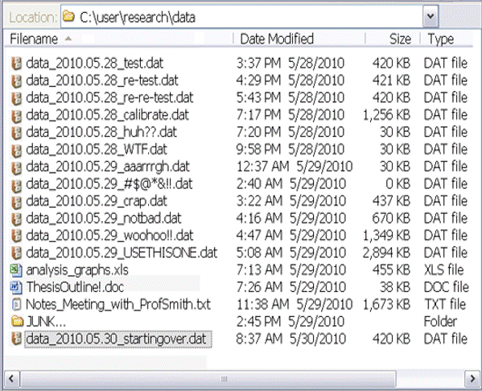
          <br><br>
          <div style="font-size: 50%; margin-left: auto; margin-right: auto; width: 600px;"><a href="http://phdcomics.com/comics.php?f=1531">http://phdcomics.com/comics.php?f=1531</a></div>
        </section>
      
        <section>
          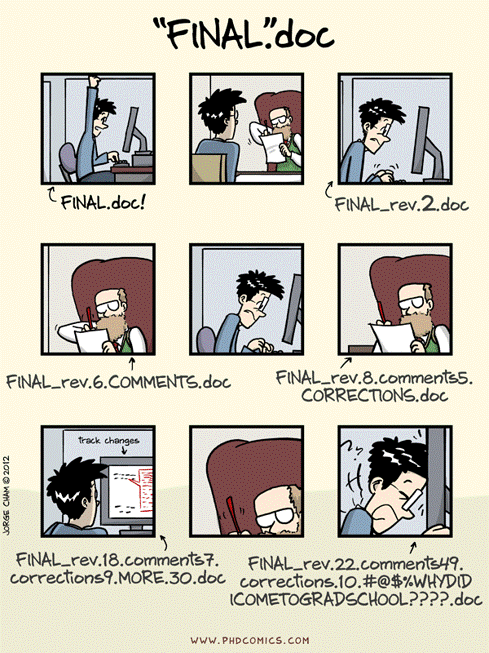
          <div style="font-size: 50%; margin-left: auto; margin-right: auto; width: 600px;"><a href="http://phdcomics.com/comics.php?f=1531">http://phdcomics.com/comics.php?f=1531</a></div>
        </section>        
        
        <section>
          <div style="position: relative; margin-left: auto; margin-right: auto; top: 0px; font-weight: bold; font-size: 110%;">The Bottom Line: File Naming Conventions<br><span style="font-size: 90%">[ best practices ]</span></div>
          <div style="position: relative; margin-left: 20px; margin-right: auto; top: 30px; font-size: 75%; width: 50%; text-align: left;">
            <span class="fragment" style="padding-left: 13px;">DO</span><br>
            <ul style="font-size: 95%;">
              <li class="fragment">useCamelCasing.docx</li>
              <li class="fragment">use_underscores.txt</li>
              <li class="fragment">2015_put_The_Date_First.csv</li>
              <li class="fragment">20150214_useTwoDidgitDateNumbers.xls</li>
              <li class="fragment">startASeriesWithLeadingZeros_001.doc</li>
              <li class="fragment">20150214_UM_date-place.shp</li>
              <li class="fragment">useFileExtensions.jpg</li>
            </ul><br><br><br><br>
          </div>
          <div class="fragment" style="position: absolute; left: 50px; top: 560px; text-align: left; font-size: 45%; width: 300px;">
            Mac: Finder: Finder -> Preferences ... : "Advanced" tab, check box next to "Show all filename extensions"
          </div>
          <div class="fragment" style="position: absolute; left: 1050px; top: 560px; text-align: left; font-size: 45%; width: 300px;">
            Win 8 and above: File Explorer: "view" tab, check the box next to: "File name extensions"
          </div>
          <div style="position: absolute; left: 620px; top: 150px; font-size: 75%; width: 55%; text-align: left;">
            <span class="fragment" style="padding-left: 13px;">DON'T</span><br>
            <ul style="font-size: 95%;">
              <li class="fragment">Leave spaces in the file name.xls</li>
              <li class="fragment">Use the default save name from MS word that is simply the long first sentence in your file.doc</li>
              <li class="fragment">January 5 2015 Samples with the month first.xls</li>
              <li class="fragment">Label as final version.doc</li>
              <li class="fragment">"special characters: & , * % # ; * ( ) ! @$ ^ ~ ' { } [ ] ? < > - + /"</li>
              <li class="fragment">No more than about 25 characters</li>
            </ul><br><br><br><br>
          </div>
          <div style="position: relative; margin-left: auto; margin-right: auto; top: -60px; text-align: center; font-size: 45%; width: 50%;">
            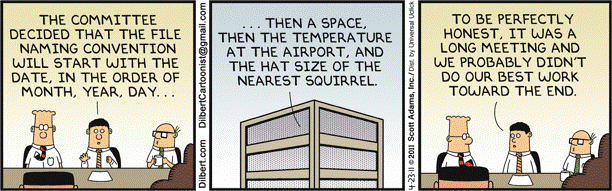<br><a href="http://assets.amuniversal.com/42ec27b03718012ea5cb00163e41dd5b">http://assets.amuniversal.com/42ec27b03718012ea5cb00163e41dd5b</a>
          </div>
        </section>

        <section>
          <div style="position: relative; margin-left: auto; margin-right: auto; top: 0px; font-weight: bold; font-size: 110%;">The Bottom Line: File Naming Conventions<br><span style="font-size: 90%">[ best practices ]</span></div>
          <div style="position: relative; margin-left: 20px; margin-right: auto; top: 30px; font-size: 75%; width: 50%; text-align: left; color: #aaa;">
            <span style="padding-left: 13px;">DO</span><br>
            <ul style="font-size: 95%;">
              <li>useCamelCasing.docx</li>
              <li>use_underscores.txt</li>
              <li>2015_put_The_Date_First.csv</li>
              <li>20150214_useTwoDidgitDateNumbers.xls</li>
              <li>startASeriesWithLeadingZeros_001.doc</li>
              <li>20150214_UM_date-place.shp</li>
              <li>useFileExtensions.jpg</li>
            </ul><br><br><br><br>
          </div>
          <div style="position: absolute; left: 620px; top: 150px; font-size: 75%; width: 55%; text-align: left; color: #aaa;">
            <span style="padding-left: 13px;">DON'T</span><br>
            <ul style="font-size: 95%;">
              <li>Leave spaces in the file name.xls</li>
              <li>Use the default save name from MS word that is simply the long first sentence in your file.doc</li>
              <li>January 5 2015 Samples with the month first.xls</li>
              <li>Label as final version.doc</li>
              <li>special characters: & , * % # ; * ( ) ! @$ ^ ~ ' { } [ ] ? < > - + /</li>
              <li>No more than about 25 characters</li>
            </ul><br><br><br><br>
          </div>
          <div style="position: relative; margin-left: auto; margin-right: auto; top: -60px; text-align: center; font-size: 45%; width: 50%;">
            <br><a href="http://assets.amuniversal.com/42ec27b03718012ea5cb00163e41dd5b">http://assets.amuniversal.com/42ec27b03718012ea5cb00163e41dd5b</a>
          </div>
          <div style="color: #aaa; position: absolute; left: 50px; top: 560px; text-align: left; font-size: 45%; width: 300px;">
            Mac: Finder: Finder -> Preferences ... : "Advanced" tab, check box next to "Show all filename extensions"
          </div>
          <div style="color: #aaa; position: absolute; left: 1050px; top: 560px; text-align: left; font-size: 45%; width: 300px;">
            Win 8 and above: File Explorer: "view" tab, check the box next to: "File name extensions"
          </div>
          <div style="position: absolute; left: 130px; top: 160px; font-size: 200%; width: 1100px; text-align: center; border: 4px red solid; padding-top: 80px; padding-bottom: 80px; background-color: #fff;">Be Consistent</div>
        </section>
        
        <section>
          <div style="font-weight: bold; font-size: 110%;">File Tagging: a *new* approach?</div>
          <div style="position: absolute; left: 0px; top: 90px; width: 40%">
            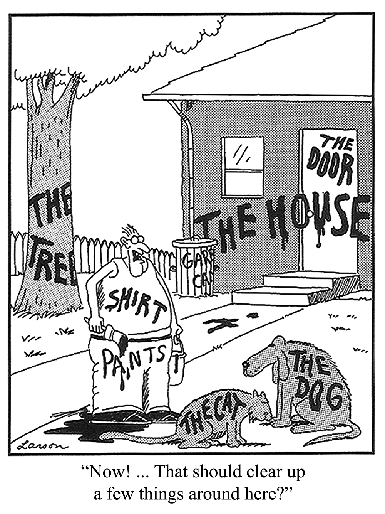
          </div>
          <div style="width: 60%; text-align: left; font-size: 80%; position: absolute; right: -100px; top: 100px;"">
              <span class="fragment">Think about your music library<br>
              Think about article keywords<br>
              Part of the <a href="http://www.w3.org/standards/semanticweb/">semantic web</a> conversation<br><br><br></span>
              <span class="fragment">Mac<br>
              <ul style="font-size: 85%; line-height: 120%; margin-bottom: 23px;">
                <li style="position: relative; left: 23px;">Native on Mac (colors)
                <li style="position: relative; left: 23px;">Not really searchable
              </ul><br></span>
              <span class="fragment">PC<br>
              <ul style="font-size: 85%; line-height: 120%; margin-bottom: 23px;">
                <li style="position: relative; left: 23px;">Native in Office (file->info)
              </ul></span>
          </div>
          <div style="position: absolute; top: 700px; left: 500px; font-size: 40%; text-align: center; line-height: 120%;">
            copyright © Gary Larson - used under "fair use"
          </div>
        </section>
        
        <section>
          <div style="font-weight: bold; font-size: 110%;">Lose a file?<br><span style="font-size: 75%;">Use file tagging systems to better keep track</span></div>
          <div style="width: 65%; margin-left: auto; margin-right: auto; font-size: 75%; text-align: left; top: 130px; line-height: 140%; position: relative; top: 43px;">
            <ul style="font-size: 85%; line-height: 120%; margin-bottom: 23px;">
              <li style="position: relative; left: 23px;">for tagging files as they are created and then the tags are indexed
              <li style="position: relative; left: 23px;">good for not losing things in the first place.
            </ul><br><br></span>
            <span class="fragment">Mac: <br>
            <ul style="font-size: 80%; line-height: 120%; margin-bottom: 23px;">
              <li style="position: relative; left: 23px;">"Yep" (Ironic software) - <a href="http://www.ironicsoftware.com/yep/">http://www.ironicsoftware.com/yep/</a>
            </ul></span><br>
            <span class="fragment">PC: <br>
            <ul style="font-size: 80%; line-height: 120%; margin-bottom: 23px;">
              <li style="position: relative; left: 23px;">Tabbles - <a href="http://tabbles.net/">http://tabbles.net/</a>
              <li style="position: relative; left: 23px;">Omero (microscropy) - <a href="http://www.openmicroscopy.org/site/products/omero">http://www.openmicroscopy.org/site/products/omero</a>
            </ul></span>
          </div><br><br><br>
        </section>
        
        <section>
          <div style="font-weight: bold; font-size: 110%;">File Versioning</div>
          <div style="width: 75%; margin-left: auto; margin-right: auto; font-size: 85%; text-align: left; top: 130px; line-height: 120%; position: relative; top: 43px;">
            <ul style="font-size: 85%; line-height: 120%;">
              <li class="fragment" style="position: relative; left: 23px;">Turn on versioning or tracking in collaborative documents
              <ul class="fragment" style="font-size: 85%;">
                <li style="position: relative; left: 23px;">Word documents, excel, etc
                <li style="position: relative; left: 23px;">Learn by doing!
              </ul>
              <li class="fragment" style="position: relative; left: 23px; margin-top: 50px;">Turn on versioning for storage utilities 
              <ul class="fragment" style="font-size: 85%;">
                <li style="position: relative; left: 23px;">Wikis
                <li style="position: relative; left: 23px;">Google Docs, BOX
              </ul>
              <li class="fragment" style="position: relative; left: 23px; margin-top: 50px;">Consider using version control software 
              <ul class="fragment" style="font-size: 85%;">
                <li style="position: relative; left: 23px;">Subversion (apache foundation), TortoiseSVN (commerical subversion), git (Linus Torvalds), bitbukkit and/or github (both commercial versions of git)
                <li style="position: relative; left: 23px;">Mostly designed for collaborative coding, but . . . 
                <li style="position: relative; left: 23px;">Check with your lab/colleagues as to their preference
              </ul>
            </ul>
          </div><br><br><br>
        </section>
        
        <section>
          <div style="position: relative; margin-left: auto; margin-right: auto; top: 0px; font-weight: bold; font-size: 110%;">Online Versioning and Sharing Services</div>
          <div style="position: relative; margin-left: auto; margin-right: auto; top: 0px; font-size: 90%; width: 85%;">
            <ul>
              <li class="fragment" style="margin-top: 50px;">For programmers only?
              <ul style="font-size: 80%;">
                <li>Github: <a href="http://github.com">http://github.com</a>
                <li>Bitbucket: <a href="http://bitbucket.org">http://bitbucket.org</a>
                <li>Subversion: <a href="https://subversion.apache.org/">https://subversion.apache.org</a>
              </ul>
              <li class="fragment" style="margin-top: 50px;">Project Management (for fee service)
              <ul style="font-size: 80%;">
                <li>Basecamp: <a href="http://basecamp.com">http://basecamp.com</a>
                <li>Teamwork: <a href="http://teamwork.com">http://teamwork.com</a>
              </ul><br><br><br>
            </ul>
          </div>
        </section>
                
        <section>
          <div style="font-weight: bold; font-size: 110%;">Batch Naming</div>
          <div style="width: 35%; margin-left: auto; margin-right: auto; font-size: 85%; text-align: left; margin-top: 90px; position: relative; top: 43px;">
            <ul style="font-size: 85%; line-height: 110%;">
              <li style="position: relative; left: 23px;">Photos
              <li style="position: relative; left: 23px; margin-top: 20px;">Instrument data
              <li style="position: relative; left: 23px; margin-top: 20px;">Moving files across languages 
            </ul>
          </div><br><br><br>
        </section>
        
        <section>
          <div style="font-weight: bold; font-size: 110%;">Tools for File Management: bulk rename</div>
          <div style="width: 75%; margin-left: auto; margin-right: auto; font-size: 85%; text-align: left; top: 130px; line-height: 120%; position: relative; top: 43px;">
            <b>Windows</b><br>
            <ul style="font-size: 85%; line-height: 120%; margin-bottom: 23px;">
              <li style="position: relative; left: 23px;">Ant Renamer (<a href="http://www.antp.be/software/renamer">www.antp.be/software/renamer</a>)
              <li style="position: relative; left: 23px;">RenameIT (<a href="http://sourceforge.net/prpjects/renameit">sourceforge.net/prpjects/renameit</a>)
              <li style="position: relative; left: 23px;">Bulk Rename Utility (<a href="http://www.bulkrenameutility.co.uk/">www.bulkrenameutility.co.uk/</a>)
            </ul><br>
            <b>Mac</b><br>
            <ul style="font-size: 85%; line-height: 120%; margin-bottom: 23px;">
              <li style="position: relative; left: 23px;">Renamer4Mac (<a href="http://renamer4mac.com/">renamer4mac.com/</a>)
              <li style="position: relative; left: 23px;">Name Changer (<a href="http://mrrsoftware.com/namechanger/">mrrsoftware.com/namechanger/</a>)
              <li style="position: relative; left: 23px;">Name Mangler (<a href="http://manytricks.com/namemangler/">manytricks.com/namemangler/</a>)
            </ul><br>
            <b>Linux</b><br>
            <ul style="font-size: 85%; line-height: 120%; margin-bottom: 23px;">
              <li style="position: relative; left: 23px;">GNOME Commander (<a href="http://www.nongnu.org/gcmd/">www.nongnu.org/gcmd/</a>)
              <li style="position: relative; left: 23px;">GPRename (<a href="http://gprename.sourceforge.net/">gprename.sourceforge.net/</a>)
            </ul><br>
            <b>Unix: </b>The use of <b>grep</b> command to search for regular expressions
          </div><br><br><br>
          <div style="position: absolute; left: 400px; top: 680px; font-size: 50%; width: 700px; color: #aaa;"><a href="http://datalib.edina.ac.uk/mantra/organisingdata/">http://datalib.edina.ac.uk/mantra/organisingdata/</a></div>
        </section>
        
        <section>
          <div style="position: relative; margin-left: auto; margin-right: auto; top: 0px; font-weight: bold; font-size: 110%;">Information in the Filename</div>
          <div style="position: relative; margin-left: auto; margin-right: auto; margin-top: 40px; font-size: 75%; width: 65%; text-align: left; line-height: 140%;">
            <ul style="font-size: 95%;">
              <li>Version number</li>
              <li>Date of creation</li>
              <li>Name of creator</li>
              <li>Description of content</li>
              <li>Name of research team/department associated with the data</li>
              <li>Publication date</li>
              <li>Project number</li>
            </ul>
          </div>
          <div style="position: relative; margin-top: 120px; margin-left: auto; margin-right: auto; width: 700px; text-align: left; font-size: 50%"><a href="http://datalib.edina.ac.uk/mantra/organisingdata/">http://datalib.edina.ac.uk/mantra/organisingdata/</a></div>
          <div class="fragment" style="position: absolute; top: 120px; left: 800px; width: 300px; text-align: left; font-size: 90%"><b>metadata</b></div>
        </section>
        
        <section>
          <div style="position: relative; margin-left: auto; margin-right: auto; top: 0px; font-weight: bold; font-size: 110%;">Retraction Watch</div>
          <div style="position: relative; margin-left: auto; margin-right: auto; margin-top: 40px; font-size: 75%; width: 85%; text-align: left;">
            “A problem with a malfunctioning computer and image storage and <span style="color: #f00">mislabeling</span> led to the assembling by one of the co-authors of images that were previously published by our research group. I didn’t detect the problem when the manuscript was sent for publication. Although the conclusions were not compromised in any of the two papers, we retract the papers precisely because some images were wrongly used.”
            <br><br>
            Principal investigator Jorge Leitão
          </div>
          <div style="position: relative; margin-top: 120px; margin-left: auto; margin-right: auto; width: 1100px; text-align: left; font-size: 45%"><a href="http://retractionwatch.com/2014/10/17/this-situation-left-me-ashamed-and-infuriated-with-myself-scientist-retracts-two-papers/">http://retractionwatch.com/2014/10/17/this-situation-left-me-ashamed-and-infuriated-with-myself-scientist-retracts-two-papers/</a></div>
        </section>
        
        <section>
          <div style="position: relative; margin-left: auto; margin-right: auto; top: 0px; font-weight: bold; font-size: 110%;">Retraction Watch</div>
          <div style="position: relative; margin-left: auto; margin-right: auto; margin-top: 40px; font-size: 75%; width: 85%; text-align: left;">
            “In the 2011 paper (<a href="http://jb.asm.org/content/196/22/3980">http://jb.asm.org/content/196/22/3980</a>), it was first submitted to other 2 journal (JBC and RNA Biology), whom requested a lot of modifications, and therefore, <span style="color: #f00;">we accumulated a lot of processed data files</span>. In between the process, the hard-drive of the computer that was used to store the data files (which is <span style="color: #f00;">shared by 5 research groups</span>) stopped working due <span style="color: #f00;">data overloading</span>. Nonetheless, we were able to retrieve the original data, or so we thought. At the time, I was responsible for composing the final figures of each paper that we produced, and asked the team members to give me the files. In Figure 8 of this paper, it seemed that there has been a <span style="color: #f00;">labeling error</span> in the source files, and I did not realize that some images where duplicated in the experiment that was being represented, neither that parts of the image had already been published. I should stress that that the images were produced in our lab and represent our data.”
            <br><br>
            First author <a href="http://groups.ist.utl.pt/bsrg/Team/cramos.html">Christian Ramos</a>
          </div>
          <div style="position: relative; margin-top: 20px; margin-left: auto; margin-right: auto; width: 1100px; text-align: left; font-size: 45%"><a href="http://retractionwatch.com/2014/10/17/this-situation-left-me-ashamed-and-infuriated-with-myself-scientist-retracts-two-papers/">http://retractionwatch.com/2014/10/17/this-situation-left-me-ashamed-and-infuriated-with-myself-scientist-retracts-two-papers/</a></div>
        </section>
        
        <section>
          <div style="position: relative; margin-left: auto; margin-right: auto; top: 0px; font-weight: bold; font-size: 110%;">Quick Review</div>
          <div style="position: relative; margin-left: auto; margin-right: auto; margin-top: 40px; font-size: 75%; width: 25%; text-align: left; line-height: 140%;">
            <ul style="position: relative; left: 43px;">
              <li>Organization</li>
              <li>Context</li>
              <li>Consistency</li>
            </ul>
            <div style="font-size: 70%; text-align: middle; margin-top: 50px;">YYYYMMDD_projectID_place_001.ext</div>
          </div>
        </section>
          
        <section>
            <div>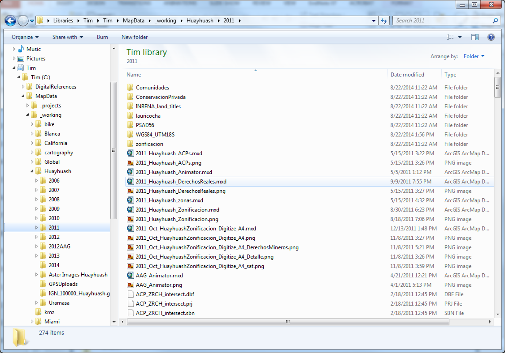</div>
        </section>  
          
        <section>
          <div style="position: relative; margin-left: auto; margin-right: auto; top: 0px; font-weight: bold; font-size: 110%;">The benefits of consistent data file labeling are:</div>
          <div style="position: relative; margin-left: auto; margin-right: auto; margin-top: 40px; font-size: 75%; width: 85%; text-align: left;">
            <ul style="font-size: 95%;">
              <li>Data files are distinguishable from each other within their containing folders</li>
              <li>Data file naming prevents confusion when multiple people are working on shared files</li>
              <li>Data files are easier to locate and browse</li>
              <li>Data files can be retrieved not only by the creator but by other users</li>
              <li>Data files can be sorted in logical sequence</li>
              <li>Data files are not accidentally overwritten or deleted</li>
              <li>Different versions of data files can be identified</li>
              <li>If data files are moved to other storage platform their names will retain useful context </li>
            </ul>
          </div>
          <div style="position: relative; margin-top: 120px; margin-left: auto; margin-right: auto; width: 700px; text-align: left; font-size: 50%"><a href="http://datalib.edina.ac.uk/mantra/organisingdata/">http://datalib.edina.ac.uk/mantra/organisingdata/</a></div>
        </section>
          
      </section>
      
      <!-- ***
            * Security and Privacy
            * -->
            
      <section>

        <section>
          <div style="position: relative; margin-left: auto; margin-right: auto; top: 0px; font-weight: bold; font-size: 110%;">Security and Privacy</div>
          <div style="position: relative; margin-left: auto; margin-right: auto; top: 40px; font-size: 70%; width: 80%; text-align: left;">
            <div class="fragment"><u>University of Miami Human Subjects Research Office</u><br>
            <a style="font-size: 75%;" href="http://uresearch.miami.edu/regulatory-compliance-services/hsro">http://uresearch.miami.edu/regulatory-compliance-services/hsro</a><br><br></div>
            <div class="fragment"><u>Data derived from human subjects research</u>
            <ul style="font-size: 95%;">
              <li>Must meet federal compliance requirements for security and privacy</li> 
              <li>As examples: HIPAA, FERPA, FISMA</li> 
            </ul><br><br></div>
            <div class="fragment"><u>Personally Identifiable Information (PII)</u><br>
            <ul style="font-size: 95%;">
              <li style="position: relative; left: 23px; ">Name, SSN, Date of Birth, Drivers License, Address, IP Address, Phone Number, anything that can uniquely  identify a person</li>
              <li style="position: relative; left: 23px; ">NIH Guide for Identifying Sensitive Information<br></li> 
              <a style="font-size: 75%;" href="https://oma.od.nih.gov/DMS/Documents/Privacy/Guide%20for%20Handling%20Sensitive%20Information%20at%20NIH.pdf">https://oma.od.nih.gov/DMS/Documents/Privacy/Guide%20for%20Handling%20Sensitive%20Information%20at%20NIH.pdf</a>    
            </ul><br><br></div>
          </div>
        </section>
        
        <section>
          <div style="position: relative; margin-left: auto; margin-right: auto; top: 0px; font-weight: bold; font-size: 110%;">UM Secure Storage Options</div>
          <div style="position: relative; margin-left: auto; margin-right: auto; top: 40px; font-size: 75%; width: 65%; text-align: left; line-height: 180%">
            <b>BOX</b> is HIPAA compliant (but is being decommissioned at UM)<br>
            <b>OneDrive Enterprise</b> is HIPAA compliant (likely your first choice)<br>
            <b>CCS</b> storage services are HIPAA compliant<br>
            <b>Qualitrics</b> survey tool to build and manage secure online surveys<br>
            <a style="font-size: 75%; top: -23px;" href="http://it.miami.edu/a-z-listing/survey-tools/index.html">http://it.miami.edu/a-z-listing/survey-tools/index.html</a>
          </div><br><br><br><br>
          <div style="position: absolute; left: 500px; top: 500px; font-size: 50%; width: 700px; color: #aaa;"><a href="https://www.hhs.gov/hipaa/for-professionals/security/laws-regulations/">Health Insurance Portability and Accountability Act of 1996 (HIPAA)</a></div>
        </section>  

        <section>
          <div style="position: relative; margin-left: auto; margin-right: auto; top: 0px; font-weight: bold; font-size: 110%;">UM Office of Research</div>
          <div style="position: relative; margin-left: auto; margin-right: auto; top: 40px; font-size: 75%; width: 65%; text-align: left;">
            <b>Velos:</b> <a href="http://uresearch.miami.edu/research-resources/velos">http://uresearch.miami.edu/research-resources/velos</a><br>
            <div style="font-size: 80%; position: relative; left: 23px; width: 85%;">Velos eResearch Clinical Trials Management Software is a tool for managing clinical trials data.</div><br><br>
            <b>REDcap:</b> <a href="http://uresearch.miami.edu/research-resources/redcap">http://uresearch.miami.edu/research-resources/redcap</a><br>
            <div style="font-size: 80%; position: relative; left: 23px; width: 85%;">Research Electronic Data Capture is an application that allows users to build and manage online surveys and databases quickly and securely.</div>
          </div><br><br><br><br>
        </section>  
        
        <section>
          <div style="position: relative; margin-left: auto; margin-right: auto; top: 0px; font-weight: bold; font-size: 110%;">Not all data has security and privacy "needs", BUT ...</div>
          <div style="position: relative; margin-left: auto; margin-right: auto; top: 40px; font-size: 75%; width: 70%; text-align: left;">
            <ul style="font-size: 95%;">
              <li><b>Use automatic updates (mostly for virus issues)</b></li>
              <li><b>Use anti-virus software (also anti-intrusion)</b></li>
              <li><b>Use a firewall (also password protect file-sharing)</b></li>
              <li>Never connect to untrusted wireless connections</li>
              <li>Computer disposal?</li>
              <li>Know HTTPS, SSH/SCP, sFTP</li>
              <li>Understand certificate errors</li>
              <li>Do not send confidential email </li>
              <li>Public computers</li>
              <ul style="font-size: 90%;">
                <li>Always log out</li>
                <li>Never leave data/files</li>
              </ul>
            </ul><br><br>
          </div>
          <div style="position: absolute; left: 700px; top: 300px; font-size: 35%; width: 700px; color: #aaa;">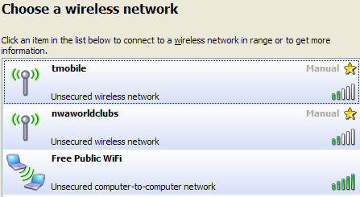<br><a href="http://www.cnet.com/news/a-word-of-warning-about-free-public-wi-fi/">http://www.cnet.com/news/a-word-of-warning-about-free-public-wi-fi/</a></div>
        </section>    

        <section>
          <div style="position: relative; margin-left: auto; margin-right: auto; top: 0px; font-weight: bold; font-size: 110%;">Common sense (?)</div>
          <div style="position: relative; margin-left: auto; margin-right: auto; top: 40px; font-size: 75%; width: 70%; text-align: left;">
            Password lock all devices (in case of theft or loss)
            <ul style="font-size: 95%; margin-bottom: 23px; margin-left: 50px;">
              <li>Set screen to lock </li>
              <li>This is not foolproof, any hacker knows how to get past a password. See: <a href="http://pogostick.net/~pnh/ntpasswd/">http://pogostick.net/~pnh/ntpasswd/</a> for example.</li>
            </ul><br>
            Encryption<br>
            <ul style="font-size: 95%; margin-bottom: 23px; margin-left: 50px;">
              <li><a href="UM Policy: http://www.miami.edu/it/index.php/policies/">UM Policy: http://www.miami.edu/it/index.php/policies/</a></li>
              <li>Mac: System Preferences: Security and Privacy: FileVault</li>
              <li>PC: Control Panel: BitLocker Drive Encryption</li>
            </ul><br>
            Empty trash securely<br>
            <ul style="font-size: 95%; margin-bottom: 23px; margin-left: 50px;">
              <li>Mac: Finder->Preferences: Advanced Tab, “Empty Trash Securely”</li>
              <li>PC: Eraser (open source GPL): http://eraser.heidi.ie/</li>
            </ul><br><br>
          </div>
        </section>  

        <section>
          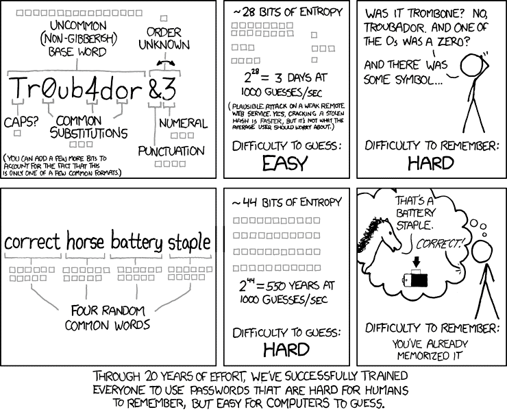
          <div style="position: relative; margin-left: auto; margin-right: auto; top: -10px; font-size: 40%; width: 600px; color: #aaa; text-align: center;"><a href="http://www.explainxkcd.com/wiki/index.php/936:_Password_Strength">http://www.explainxkcd.com/wiki/index.php/936:_Password_Strength</a></div>
        </section>
        
        <section>
          
          <div style="position: relative; margin-left: auto; margin-right: auto; top: -10px; font-size: 40%; width: 600px; color: #aaa; text-align: center;"><a href="http://www.explainxkcd.com/wiki/index.php/936:_Password_Strength">http://www.explainxkcd.com/wiki/index.php/936:_Password_Strength</a></div>
          <div style="position: absolute; left: 130px; top: 160px; font-size: 200%; width: 1100px; text-align: center; border: 4px red solid; padding-top: 80px; padding-bottom: 80px; background-color: #fff;">Passwords should be long</div>
        </section>
        
        <section>
          <div style="position: relative; margin-left: auto; margin-right: auto; top: 0px; font-weight: bold; font-size: 110%;">Password Management</div>
          <div style="position: relative; margin-left: auto; margin-right: auto; top: 40px; font-size: 75%; width: 85%; text-align: left;">
            <b>Mistakes leading to weak passwords</b> <span style="font-size: 80%">(Do not make these mistakes when choosing a password):</span>
            <ul style="font-size: 95%;">
              <li>your username as a password (even backwards or mixed up).</li>
              <li>using any name, or any word in any language.</li>
              <li>obvious personal information (your year of birth, phone number, national insurance number, address, etc.).</li>
              <li>all digits, or just one letter.</li>
              <li>real words with only one or two obvious digit substitutions, like 'p4ssword' or '5ecret'.</li>
              <li>fewer than eight characters ("brute force" attack cracks 7 letters in a few minutes).</li>
              <li>characters from books, films, etc. (Gandalf, Sherlock), band names, song titles etc. (no matter how obscure).</li>
              <li>passwords that are too easy or too difficult to type</li>
            </ul><br><br><br>
          </div>
        </section>          

        <section>
          <div style="position: relative; margin-left: 200px; margin-right: auto; top: 0px; font-weight: bold; font-size: 110%; width: 30%;">Encryption</div>
          <div style="position: relative; margin-left: 10px; margin-right: auto; top: 40px; font-size: 90%; width: 55%; text-align: left;">
            <pre><code>
  $ openssl

  $ openssl des3 -in test.txt -out encrypted.txt

  $ openssl des3 -d -in encrypted.txt -out testout.txt
            </code></pre>          
            <br><br>
          </div>
          <div style="position: absolute; left: 700px; top: 0px; width: 600px;"></div>
          <div style="position: absolute; left: 200px; top: 400px; font-size: 40%; width: 600px; color: #aaa; text-align: left;">Singh, S. 1999. The Code Book: the science of secrecy from ancient Egypt to quantum cryptography. Fourth Estate, London.</div>
          <div style="position: absolute; left: 100px; top: 500px; font-size: 75%; width: 600px;">NOTE: encryption mistakes are irreversible</div>
        </section>          

      </section>
            
      <!-- ***
            * Storage and Backup
            * -->

      <section>

        <section>
          <div style="font-weight: bold; font-size: 110%;">How important is your data?</div><br>
          <div style="width: 30%; margin-left: auto; margin-right: auto; font-size: 85%; text-align: center; top: 130px; line-height: 200%; position: relative; top: 23px;">
            take a moment of<br><b>silence</b> to <b>imagine</b><br>what would happen<br>if your <b>computer<br>failed today</b>
          </div>
          <br><br><br>
        </section>
        
        <section>
          <div style="position: absolute; left: 200px; top: -10px; font-weight: bold; font-size: 110%;">The World of Data Around Us: Data Loss<br><br></div>
          <div style="position: absolute; right: 60px; top: 120px; font-size: 60%; width: 600px;">
            <ul>
              <li>Natural disaster </li>
              <li>Facilities infrastructure failure </li>
              <li>Storage failure </li>
              <li>Server hardware/software failure</li>
              <li>Application software failure</li>
              <li>External dependencies (e.g. PKI failure)</li>
              <li>Format obsolescence</li>
              <li>Legal encumbrance </li>
              <li>Human error</li>
              <li>Malicious attack by human or automated agents</li>
              <li>Loss of staffing competencies</li>
              <li>Loss of institutional commitment </li>
              <li>Loss of financial stability </li>
              <li>Changes in user expectations and requirements</li>
              <li>Upset boyfriend or girlfriend</li>
            </ul>
          </div>
          <div style="position: absolute; left: 100px; top: 60px; font-size: 60%; width: 600px;">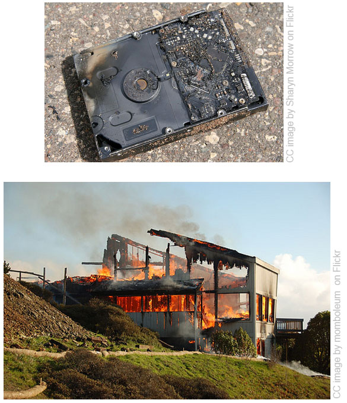</div>
          <div style="font-size: 40%; color: #555; position: absolute; left: 900px; top: 610px; text-align: left;">slide from<br><a href="https://www.dataone.org/education-modules" border="0"></a></div>
            <aside class="notes">From <a href="https://www.dataone.org/education-modules">https://www.dataone.org/education-modules</a> (see lesson 1)</aside>
        </section>

        <section>
          <div style="font-weight: bold; font-size: 110%;">common data loss scenarios</div>
          <div style="width: 70%; margin-left: auto; margin-right: auto; font-size: 85%; text-align: center; top: 100px; line-height: 140%; position: relative;">
            "Researchers don't delete data, they lose it"<br>
            <span style="font-size: 80%">John Bixby - Vice Provost for Research at University of Miami</span>
          </div>
          <br><br><br><br><br>
        </section>

        <section>
          <div style="position: absolute; left: 10px; top: 40px; font-weight: bold; font-size: 110%; text-align: left; width: 250px;">Backup and Storage<br><br>Major Considerations</div>
          <div style="position: absolute; left: 300px; top; 0px; margin-right: auto; top: 0px; font-size: 90%; width: 75%; line-height: 130%;">
            <ul style="font-size: 85%;">
              <li><b>Who</b> is <b>responsible</b> for backup ?</li>
              <li>How <b>often</b> do you backup ?</li>
              <li><b>Partial</b> vs. <b>full</b> backups ?</li>
              <li><b>Non-digital</b> backups ?</li>
              <li><b>Where</b> (literally) will the backups be located ?</li>
              <li>Do the backups need a description (<b>metadata</b>) ?</li>
              <li><b>Manual vs automatic</b> ?</li>
              <li><b>Recovery</b> procedures ?</li>
              <li><b>Verification</b> – how do you know the backup was successful ?</li>
              <li><b>How long</b> do you keep your backups ?</li>
              <li>What happens when the <b>project ends</b> ?</li>
            </ul><br><br><br>
          </div>
        </section>

        <section>
          <div style="position: relative; margin-left: auto; margin-right: auto; top: 0px; font-weight: bold; font-size: 110%;">The Bottom Line: Storage and Backup<br><span style="font-size: 90%">[ best practices ]</span></div>
          <div class="fragment" style="position: relative; margin-left: 60px; margin-right: auto; top: 30px; font-size: 82%; width: 50%; text-align: left;">
            <span style="padding-left: 13px;">DO</span>
            <ul style="font-size: 95%; line-height: 130%">
              <li>RAID storage</li>
              <li>External hard drives (XFAT)</li>
              <li>Cloud storage and file-syncing</li>
              <li>Duplicate computers or hard drives</li>
              <li>Write down roles and responsibilities</li>
              <li>Organize, file naming conventions, versioning</li>
              <li>Have automatic backups</li>
              <li>Verify backups</li>
              <li>Open formats</li>
            </ul><br><br><br><br>
          </div>
          <div class="fragment" style="position: absolute; left: 500px; top: 550px; text-align: left; font-size: 55%; width: 750px;">
            The XFAT format is essential if you ever want to share between a mac and a pc
            <br>Mac: Applications:Utilities:Disk Utility 
            <br>PC: right click in explorer -> Format
          </div>
          <div class="fragment" style="position: absolute; left: 750px; top: 150px; font-size: 82%; width: 43%; text-align: left;">
            <span style="padding-left: 13px;">DON'T</span>
            <ul style="font-size: 95%;">
              <li>USB thumb drives</li>
              <li>Email files to yourself</li>
              <li>Save files without knowing their location in the computer’s file structure</li>
              <li>Backup when you remember</li>
            </ul><br><br><br><br>
          </div>
        </section>

        <section>
          <div style="position: relative; margin-left: auto; margin-right: auto; top: 0px; font-weight: bold; font-size: 110%;">The Bottom Line: Storage and Backup<br><span style="font-size: 90%">[ best practices ]</span></div>
                    <div style="border: 4px solid red; position: relative; margin-left: auto; margin-right: auto; top: 50px; width: 100%; text-align: left; font-size: 85%; width: 750px;  padding: 40px; padding-left: 60px; padding-right: 60px;">
            Have all your work in at least <b>three</b> places at all times: working version + two backups<br><br>
            <span style="font-size: 70%; line-height: 110%;">Drives fail, computers break, viruses happen, computers get stolen, usb thumb drives ALWAYS fail, you will make a mistake and delete your work on accident, ex-partners seek revenge, and the list goes on . . . </span>
          </div><br><br><br><br>
        </section>

        <section>
          <div style="position: relative; margin-left: auto; margin-right: auto; top: -13px; font-weight: bold; font-size: 110%;">Short-term solutions at UM<a href="#supa" title="None of these options are for long-term storage, please see our institutional repository or identify another disciplinary repository to meet this need."><sup>a</sup></a></div>
          <div style="position: relative; margin-left: auto; margin-right: auto; top: 20px; font-size: 90%; width: 85%;">      
            <table style="border: none !important; font-size: 60%">
              <tbody>
                <tr style="border-bottom: solid 2px black">
                <td style="text-align: center;width: 130px;vertical-align: bottom"></td>
                <td style="text-align: center;width: 130px;vertical-align: bottom;font-weight: bold">Size Limits</td>
                <td style="text-align: center;width: 130px;vertical-align: bottom;font-weight: bold">HIPPA Compliant</td>
                <td style="text-align: center;width: 130px;vertical-align: bottom;font-weight: bold">Collaboration and Sharing</td>
                <td style="text-align: center;width: 130px;vertical-align: bottom;font-weight: bold">Relational Databases</td>
                <td style="text-align: center;width: 130px;vertical-align: bottom;font-weight: bold">Self Guided</td>
                <td style="text-align: center;width: 130px;vertical-align: bottom;font-weight: bold">No Costs</td>
                </tr>
                <!-- <tr>
                <td style="text-align: center;vertical-align: middle;font-weight: bold"><a href="http://it.miami.edu/a-z-listing/box/index.html" target="_blank">Box Cloud-Based Storage</a></td>
                <td style="text-align: center;vertical-align: middle"><span title="Single file upload limit 15GB. Also note that network speed and congestion affects performance.">unlimited <sup style="font-size: 90%"><a href="#supb">b</a></sup></span></td>
                <td style="text-align: center;vertical-align: middle"></td>
                <td style="text-align: center;vertical-align: middle"></td>
                <td style="text-align: center;vertical-align: middle"></td>
                <td style="text-align: center;vertical-align: middle"></td>
                <td style="text-align: center;vertical-align: middle"></td>
                </tr> -->
                <tr>
                <td style="text-align: center;vertical-align: middle;font-weight: bold"><a href="https://www.it.miami.edu/a-z-listing/office-365-onedrive-for-business/index.html" target="_blank">OneDrive Cloud-Based Storage</a></td>
                <td style="text-align: center;vertical-align: middle"><span title="Single file upload limit 15GB. Also note that network speed and congestion affects performance.">5TB <sup style="font-size: 90%"><a href="#supb">b</a></sup></span></td>
                <td style="text-align: center;vertical-align: middle"></td>
                <td style="text-align: center;vertical-align: middle"></td>
                <td style="text-align: center;vertical-align: middle"></td>
                <td style="text-align: center;vertical-align: middle"></td>
                <td style="text-align: center;vertical-align: middle"></td>
                </tr>
                <tr>
                <td style="text-align: center;vertical-align: middle;font-weight: bold"><a href="http://ccs.miami.edu/resources/compute-systems" target="_blank">Cloud Storage (CCS)</a></td>
                <td style="text-align: center;vertical-align: middle">&gt; 10 TB</td>
                <td style="text-align: center;vertical-align: middle"></td>
                <td style="text-align: center;vertical-align: middle"></td>
                <td style="text-align: center;vertical-align: middle"></td>
                <td style="text-align: center;vertical-align: middle"><span title="Please see the advanced computing services at CCS or contact the High Performance Computing group directly for more information."><a href="#supc">c</a></span></td>
                <td style="text-align: center;vertical-align: middle"></td>
                </tr>
                <tr style="border-bottom: solid 2px black">
                <td style="text-align: center;vertical-align: middle;font-weight: bold"><a href="mailto:itsupportcenter@miami.edu" target="_blank">File Server (UMIT)</a></td>
                <td style="text-align: center;vertical-align: middle"><span title="To begin the request process send an email to itsupportcenter@miami.edu or call the UM Information Technology help desk at (305) 284-6565.">&gt; 1 TB <sup style="font-size: 90%"><a href="#supd">d</a></sup></span></td>
                <td style="text-align: center;vertical-align: middle"></td>
                <td style="text-align: center;vertical-align: middle"></td>
                <td style="text-align: center;vertical-align: middle"></td>
                <td style="text-align: center;vertical-align: middle"><span title="To begin the request process send an email to itsupportcenter@miami.edu or call the UM Information Technology help desk at (305) 284-6565."><a href="#supd">d</a></span></td>
                <td style="text-align: center; vertical-align: middle"><span title="Every request is evaluated on a case-by-case basis. Evaluations are based on the requested resource needs and the current resource allocations across campus. If the request is exceptionally large there may be cost sharing requirements."><a href="#supe" title="Every request is evaluated on a case-by-case basis. Evaluations are based on the requested resource needs and the current resource allocations across campus. If the request is exceptionally large there may be cost sharing requirements.">e</a></span></td>
                </tr>
              </tbody>
            </table>
            <div style="font-size: 35%;">
            <p style="text-align: left; font-size: 110%;">If one of these solutions does not meet your needs, you can consider self-managed solutions or please feel free to contact the <a href="http://it.miami.edu/help-and-support/index.html">UM Information Technology (UMIT) Service Desk</a>, <a href="mailto:researchdata@miami.edu">research data services</a> at the Libraries, or the <a href="mailto:hpc@ccs.miami.edu">advanced computing services</a> at CCS for further assistance.</p>
            <hr style="border: 1px solid #e0e0e0" />
            <ol style="list-style-type: lower-alpha;">
              <li><a name="supa"></a>None of these options are for long-term storage, please see our <a href="http://library.miami.edu/datacuration/um-scholarly-repository/">institutional repository</a> or identify another <a href="http://library.miami.edu/datacuration/data-repositories/">disciplinary repository</a> to meet this need.</li>
              <li><a name="supb"></a><a href="http://box.miami.edu/">OneDrive</a> single file upload limit 15GB. Also note that network speed and congestion affects performance.</li>
              <li><a name="supc"></a>Please see the <a href="http://ccs.miami.edu/resources/compute-systems/">advanced computing resources</a> at CCS or contact the <a href="mailto:hpc@ccs.miami.edu&amp;subject=Service%20Request-storage%20implementation">Advanced Computing</a> group directly for more information.</li>
              <li><a name="supd"></a>To begin the request process, please contact the <a href="http://it.miami.edu/help-and-support/index.html">UMIT Service Desk</a>: email <a href="mailto:itsupportcenter@miami.edu">itsupportcenter@miami.edu</a> or call (305) 284-6565.</li>
              <li><a name="supe"></a>Every request is evaluated on a case-by-case basis. Evaluations are based on the requested resource needs and the current resource allocations across campus. If the request is exceptionally large there may be cost sharing requirements.</li>
            </ol>
            </div>
          </div>
        </section>

        <section>
          <div style="position: relative; margin-left: auto; margin-right: auto; top: 0px; font-weight: bold; font-size: 110%;">Short-term solutions at UM</div>
          <div style="position: relative; margin-left: auto; margin-right: auto; top: 30px; font-size: 80%; width: 80%;">    
            For general sharing and collaboration needs please see the cloud storage solutions that <a href="http://it.miami.edu/" target="_blank">Information Technology</a> provides for students, staff and faculty:<br><br>
            <table style="border: none">
              <tbody style="border: nne">
                <tr style="border: none">
                <td style="text-align: center;border: none"><a href="http://it.miami.edu/a-z-listing/box/index.html" target="_blank"></a><br />
                <a href="http://it.miami.edu/a-z-listing/box/index.html" target="_blank">Box</a></td>
                <td style="text-align: center;border: none"><a href="http://it.miami.edu/a-z-listing/google-drive/index.html" target="_blank"></a><br />
                <a href="http://it.miami.edu/a-z-listing/google-drive/index.html" target="_blank">Google Drive</a></td>
                <td style="text-align: center;border: none"><a href="http://it.miami.edu/a-z-listing/office-365-onedrive-for-business/index.html" target="_blank"></a><br />
                <a href="http://it.miami.edu/a-z-listing/office-365-onedrive-for-business/index.html" target="_blank">OneDrive</a></td>
                </tr>
              </tbody>
            </table><br><br><br><br><br>
          </div>
        </section>

        <section>
          <div style="position: relative; margin-left: auto; margin-right: auto; top: 0px; font-weight: bold; font-size: 110%;">Short-term solutions at UM</div>
          <div style="position: relative; margin-left: auto; margin-right: auto; top: 30px; font-size: 80%; width: 80%;">    
            <ul>If you need more space at the University of Miami go to the Center for Computational Science (CCS)<br><br>
            <ul style="font-size: 85%; position: relative; top: -40px;">
              <li>They sell space using the condo model</li>
              <li>~28 TB for $7,000 (2015) – in perpetuity</li>
              <li>Not necessarily backed up (but it is raided)</li>
              <li>Talk to <a href="mailto:jzysman@miami.edu">Joel Zysman</a> at <a href="http://ccs.miami.edu/resources/compute-systems/">advanced computing resources</a></li>
            </ul></ul><br><br><br><br><br>
          </div>
        </section>
        
        <section>
          <div style="font-weight: bold; font-size: 110%;">The Cloud</div>
          <div style="width: 90%; margin-left: auto; margin-right: auto; font-size: 70%; text-align: left; top: 20px; line-height: 110%; position: relative;">
            The term “cloud computing” (or just “cloud”, in the context of computing) is a marketing buzzword with no coherent meaning. It is used for a range of different activities whose only common characteristic is that they use the Internet for something beyond transmitting files. Thus, the term spreads confusion. If you base your thinking on it, your thinking will be confused.<br><br>
            <span style="font-size: 60%; float: right; margin-right: 50px;">Richard Stallman - <a href="https://www.gnu.org/philosophy/words-to-avoid.html">https://www.gnu.org/philosophy/words-to-avoid.html</a></span><br>
            <div style="text-align: center; width: 100%; position: relative; top: 13px;">
               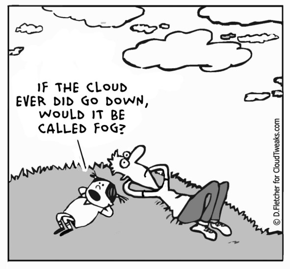<br>
              <span style="font-size: 60%; color: #999;"><a  style="padding-right: 1em;" href="http://cloudtweaks.com/2012/02/the-lighter-side-of-the-cloud-future-cloud/">http://cloudtweaks.com/2012/02/the-lighter-side-of-the-cloud-future-cloud/</a><a style="padding-left: 1em; padding-right: 3em;" href="http://cloudtweaks.com/2012/04/the-lighter-side-of-the-cloud-the-fog/">http://cloudtweaks.com/2012/04/the-lighter-side-of-the-cloud-the-fog/</a></span>
            </div>
          </div>
          <br><br><br><br><br>
        </section>

        <section>
          <div style="position: relative; margin-left: auto; margin-right: auto; top: 0px; font-weight: bold; font-size: 110%;">7 common cloud missteps</div>
          <div style="position: relative; margin-left: auto; margin-right: auto; top: 40px; font-size: 75%; width: 85%; text-align: left;">
            <ol style="font-size: 95%;">
              <li style="margin-top: 10px;">You lost control of your data because of the fine print in a user agreement.</li>
              <div style="color: #999; font-size: 80%; margin-left: 23px; margin-bottom: 9px;">Do a google search “*theNewCloudService* shady user agreement”</div>
              <li>You sent out a public link to a Google Doc so others could view and edit.</li>
              <div style="color: #999; font-size: 80%; margin-left: 23px; margin-bottom: 9px;">Invite people through emails</div>
              <li>Your cloud account gets hacked (bad password).</li>
              <div style="color: #999; font-size: 80%; margin-left: 23px; margin-bottom: 9px;">Better password management</div>
              <li>You use the same password for every app on your phone.</li>
              <div style="color: #999; font-size: 80%; margin-left: 23px; margin-bottom: 9px;">See above</div>
              <li>Web trackers are storing information on the sites you visit online.</li>
              <div style="color: #999; font-size: 80%; margin-left: 23px; margin-bottom: 9px;">Private browsing? Don’t stay logged in to google all the time?</div>
              <li>You granted an application (smartphone) every permission under the sun.</li>
              <div style="color: #999; font-size: 80%; margin-left: 23px; margin-bottom: 9px;">Be thoughtful when you install and run new apps</div>
              <li>A small mobile app startup you know nothing about has access to your banking data.</li>
              <div style="color: #999; font-size: 80%; margin-left: 23px; margin-bottom: 9px;">Let you bank manage your banking data</div>
            </ol><br><br>
          </div>
          <div style="position: absolute; left: 700px; top: 700px; font-size: 40%; width: 500px; color: #aaa; text-align: center;">
            <a href="http://cloudtweaks.com/2015/11/7-common-cloud-security-missteps/">http://cloudtweaks.com/2015/11/7-common-cloud-security-missteps/</a>
          </div>
        </section>

        <section>
          <div style="position: relative; margin-left: auto; margin-right: auto; top: 0px; font-weight: bold; font-size: 110%;">Spinning (metal) disk: Laptop or Desktop</div>
          <div style="position: relative; margin-left: 10%; margin-right: auto; top: 40px; font-size: 90%; width: 40%;">
            <ul style="font-size: 95%;">
              <li  style="color: #aaa;">Pros</li>
              <ul style="font-size: 80%;color: #aaa;">
                <li>High level of control over file system, naming, and physical location of disk</li>
                <li>Easy to backup</li>
                <li>Convenient</li>
              </ul>
              <li  style="color: #aaa;">Cons</li>
              <ul style="font-size: 80%;color: #aaa;">
                <li>Risk of malware (virus)</li>
                <li>Risk of theft, damage, loss, etc</li>
                <li>System can eventually corrupt the disk (especially pcs)</li>
                <li>Finite lifespan</li>
              </ul>
            </ul><br><br><br>
          </div>
          <div class="fragment" style="position: absolute; left: 750px; top: 275px; border: 2px blue solid; width: 420px; background-color: #bbe; text-align: left; font-size: 70%; padding: 5px; padding-left: 10px;">
            SECURITY CONSIDERATIONS:<br>
            <ul style="font-size: 90%;">
              <li>Virus Control</li>
              <li>Theft or damage</li>
              <li>Disk failure</li>
            </ul>
          </div>
        </section>          

        <section>
          <div style="position: relative; margin-left: auto; margin-right: auto; top: 0px; font-weight: bold; font-size: 110%;">Spinning (metal) disk: (Network) Server</div>
          <div style="position: relative; margin-left: 5%; margin-right: auto; top: 40px; font-size: 90%; width: 75%;">
            <ul style="font-size: 95%;">
              <li style="color: #aaa;">Pros</li>
              <ul style="font-size: 80%;color: #aaa;">
                <li>High level of control over file system, naming, and physical location of disk</li>
                <li>Likely has backup and maintenance schedule</li>
                <li>Possible duplicate (mirror) images – RAID systems</li>
                <li>Safe physical location</li>
              </ul>
              <div style="position: absolute; left: 600px; top: 200px; font-size: 60%; width: 550px;color: #aaa;"><b>R</b>edundant <b>A</b>rray of <b>I</b>ndependent <b>D</b>isks</div>
              <li style="color: #aaa;">Cons</li>
              <ul style="font-size: 80%;color: #aaa;">
                <li>Expensive to maintain</li>
                <li>Migration can be difficult</li>
                <li>Susceptible to catastrophic events</li>
              </ul>
            </ul><br><br><br><br><br>
          </div>
          <div class="fragment" style="position: absolute; left: 700px; top: 450px; border: 2px blue solid; width: 410px; background-color: #bbe; text-align: left; font-size: 70%; padding: 5px; padding-left: 10px;">
            SECURITY CONCERNS:<br>
            <ul style="font-size: 90%;">
              <li>Use SSL connections</li>
              <li>Good control (physical location)</li>
              <li>Encryption?</li>
            </ul>
          </div>
        </section>    

        <section>
          <div style="position: relative; margin-left: auto; margin-right: auto; top: 0px; font-weight: bold; font-size: 110%;">External storage: memory and drives</div>
          <div style="position: relative; margin-left: 0%; margin-right: auto; top: 40px; font-size: 90%; width: 80%;">
            <ul style="font-size: 95%; margin-top: 50px;">
              <li style="color: #aaa;">Pros</li>
              <ul style="font-size: 80%;color: #aaa;">
                <li>Drives are cheap (sort of) and portable</li>
                <li>Convenient</li>
                <li>Memory is cheap and portable</li>
              </ul>
              <li style="color: #aaa;">Cons</li>
              <ul style="font-size: 80%;color: #aaa;">
                <li>Connection technologies change (USB, Firewire, SATA, and so on)</li>
                <li>Drive failure (both spinning drives and memory devices)</li>
                <li>Easily damaged, stolen or lost</li>
                <li>Finite space for large projects multiple drives may be necessary</li>
                <li>Malware can be propagated (think unsafe sex)</li>
              </ul>
            </ul><br><br><br>
          </div>
          <div class="fragment" style="position: absolute; left: 770px; top: 90px; border: 2px blue solid; width: 470px; background-color: #bbe; text-align: left; font-size: 70%; padding: 5px; padding-left: 10px;">
            SECURITY CONCERNS:<br>
            <ul style="font-size: 90%;">
              <li>Theft and damage</li>
              <li>Good control (physical location), but you are responsible</li>
              <li>Encryption?</li>
              <li>Virus protection</li>
            </ul>
          </div>
          <div style="position: absolute; left: 500px; top: 600px; font-size: 50%; width: 700px; color: #aaa;">Does anyone use CDs anymore??? ZIP disks??? NOT recommended!!</div>
        </section>      

        <section>
          <div style="position: relative; margin-left: auto; margin-right: auto; top: 0px; font-weight: bold; font-size: 110%;">Networked drives: personal cloud</div>
          <div style="position: relative; margin-left: 20px; margin-right: auto; top: 40px; font-size: 90%; width: 70%;">
            <ul style="font-size: 95%;">
              <li style="color: #aaa;">Pros</li>
              <ul style="font-size: 80%;color: #aaa;">
                <li>Drives are cheap (sort of) and portable</li>
                <li>Convenient access from anywhere</li>
                <li>Easy to install and sync</li>
                <li>Private: password protected</li>
              </ul>
              <li style="color: #aaa;">Cons</li>
              <ul style="font-size: 80%;color: #aaa;">
                <li>Upload/download bottlenecks</li>
                <li>Susceptible to acts catastrophic events</li>
                <li>Needs permanent power</li>
                <li>Needs IP address</li>
              </ul>
            </ul><br><br><br>
          </div>
          <div class="fragment" style="position: absolute; left: 840px; top: 250px; border: 2px blue solid; width: 350px; background-color: #bbe; text-align: left; font-size: 70%; padding: 5px; padding-left: 10px;">
            SECURITY CONCERNS:<br>
            <ul style="font-size: 90%;">
              <li>Use SSL connections</li>
              <li>Theft or damage</li>
              <li>Encryption?</li>
            </ul>
          </div>
          <div style="position: absolute; left: 500px; top: 600px; font-size: 50%; width: 700px; color: #aaa;">Western Digital, Seagate . . . <br>Perhaps buy online, out of state?</div>
        </section>

        <section>
          <div style="position: relative; margin-left: auto; margin-right: auto; top: 0px; font-weight: bold; font-size: 110%;">Networked drives: the "cloud"</div>
          <div style="position: relative; margin-left: auto; margin-right: auto; top: 0px; font-weight: bold; font-size: 90%;">Includes: Repositories, Online Versioning and Sharing</div>
          <div style="position: relative; margin-left: 30px; margin-right: auto; top: 40px; font-size: 90%; width: 70%;">
            <ul style="font-size: 95%;">
              <li style="color: #aaa;">Pros</li>
              <ul style="font-size: 80%; color: #aaa;">
                <li>No failure or backup worries (they do it)</li>
                <li>Can be secure (depends)</li>
                <li>Convenient</li>
                <li>Good for catastrophic events</li>
              </ul>
              <li style="color: #aaa;">Cons</li>
              <ul style="font-size: 80%; color: #aaa;">
                <li>Upload/download bottlenecks</li>
                <li>Fees?</li>
                <li>Long-term? No standards?</li>
                <li>How to get copies of all your data (try this for google drive)</li>
                <li>No control</li>
              </ul>
            </ul><br><br><br><br>
          </div>
          <div class="fragment" style="position: absolute; left: 840px; top: 210px; border: 2px blue solid; width: 420px; background-color: #bbe; text-align: left; font-size: 70%; padding: 5px; padding-left: 10px; padding-right: 10px;">
            SECURITY CONCERNS:<br>
            <ul style="font-size: 90%;">
              <li>Check the service agreement for encryption algorithm</li>
              <li>Use SSL connections</li>
              <li>No control</li>
            </ul>
          </div>
        </section>  
        
      </section>
      
      <!-- ***
            * Data Ownership
            * -->

      <section>

        <section>
          <div style="font-weight: bold; font-size: 110%;">Data Ownership</div>
          <div style="width: 30%; margin-left: auto; margin-right: auto; font-size: 600%; text-align: center;">?</div>
        </section>
        
        <section>
          <div style="position: relative; width: 50%; margin-left: 25%; margin-right: auto; top: 0px; font-weight: bold; font-size: 110%;">2020-2021 UM Faculty Manual</div>
          <div style="font-size: 90%; width: 90%; position: relative; margin-left: auto; margin-right: auto; top: 30px; text-align: left; line-height: 130%;">
            <b>Innovations:</b> patentable or un-patentable inventions, discoveries, processes, compositions, research tools, <b>data</b>, ideas, <b>databases</b>, know-how, copyrightable works that are not scholarly or artistic Creations and tangible property, including biological organisms, engineering prototypes, drawings, and software created, conceived or made by Applicable Personnel within their normal duties (including clinical duties), course of studies, field of research or scholarly expertise or making more than Incidental Use of University’s resources. (p. 141)
          </div>
          <div style="font-size: 90%; width: 90%; position: relative; margin-left: auto; margin-right: auto; top: 80px; text-align: left; line-height: 130%;">
            <b>3.3</b> Innovations are <b>owned by the University</b>; revenues derived from commercialization of Innovations will be shared with the Applicable Personnel as detailed in Section VI. (p. 142)
          </div><br><br>
        </section>

        <section>
          <div style="position: relative; width: 50%; margin-left: 25%; margin-right: auto; top: 0px; font-weight: bold; font-size: 110%;">Really??</div>
          <div style="font-size: 90%; width: 90%; position: relative; margin-left: auto; margin-right: auto; top: 30px; text-align: left; line-height: 130%;">
            <b>yes (and no):</b> 
            <ul>
              <li style="margin-top: 23px;">Data cannot be copyrighted, but code can (USA)</li>
              <li>University may "own" data, but stewardship lies with researcher</li>
              <li>funders can request to own data</li>
              <li>research preformed with federal dollars goes to the public domain</li>
              <li class="fragment" data-fragment-index="1" style="margin-top: 23px; margin-left: 100px;"><b>bottom line</b></li>
              <ul class="fragment" data-fragment-index="1" style="font-size: 90%; margin-left: 130px;">
                <li>I am not a lawyer</li>
                <li>laws are for interpreting</li>
                <li>currently being interpreted</li>
              </ul>
            </ul>
          </div>
          <br><br>
        </section>

        <section>
          <div style="font-weight: bold; font-size: 110%; z-index: 5">Licensing Things</div>
          <div style="width: 75%; position: relative; margin-left: 17%; margin-right: auto; top: 40px; text-align: center; line-height: 100%;">
            <ul style="font-size: 85%;">
              <li>Useful licenses for creative works</li>
              <ul style="font-size: 90%;">
                <li>Creative Commons: <a href="https://creativecommons.org/">https://creativecommons.org/</a></li>
                <span style="font-size: 90%;">
                BY - <a href="https://creativecommons.org/licenses/by/4.0/">must give attribution</a><br>
                SA - <a href="https://creativecommons.org/licenses/by-sa/4.0/">must share alike</a><br>
                NC - <a href="https://creativecommons.org/licenses/by-nc/4.0/">non-commercial</a><br>
                ND - <a href="https://creativecommons.org/licenses/by-nd/4.0/">no derivatives</a>
                </span>
              </ul>
              <li style="margin-top: 23px;">Useful licenses for data</li>
              <ul style="font-size: 90%;">
                <li>Open Data Commons: <a href="https://opendatacommons.org/">https://opendatacommons.org/</a></li>
                <span style="font-size: 90%;">
                PDDL - <a href="https://opendatacommons.org/licenses/pddl/">Public Domain Dedication and License</a><br>
                ODC-by - <a href="https://opendatacommons.org/licenses/by/">Attribution required</a><br>
                ODC-ODbL - <a href="https://opendatacommons.org/licenses/odbl/">Attribution and Share-Alike for data/databases</a>
                </span>
              </ul>
            </ul>
          </div>
        </section>
        
        <section>
          <div style="position: relative; width: 50%; margin-left: 15%; margin-right: auto; top: 0px; font-weight: bold; font-size: 110%;">Some Open Source Licenses</div>
          <div style="width: 75%; position: relative; margin-left: 17%; margin-right: auto; top: 40px; text-align: center; line-height: 100%;">
            <ul style="font-size: 85%;">
              <li>Apache License, 2.0 (Apache-2.0)
              <li>BSD 3-Clause "New" or "Revised" license (BSD-3-Clause)
              <li>BSD 2-Clause "Simplified" or "FreeBSD" license (BSD-2-Clause)
              <li>GNU General Public License (GPL)
              <li>GNU Library or "Lesser" General Public License (LGPL)
              <li>MIT license (MIT)
              <li>Mozilla Public License 2.0 (MPL-2.0)
            </ul>
          </div>
          <div style="position: absolute; top: 50px; left: 10px; width: 100%; text-align: left; font-size: 50%; line-height: normal;"></div>
          <div style="position: absolute; top: 400px; left: 80px; width: 100%; text-align: left; font-size: 50%; line-height: normal;"></div>
          <div style="position: absolute; top: 450px; left: 450px; width: 100%; text-align: left; font-size: 50%; line-height: normal;"></div>
          <div style="position: absolute; top: 380px; left: 950px; width: 100%; text-align: left; font-size: 50%; line-height: normal;"></div>
          <div style="position: absolute; top: -30px; left: 1000px; width: 100%; text-align: left; font-size: 50%; line-height: normal;"></div>
          <div style="position: absolute; top: 650px; left: 700px; width: 100%; text-align: left; font-size: 50%; line-height: normal;"><a href="https://opensource.org/licenses/category">https://opensource.org/licenses/category</a></div>
        </section>

      </section>
      
      <!-- ***
            * Metadata
            * -->

      <section>

        <section>
          <div style="font-weight: bold; font-size: 110%; z-index: 5">Metadata</div>
          <div style="width: 30%; margin-left: auto; margin-right: auto; font-size: 600%; text-align: center; z-index: 5">?</div>
          <div style="position: absolute; top: -50px; width: 100%; background-color: rgba(255,255,255,0.85); z-index: 10" class="fragment">
            <div style="font-weight: bold; font-size: 90%; margin: 0px auto 23px auto;">Data 'reporting'</div>
            <div style="font-size: 80%; line-height: 200%; margin: 0px auto 0px auto;">
              <ol>
                <li>WHO created the data?</li>
                <li>WHAT is the content of the data?</li>
                <li>WHEN were the data created?</li>
                <li>WHERE is the data geographically?</li>
                <li>HOW were the data developed?</li>
                <li>WHY were the data developed?</li>
              </ol>
            </div>
          </div>
        </section>
        
        <section>
          <div style="position: relative; top: -40px; left: 250px; width: 90%; height: 100%;"><iframe width="950px" height="600px" data-src="https://www.worldcat.org/search?q=isbn%3A0520023676"></iframe></div>
          <div style="position: absolute; top: 100px; left: 50px; width: 200px; height: 400px; font-size: 90%; font-weight: bold;">Metadata you already know<br><br>Human Readable</div>
        </section>
        
        <section>
          <div style="position: relative; top: -40px; left: 400px; width: 900px; height: 100%; border: 1px solid gray; padding: 13px; background-color: #ccc; font-family: monospace; font-size: 60%; text-align: left;">
            TY  - BOOK<br>
            DB  - /z-wcorg/<br>
            DP  - http://worldcat.org<br>
            ID  - 702896<br>
            LA  - English<br>
            T1  - Traces on the Rhodian shore : nature and culture in Western thought from ancient times to the end of the eighteenth century<br>
            AU  - Glacken, Clarence J.<br>
            PB  - University of California Press<br>
            CY  - Berkeley<br>
            Y1  - 1973///<br>
            SN  - 0520023676 9780520023673 0520032160 9780520032163<br>
            ER  -
          </div>
          <div style="position: absolute; top: 60px; left: 50px; width: 200px; height: 400px; font-size: 90%; font-weight: bold;">Metadata you already know<br><br>Machine Readable</div>
        </section>  
        
        <section>
          <div style="width: 75%; margin-right: auto; margin-left: auto;">
            <div style="font-weight: bold; font-size: 110%; margin-bottom: 100px;">A love letter to the future</div>
            <div style="font-size: 80%; text-align: left; line-height: 200%;">
              <i>"Scientific metadata provide the information necessary for investigators separated by time, space, institution or disciplinary norm to establish common ground."  -  Christine Borgman</i>
            </div><br><br>
          </div>
          <div style="position: absolute; bottom: -90px; left: 290px; width: 70%; text-align: left; font-size: 50%; line-height: normal;">Edwards, Mayernik, Betcheller, Bowker, and Borgman (2011). Science friction: Data, metadata, and collaboration. Social Studies of Science  41(5): 667-690. <a href=" http://dx.doi.org/10.1177/0306312711413314">http://dx.doi.org/10.1177/0306312711413314</a></div>
        </section>
        
        <section>
          <div style="width: 80%; margin-right: auto; margin-left: auto;">
            <div style="font-weight: bold; font-size: 110%; margin-bottom: 50px;">Working with data</div>
            <div style="font-size: 80%; text-align: center; line-height: 100%; margin: 0px 20px 100px 0px;">
              <ul>
                <li class="fragment">When you <i><b>provide</b></i> data to someone else, what types of information would you want to include with the data?</li>
              </ul><br><br>
              <br><br>
              <ul>
                <li class="fragment">When you <i><b>receive</b></i> a dataset from an external source, what types of details do you want to know about the data?</li>
              </ul>
            </div>
          </div>
          <div style="margin: auto 0px auto 0px; font-size: 50%; line-height: normal;">DataONE Education Module: Lesson 07: Metadata. DataONE.<br><a href="https://www.dataone.org/education-modules">https://www.dataone.org/education-modules</a></div>
        </section>
        
        <section>
          <div style="width: 80%; margin-right: 5%; margin-left: auto;">
            <span style="font-weight: bold; font-size: 110%; margin-left: -20%;">Working with data<br><br></span>
          </div>
          <div style="width: 90%; margin-right: 5%; margin-left: auto;">
            <div style="font-size: 80%; text-align: left; line-height: 120%; ">
              <table style="border: none"><tbody><tr>
                <td style="width: 550px;" class="fragment">
                  Providing data<br><br>
                  <div style="font-size: 80%;">
                    <ul>
                      <li>Why were the data created?</li>
                      <li>What limitations, if any, do the data have?</li>
                      <li>What does the data mean?</li>
                      <li>How should the data be cited?</li>
                    </ul>
                  </div>
                </td><td class="fragment">
                  Receiving data<br><br>
                  <div style="font-size: 80%;">
                    <ul>
                      <li>What are the data gaps?</li>
                      <li><b>What processes were used for creating the data</b></li>
                      <li>Are there any fees associated with the data?</li>
                      <li>In what scale were the data created (units)?</li>
                      <li>What do the values in the tables mean (data dictionary)?</li>
                      <li>What software do I need to use the data?</li>
                      <li>What projection are the data in (geospatial data)?</li>
                      <li>Can I give these data to someone else?</li>
                    </ul>
                  </div>
                </td>
              </tr></tbody></table>
            </div>
          </div>
          <div style="position: absolute; bottom: -90px; left: 420px; width: 100%; text-align: left; font-size: 50%; line-height: normal;">DataONE Education Module: Lesson 07: Metadata. DataONE.<br><a href="https://www.dataone.org/education-modules">https://www.dataone.org/education-modules</a></div>
        </section>

        <section>
          <div style="width: 70%; margin-right: 20%; margin-left: auto;">
            <span style="font-weight: bold; font-size: 110%;">Describing Metadata<br><br></span>
            <div style="font-size: 80%; text-align: left; line-height: 120%; position: relative; left: 100px;">
              <div>
                Descriptive<br>
                <ul style="font-size: 80%;">
                  <li>Project: Describe the overall project (author, date, place, etc.)</li>
                  <li>Technical: Describe individual project elements (tables, column headers, etc.)</li>
                </ul>
              </div><br>
              <div style="color: #aaa;">
                Structural<br>
                <ul style="font-size: 80%;">
                  <li>Describe how different elements of the data(set) fit together</li>
                </ul>
              </div><br>
              <div style="color: #aaa;">
                Administrative<br>
                <ul style="font-size: 80%;">
                  <li>Rights Management</li>
                  <li>Preservation</li>
                </ul>
              </div>
            </div>
          </div>
          <div style="position: absolute; bottom: -90px; width: 100%; text-align: center; font-size: 50%; line-height: normal;">National Information Standards Organization (NISO) (2004). Understanding Metadata.<br><a href="http://www.niso.org/publications/press/UnderstandingMetadata.pdf">http://www.niso.org/publications/press/UnderstandingMetadata.pdf</a></div>
        </section>
        
        <section>
          <div style="width: 80%; margin-right: 10%; margin-left: auto;">
            <span style="font-weight: bold; font-size: 110%;">Standards and Schemas<br><br></span>
            <div style="font-size: 80%; text-align: left; line-height: 120%;">
                <div style="font-size: 80%;position: relative; left: 120px;">
                <span style="font-weight: bold; font-size: 110%;">Idea of standardized set of elements</span><br>
                <ul>
                  <li>Minimal to maximal, depends on purpose, audience, domain, and structure</li>
                </ul>
                </div><br>
                <div style="font-size: 80%; position: relative; left: 120px;">
                <span style="font-weight: bold; font-size: 110%;">Dublin Core</span><br>
                <ul>
                  <li>One of the most common (XML) – not Dublin Ireland</li>
                  <li>Used as a starting point for many other schema</li>
                </ul>
                </div><br>
                <div style="font-size: 80%; width: 90%; position: relative; left: 50px;">
                  <i>The <b>Dublin Core Metadata Element Set</b> is a vocabulary of <b>fifteen properties</b> for use in resource description. The name "Dublin" is due to its origin at a <b>1995 invitational workshop in Dublin, Ohio</b>; "core" because its elements are broad and generic, usable for describing a wide range of resources.</i>
                </div>
            </div>
          </div>
          <div style="position: absolute; bottom: -90px; width: 100%; text-align: center; font-size: 50%; line-height: normal;"><a href="http://dublincore.org/documents/dces/">http://dublincore.org/documents/dces/</a></div>
        </section>
        
        <section>
          <div style="width: 80%; position: absolute; left: 70px; text-align: left; line-height: 80%;">
            <span style="font-weight: bold; font-size: 110%;">DC<br><br></span>
            <span style="font-size: 65%;">
              Title<br>Creator<br>Subject<br>Description<br>Publisher<br>Contributor<br>Date<br>Type<br>Format<br>Identifier<br>Source<br>Language<br>Relation<br>Coverage<br>Rights
            </span>
          </div>
          <div class="fragment" style="width: 80%; position: absolute; left: 310px; text-align: left; line-height: 80%;">
            <span style="font-weight: bold; font-size: 110%;">DC Example<br><br></span>
            <span style="font-size: 65%;">
              Title=<br>
              Creator=<br>
              Creator=<br>
              Creator=<br>
              Subject=<br>
              Description=<br>
              Publisher=<br>
              Publisher=<br>
              Date=<br>
              Type=<br>
              Format=<br>
              Identifier=<br>
              Language=
            </span>
          </div>
          <div class="fragment" style="width: 80%; position: absolute; left: 500px; text-align: left; line-height: 80%;">
            <span style="font-weight: bold; font-size: 110%;">&nbsp;<br><br></span>
            <span style="font-size: 65%;">
              ”Metadata Demystified”<br>
              ”Brand, Amy”<br>
              ”Daly, Frank”<br>
              "Meyers, Barbara”<br>
              ”metadata”<br>
              ”Presents an overview of metadata conventions in publishing.”<br>
              ”NISO Press”<br>
              ”The Sheridan Press”<br>
              ”2003-07"<br>
              ”Text”<br>
              ”application/pdf”<br>
              ”http://www.niso.org/standards/resources/Metadata_Demystified.pdf”<br>
              ”en”
            </span>
          </div>
          <div style="position: absolute; bottom: -690px; left: 800px; width: 100%; text-align: left; font-size: 50%; line-height: normal;"><a href="http://dublincore.org/documents/dces/">http://dublincore.org/documents/dces/</a></div>
        </section>
        
        <section>
          <div style="width: 80%; margin-right: 10%; margin-left: auto;">
            <span style="font-weight: bold; font-size: 110%;">Standards and Schemas<br><br></span>
            <div style="font-size: 80%; text-align: left; line-height: 120%;">
              <div style="font-size: 80%; position: relative; left: 300px;">
              <span style="font-weight: bold; font-size: 110%;">Project Open Data</span><br>
              <ul>
                <li>US Government standard (json-ld)</li>
                <li>2013 data sharing requirements and open-data policy briefs</a></li>
              </ul>
              </div><br>
              <div style="font-size: 80%; width: 90%; position: relative; left: 150px;">
                <i>The White House developed <b>Project Open Data</b> – this collection of code, tools, and case studies – to help agencies adopt the Open Data Policy and unlock the potential of government data. Project Open Data will evolve over time as a community resource to facilitate broader adoption of open data practices in government. Anyone – government employees, contractors, developers, the general public – can view and contribute.</i>
              </div>
            </div>
          </div>
          <div style="position: absolute; bottom: -90px; width: 100%; text-align: center; font-size: 50%; line-height: normal;"><a href="https://project-open-data.cio.gov/">https://project-open-data.cio.gov/</a></div>
        </section>
        
        <section>
          <div style="width: 90%; position: absolute; left: 5%; text-align: left;">
            <span style="font-weight: bold; font-size: 100%; margin-left: 300px;">Project Open Data Required Fields</span><br><br>
            <table class="table table-striped" style="font-size: 47%">
              <thead>
              <tr>
                <th>Field</th>
                <th>Label</th>
                <th>Definition</th>
                <th>Required</th>
              </tr>
              </thead>
              <tbody>
              <tr>
                <td><a href="https://project-open-data.cio.gov/v1.1/schema/#title">title</a></td>
                <td>Title</td>
                <td>Human-readable name of the asset.  Should be in plain English and include sufficient detail to facilitate search and discovery.</td>
                <td>Always</td>
              </tr>
              <tr>
                <td><a href="https://project-open-data.cio.gov/v1.1/schema/#description">description</a></td>
                <td>Description</td>
                <td>Human-readable description (e.g., an abstract) with sufficient detail to enable a user to quickly understand whether the asset is of interest.</td>
                <td>Always</td>
              </tr>
              <tr>
                <td><a href="https://project-open-data.cio.gov/v1.1/schema/#keyword">keyword</a></td>
                <td>Tags</td>
                <td>Tags (or keywords) help users discover your dataset; please include terms that would be used by technical and non-technical users.</td>
                <td>Always</td>
              </tr>
              <tr>
                <td><a href="https://project-open-data.cio.gov/v1.1/schema/#modified">modified</a></td>
                <td>Last Update</td>
                <td>Most recent date on which the dataset was changed, updated or modified.</td>
                <td>Always</td>
              </tr>
              <tr>
                <td><a href="https://project-open-data.cio.gov/v1.1/schema/#publisher">publisher</a></td>
                <td>Publisher</td>
                <td>The publishing entity and optionally their parent organization(s).</td>
                <td>Always</td>
              </tr>
              <tr>
                <td><a href="https://project-open-data.cio.gov/v1.1/schema/#contactPoint">contactPoint</a></td>
                <td>Contact Name and Email</td>
                <td>Contact person’s name and email for the asset.</td>
                <td>Always</td>
              </tr>
              <tr>
                <td><a href="https://project-open-data.cio.gov/v1.1/schema/#identifier">identifier</a></td>
                <td>Unique Identifier</td>
                <td>A unique identifier for the dataset or API as maintained within an Agency catalog or database.</td>
                <td>Always</td>
              </tr>
              <tr>
                <td><a href="https://project-open-data.cio.gov/v1.1/schema/#accessLevel">accessLevel</a></td>
                <td>Public Access Level</td>
                <td>The degree to which this dataset <strong>could</strong> be made publicly-available, <em>regardless of whether it has been made available</em>. Choices: public (Data asset is or could be made publicly available to all without restrictions), restricted public (Data asset is available under certain use restrictions), or non-public (Data asset is not available to members of the public).</td>
                <td>Always</td>
              </tr>
              <tr>
                <td><a href="https://project-open-data.cio.gov/v1.1/schema/#bureauCode">bureauCode</a><sup><a href="https://project-open-data.cio.gov/v1.1/schema/#USG-note">USG</a></sup></td>
                <td>Bureau Code</td>
                <td>Federal agencies, combined agency and bureau code from OMB Circular A-11, Appendix C (<a href="http://www.whitehouse.gov/sites/default/files/omb/../../common/assets/images-for-data/a11_current_year/app_c.pdf">PDF</a>, <a href="/data/omb_bureau_codes.csv">CSV</a>) in the format of <code class="highlighter-rouge">015:11</code>.</td>
                <td>Always</td>
              </tr>
              <tr>
                <td><a href="https://project-open-data.cio.gov/v1.1/schema/#programCode">programCode</a><sup><a href="https://project-open-data.cio.gov/v1.1/schema/#USG-note">USG</a></sup></td>
                <td>Program Code</td>
                <td>Federal agencies, list the primary program related to this data asset, from the <a href="https://www.performance.gov/sites/default/files/files/FederalProgramInventory_FY13_MachineReadable_091613.xls">Federal Program Inventory</a>. Use the format of <code class="highlighter-rouge">015:001</code>.</td>
                <td>Always</td>
              </tr>
              </tbody>
             </table>
          </div>
        </section>
        
        <section>
          <div style="width: 80%; margin-right: 10%; margin-left: auto;">
            <span style="font-weight: bold; font-size: 110%;">Metadata Review<br></span>
            <div style="font-size: 80%; text-align: left; line-height: 120%; position: relative; left: 150px; margin-top: 13px;">
              <ul>
                <li style="margin-top: 13px;">metadata is a description of your data for a future user (you perhaps?)</li>
                <ul style="font-size: 80%;">
                  <li>What does this person need to know to use the data <i>properly</i>?</li>
                  <li>Does this person need discipline specific knowledge? How much?</li>
                </ul>
                <li style="margin-top: 13px;">Two general kinds of descriptive metadata</li>
                <ul style="font-size: 80%;">
                  <li>Project level (contextual)</li>
                  <li>Technical (data level, units, headers, etc.)</li>
                </ul>
                <li style="margin-top: 13px;">How will the metadata be captured</li>
                <ul style="font-size: 80%;">
                  <li>Notebooks (electronic??)</li>
                  <li>Device Capture</li>
                </ul>
                <li style="margin-top: 13px;">What format (with justification)</li>
                <ul style="font-size: 80%;">
                  <li>Discipline specific standard? Other standard? </li>
                  <li>Machine  or human readable (both?)</li>
                </ul>
              </ul>
            </div>
          </div>
        </section>

      </section>

      <!-- ***
            * DOIs and ORCID
            * -->

      <section>
        <div style="width: 60%;">
          <span style="font-weight: bold; font-size: 110%;">DOIs and ORCIDs<br></span>
          <div style="font-size: 70%; margin-top: 42px; text-align: left; line-height: 140%; margin-left: 100px">
            <div class="fragment" data-fragment-index="1">
              <ul><li>Digital Object Identifiers (DOIs)</li></ul><br>
              <ul style="font-size: 90%; margin-left: 80px;">
                <li>Permanent identifiers (links) to online resources</li>
                <li>Provided by resolving service (<a href="https://doi.org/">https://doi.org/</a>)</li>
                <li>All repositories provide these for your data</li>
                <li style="margin-bottom: 80px;">UM is a member of <a href="https://www.datacite.org/">DataCite</a> who provides our DOIs</li>
              </ul>
            </div>
            <div class="fragment" data-fragment-index="2">
              <ul><li>ORCID</li></ul><br>
              <ul style="font-size: 90%; margin-left: 80px;">
                <li><a href="https://orcid.org">https://orcid.org/</a></li>
                <li>like a Digital Object Identifier (DOI) for people</li>
                <li>the authoritative ID for researchers</li>
              </ul>
            </div>
          </div>
          <br><br>
          <div class="fragment" data-fragment-index="1" style="position: absolute; top: 0px; right: 50px;">
            
          </div>
          <div class="fragment" data-fragment-index="2" style="position: absolute; bottom: 0px; right: 180px;">
            
            
          </div>
          <div class="fragment" data-fragment-index="3" style="position: absolute; top: 240px; right: 130px; font-size: 65%; text-align: right; color: #555;">
            <object data="../../common/assets/images-for-data/arrows/curved_arrow_down.svg" type="image/svg+xml" style="margin-right: 120px; margin-bottom: 23px;"></object><br>
            Work together to connect research to researcher<br>
            <object data="../../common/assets/images-for-data/arrows/curved_arrow_up.svg" type="image/svg+xml" style="margin-right: 120px; margin-top: 23px;"></object>
          </div>
        </div>
      </section>

      <!-- ***
            * Data Repositories and Deposit
            * -->

      <section>

        <section>
          <div style="width: 80%; margin: 0px auto 70px auto;">
            <span style="font-weight: bold; font-size: 110%;">Data Repositories<br><br></span>
            <div style="font-size: 40%; text-align: center; line-height: 100%; position: relative; left: 20px;">
              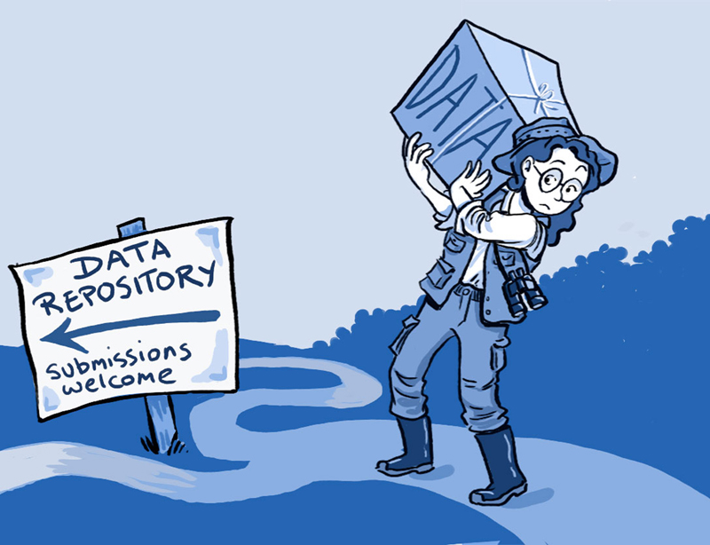<br>
              <a href="http://journals.plos.org/plosbiology/article?id=10.1371/journal.pbio.1001779">http://journals.plos.org/plosbiology/article?id=10.1371/journal.pbio.1001779</a>. Image Credit: Ainsley Seago.
            </div>
          </div>
          <div class="fragment" style="position: absolute; top: 160px; left: 120px; width: 30%; text-align: right; font-size: 50%; line-height: normal; background-color: #fff; padding: 13px;"><i>“Sharing data from one laboratory to another—or even within a laboratory—takes time and effort, but there are also psychological, cultural and technological barriers to doing so.”</i></div>
          <div style="margin-left: 50px; width: 80%; text-align: left; font-size: 45%; line-height: normal;">Roche DG, Lanfear R, Binning SA, Haff TM, Schwanz LE, Cain KE, et al. (2014) Troubleshooting Public Data Archiving: Suggestions to Increase Participation. PLoS Biol 12(1): e1001779. <a href="https://doi.org/10.1371/journal.pbio.1001779">https://doi.org/10.1371/journal.pbio.1001779</a></div>
        </section>
                 
        <section>
          <div style="width: 80%; margin: 0px auto 0px auto; text-align: center;">
            <div style="font-weight: bold; font-size: 110%; margin-bottom: 50px">The deposit package<br><span style="font-size: 80%">(a zip file or something similar)</span><br></div>
            <div style="font-size: 80%; text-align: left; line-height: 140%;">
              <ul>
                <li style="position: relative; left: 23px;">best practices for naming, formats, organization</li>
                <li style="position: relative; left: 23px;">project metadata (best practices or standard)</li>
                <li style="position: relative; left: 23px;">technical metadata: README.txt</li>
                <li style="position: relative; left: 23px;">licensing information</li>
                <li style="position: relative; left: 23px;">checksum</li>
              </ul><br><br>
              <ul class="fragment">
                <li style="position: relative; left: 23px;">can be in a zipfile (like in the University of Miami Scholarly Repository)</li>
                <span style="margin-left: 15px; font-size: 80%"><a href="http://scholarlyrepository.miami.edu/physics_data/1/">physics data example</a></span><br><br>
                <li style="position: relative; left: 23px;">other formats (depends on repository)</li>
                <span style="margin-left: 15px; font-size: 80%"><a href="https://knb.ecoinformatics.org/#view/doi:10.5063/F1HD7SK1">ecology data example (KNB)</a></span><br><br><br>
              </ul>
            </div>
          </div>
        </section>
         
        <section>
          <div style="width: 60%; margin-right: 20%; margin-left: auto;">
            <span style="font-weight: bold; font-size: 110%; margin-left: -20%;"><br>Select archive location<br><br></span>
            <div style="font-size: 80%; text-align: left; line-height: 120%; ">
              <table style="border: none; width: 700px"><tbody><tr>
                <td>
                  <b>Considerations</b><br><br>
                  <div style="font-size: 80%;">
                    <ul>
                      <li>Costs</li>
                      <li>Size of dataset</li>
                      <li>Public vs. private access</li>
                      <li>Length of preservation</li>
                      <li>Hands-on vs. hands-off</li>
                      <li>Security of platform</li>
                      <li>Disciplinary standards</li>
                    </ul>
                  </div>
                </td><td>
                  <b>Locations</b><br><br>
                  <div style="position: relative; font-size: 80%;">
                    <ul>
                    <li>Individual</li>
                    <li>Department/college</li>
                    <li>University-wide</li>
                    <li>Discipline-specific</li>
                    <li>3rd party</li>
                  </ul>
                  <div class="fragment" style="font-size: 90%; position: absolute; right: -160px; width: 400px;">archive vs. sharing mechanism</div>
                  </div>
                </td>
              </tr></tbody></table>
            </div>
          </div>
          <div style="position: absolute; bottom: -200px; left: 30px; width: 95%; text-align: left; font-size: 45%; line-height: normal;">adapted from Whitmire, Amanda L. (2014). Research Data Management Curriculum, Lecture 15: Data Preservation. Oregon State University Libraries. Retrieved 11/04/2015 from: <a href="http://figshare.com/articles/GRAD521_Research_Data_Management_Lectures/1003835"> http://figshare.com/articles/GRAD521_Research_Data_Management_Lectures/1003835</a></div>
          <div class="fragment" style="position: absolute; top: 220px; left: 650px; "><object data="../../common/assets/images-for-data/arrow.svg" type="image/svg+xml"></object></div>
        </section>
        
        <section>
          <div style="width: 80%; margin-right: auto; margin-left: auto;">
            <span style="font-weight: bold; font-size: 110%;">Archive in discipline-specific repository<br></span>
            <div style="font-size: 75%; border: 1px solid black; background-color: #999; padding: 13px; margin-top: 42px;">
              <ul>
                <li>Replicated, archive-quality storage</li>
                <li>Data curation throughout ingest & archive period</li>
                <li>Data in context with other datasets</li>
              </ul>
            </div>
            <br><br>
            <span style="border-bottom: 2px solid black;">Costs (100 GB dataset)</span>
            <table><tr><td style="font-size: 180%; color: #777">$</td><td style="text-align: center; line-height: 100%; vertical-align: top; padding-top: 45px;">Depends</td></tr></table>
          </div>
          <!-- ><div style="position: absolute; top: 640px; left: 200px; "></div>
          <div style="position: absolute; top: 640px; left: 700px; "></div> -->
          <div style="position: absolute; top: 640px; left: 200px; "><a href="https://crcns.org/">CRCNS</a></div>
        </section>
        
        <section>
          <div style="width: 60%; margin-right: auto; margin-left: auto;">
            <span style="font-weight: bold; font-size: 110%;">Repository Directories<br><br></span>
            <div style="font-size: 80%; text-align: left; line-height: 120%;">
              <ul>
                <li>Registry of Research Data Repositories</li>
                  <a href="http://www.re3data.org/" style="font-size: 90%;">http://www.re3data.org/</a>
                <li style="margin-top: 23px;">DataCite Repository Finder</li>
                  <a href="https://repositoryfinder.datacite.org/" style="font-size: 90%;">https://repositoryfinder.datacite.org/</a>
                <li style="margin-top: 23px;">The Directory of Open Access Repositories</li>
                  <a href="http://www.opendoar.org/" style="font-size: 90%;">http://www.opendoar.org/</a>
                <li style="margin-top: 23px;">The Open Access Directory – Disciplinary Repositories</li>
                  <a href="http://oad.simmons.edu/oadwiki/Disciplinary_repositories" style="font-size: 90%;">http://oad.simmons.edu/oadwiki/Disciplinary_repositories</a>
              </ul>
            </div><br><br><br>
          </div>
        </section>
        
        <section>
          <div style="width: 85%; margin-right: auto; margin-left: auto;">
            <span style="font-weight: bold; font-size: 110%;">Archive @ University of Miami Institutional Repository<br></span>
            <div style="font-size: 75%; border: 1px solid black; background-color: #999; padding: 13px; margin-top: 42px;">
              <ul>
                <li>Storage in Esploro (commercial service run by XLibris)</li>
                <li>Remotely accessible (restrictions/embargoes possible) </li>
                <li>OK for unrestricted data. Not compliant for sensitive (FERPA) and protected data</li>
              </ul>
            </div>
            <br><br>
            <span style="border-bottom: 2px solid black;">Costs (5 GB dataset)</span>
            <table><tr><td style="font-size: 180%; color: #777">$</td><td style="text-align: center; line-height: 100%; vertical-align: top; padding-top: 45px;">($0/year * 5 GB) = $0</td></tr></table>
          </div>
          <div style="position: absolute; top: 640px; left: 100px; color: #f00; font-size: 75%; width: 80%; margin: 0px auto 0px auto;">NOTE: UM has a 5GB limit for cost-free archiving. For datasets larger than 5GB please contact <a href="mailto:researchdata@miami.edu">researchdata@miami.edu</a>.</div>
        </section>
        
        <section>
          <div style="width: 80%; margin-right: auto; margin-left: auto;">
            <span style="font-weight: bold; font-size: 110%;">3rd party repository platforms<br></span>
            <div style="font-size: 75%; border: 1px solid black; background-color: #999; padding: 13px; margin-top: 42px;">
              <ul>
                <li>easy and hassle free</li>
                <li>highly visible and publically available</li>
                <li>longevity is unknown</li>
              </ul>
            </div>
            <br><br>
            <span style="border-bottom: 2px solid black;">Costs (100 GB dataset)</span>
            <table><tr><td style="font-size: 180%; color: #777">$</td><td style="text-align: center; line-height: 100%; vertical-align: top; padding-top: 45px;">mostly free</td></tr></table>
          </div>
          <div style="position: absolute; top: 640px; left: 200px; "></div>
          <div style="position: absolute; top: 580px; left: 700px; "></div>
        </section>
        
        <section>
          <div style="width: 80%; margin-right: auto; margin-left: auto;">
            <span style="font-weight: bold; font-size: 110%;">Archive w/department IT<br></span>
            <div style="font-size: 75%; border: 1px solid black; background-color: #999; padding: 13px; margin-top: 42px;">
              <ul>
                <li>Depends on department IT</li>
              </ul>
            </div>
            <br><br>
            <span style="border-bottom: 2px solid black;">Costs (100 GB dataset)</span>
            <table><tr><td style="font-size: 180%; color: #777">$</td><td style="text-align: center; line-height: 100%; vertical-align: top; padding-top: 20px;">Under development???<br><span style="font-size: 60%; text-align: center;">(check your dept.)</span></td></tr></table>
          </div>
        </section>
               
        <section>
          <div style="width: 80%; margin-right: auto; margin-left: auto;">
            <span style="font-weight: bold; font-size: 110%;">Archive on your own<br></span>
            <div style="font-size: 75%; border: 1px solid black; background-color: #999; padding: 13px; margin-top: 42px;">
              <ul>
                <li>You buy & manage hardware, replication, backups and networking (if applicable, for offsite access)
                <li style="margin-top: 13px;">OK for unrestricted, sensitive (FERPA), and protected data
              </ul>
            </div>
            <br><br>
            <span style="border-bottom: 2px solid black;">Costs (100 GB dataset)</span>
            <table><tr><td style="font-size: 180%; color: #777">$</td><td style="text-align: center; line-height: 100%; vertical-align: top; padding-top: 20px;">Ranges<br><span style="font-size: 60%; text-align: center;">(but generally cheap)</span></td></tr></table>
          </div>
        </section>

        <section>
          <span style="font-weight: bold; font-size: 110%;">Researcher perspectives on sharing</span><br>
          <table border=0 cellspacing=0 cellpadding=0 style="font-size: 50%;">
           <tr style='height:27.25pt'>
            <td valign=bottom style='width:500px;background:white;padding:1.55pt .8pt 1.55pt .8pt;  height:27.25pt; border: none !important;'></td>
            <td style='width:250px;background:white;padding:.8pt .8pt 0in .8pt;  height:27.25pt; border: none !important;'></td>
            <td style='width:150px;background:white;padding:.8pt .8pt 0in .8pt;  height:27.25pt; border: none !important;'></td>
           </tr>
           <tr style='height:27.25pt; font-weight: bold;'>
            <td valign=bottom style='width:500px;background:white;padding:1.55pt .8pt 1.55pt .8pt;  height:27.25pt'>Sharing analysis scripts and data sets</td>
            <td style='width:250px;background:white;padding:.8pt .8pt 0in .8pt;  height:27.25pt'>Frequency</td>
            <td style='width:150px;background:white;padding:.8pt .8pt 0in .8pt;  height:27.25pt'>percent (valid)</td>
           </tr>
           <tr style='height:20.25pt; border: none !important;'>
            <td valign=bottom style='width:500px;background:white;padding:1.55pt .8pt 1.55pt .8pt;  height:27.25pt; border: none !important;'>1. Willing to share publicly</td>
            <td style='width:250px;background:white;padding:.8pt .8pt 0in .8pt;  height:27.25pt; border: none !important;'>120</td>
            <td style='width:150px;background:white;padding:.8pt .8pt 0in .8pt;  height:27.25pt; border: none !important;'>25.9%</td>
           </tr>
           <tr style='height:20.25pt; border: none !important;'>
            <td valign=bottom style='width:500px;background:white;padding:1.55pt .8pt 1.55pt .8pt;  height:27.25pt; border: none !important;'>2. Willing to share under access control</td>
            <td style='width:250px;background:white;padding:.8pt .8pt 0in .8pt;  height:27.25pt; border: none !important;'>98</td>
            <td style='width:150px;background:white;padding:.8pt .8pt 0in .8pt;  height:27.25pt; border: none !important;'>21.1%</td>
           </tr>
           <tr style='height:20.25pt; border: none !important;'>
            <td valign=bottom style='width:500px;background:white;padding:1.55pt .8pt 1.55pt .8pt;  height:27.25pt; border: none !important;'>3. Willing to share only on request</td>
            <td style='width:250px;background:white;padding:.8pt .8pt 0in .8pt;  height:27.25pt; border: none !important;'>163</td>
            <td style='width:150px;background:white;padding:.8pt .8pt 0in .8pt;  height:27.25pt; border: none !important;'>35.1%</td>
           </tr>
           <tr style='height:20.25pt; border: none !important;'>
            <td valign=bottom style='width:500px;background:white;padding:1.55pt .8pt 1.55pt .8pt;  height:27.25pt; '>4. Not willing to share</td>
            <td style='width:250px;background:white;padding:.8pt .8pt 0in .8pt;  height:27.25pt; '>83</td>
            <td style='width:150px;background:white;padding:.8pt .8pt 0in .8pt;  height:27.25pt; '>17.9%</td>
           </tr>
           <tr style='height:20.25pt; border: none !important; font-weight: bold;'>
            <td valign=bottom style='width:500px;background:white;padding:1.55pt .8pt 1.55pt .8pt;  height:27.25pt; '>Sum</td>
            <td style='width:250px;background:white;padding:.8pt .8pt 0in .8pt;  height:27.25pt; '>464</td>
            <td style='width:150px;background:white;padding:.8pt .8pt 0in .8pt;  height:27.25pt; '>100%</td>
           </tr>
           <tr style='height:20.25pt; border: none !important;'>
            <td valign=bottom  colspan=3 style='width:500px;background:white;padding:1.55pt .8pt 1.55pt .8pt;  height:27.25pt; '>Source: SOEP User Survey 2013, own calculations</td>
           </tr>
          </table>
          <br><span style="font-size: 50%;">adapted from doi:<a target="_blank" href="http://dx.doi.org/10.1371/journal.pone.0118053.t005">10.1371/journal.pone.0118053.t005</a></span>
          <div class="fragment" style="position: absolute; bottom: -70px; right: 120px; width: 30%; text-align: right; font-size: 50%; line-height: normal;">Age<br>Control<br>Resource<br>Returns<br>Discipline</div>
          <aside class="notes">
            Really spend some time on this, let people try to guess why some people share and others not. Then discuss the results from the paper.
          </aside>
         </section>

      </section>
      
      <!-- ***
            * Data Management Plans
            * -->
      
      <section>
      
        <section>
          <div style="width: 60%; margin-right: 20%; margin-left: auto;">
            <br><span style="font-weight: bold; font-size: 110%;">What is a Data Management Plan<br><br></span>
            <div style="font-size: 80%; text-align: left; line-height: 200%; position: relative; left: 50px;">
            The Data Management Plan is a written document that describes the data you expect to acquire or collect throughout a research project, how you will collect, organize, document, and analyze the data, and finally how you will share, publish and preserve the data.
            </div>
          </div><br><br>
        </section>

        <section>
          <div style="width: 60%; margin-right: 20%; margin-left: auto;">
            <br><span style="font-weight: bold; font-size: 110%;">Data Management Plans<br><br></span>
            <div style="font-size: 80%; text-align: left; line-height: 200%; position: relative; left: 100px;">
              <ul>
                <li>Information about Data and Data Formats</li>
                <li>Metadata Content and Format</li>
                <li>Policies for access sharing and re-use</li>
                <li>Long-term storage and preservation</li>
                <li>Budget</li>
              </ul>
            </div>
          </div><br><br>
        </section>
        
        <section>
          <div style="width: 70%; margin-right: 20%; margin-left: auto;">
            <div style="font-weight: bold; font-size: 110%; margin-bottom: 50px;">Data Management Plans</div>
            <div style="font-size: 80%; text-align: left; line-height: 160%; position: relative; left: 100px;">
              <ul>
                <li>Compliance vs Practice</li>
                <li>Check all funder requirements (funder website or DMPTool)</li>
                <li>Consider your data</li>
                <ul style="font-size: 80%;">
                  <li>How will the value of your data change with time?</li>
                  <li>Who will want to use your data? Why?</li>
                  <li>Who owns the data for your research?</li>
                  <li>Are there privacy concerns with your data?</li>
                  <li>Are there existing repositories and standards for your data?</li>
                </ul>
              </ul>
            </div>
          </div><br><br>
        </section>

        <section data-background-image="../../common/assets/images-for-data/CDL_DMP.png">
          <div style="width:1366px; height: 200px; position: absolute; top: 0px; left: 0px;">
            <div style="margin: 0px auto 0px auto; font-size: 90%; width: 320px; padding: 13px; background-color: rgba(255,255,255,0.5); border-radius: 7px;"><a href="https://dmptool.org" target="_blank" style="color: #000 !important; text-decoration: underline;">https://dmptool.org</a></div>
          </div>
        </section>

        <section data-background-image="../../common/assets/images-for-data/EZ_DMP.png">
          <div style="width:1366px; height: 200px; position: absolute; top: 0px; left: 0px;">
            <div style="margin: 135px auto 0px auto; font-size: 90%; width: 320px; padding: 13px; background-color: rgba(255,255,255,0.5); border-radius: 7px;"><a href="https://ezdmp.org/" target="_blank" style="color: #000 !important; text-decoration: underline;">https://ezdmp.org/</a></div>
          </div>
        </section>

        <section>
          <div style="position: absolute; left: 500px; top: 300px;"><a href="https://dmponline.dcc.ac.uk/" target="_blank">https://dmponline.dcc.ac.uk/</a></div>
          <div style="position: absolute; left: 100px; top: 100px;"></div>
          <div style="position: absolute; left: 800px; top: 600px;"></div>
          <div style="position: absolute; left: 1100px; top: 600px;"></div>
        </section>

        <section>
          <br><br><br>
          <div style="font-size: 70%;"><a href="https://portagenetwork.ca/" target="_blank">https://portagenetwork.ca/</a></div>
        </section>

        <section>
          <div style="float: right; top: 0px; font-weight: bold; font-size: 110%; position: absolute; left: 50px;">Evaluate a DMP</div>
          <div style="width: 45%; float: left; font-size: 65%; position: absolute; left: 50px; top: 100px; line-height: 133%">
            <ul>
              <li>Describes what types of data will be captured, created or collected<br><br><b></b></li>
              <li>Describes how data will be collected, captured, or created (observations, models, reuse, etc.)<br><br><b></b></li>
              <li>Identifies how much data (volume) will be produced<br><br><b><br></b></li>
              <li>Describes how the data will be made publicly available<br><br><b></b></li>
              <li>Provides details on when the data will be made publicly available</li>
            </ul>
          </div>
          <div style="width: 45%; float: right; font-size: 80%; line-height: normal; text-align: right; position: relative; right: 50px;">
            <table style="font-size: 80%; border: solid black 2px;"><tablebody>
              <tr style="font-size: 110%; color: #FFF; background-color: #5B9BD5; vertical-align: bottom;">
                <td>Complete/<br>detailed</td><td>Addressed issue, but not complete</td><td>Did not address</td>
              </tr><tr height="100px" style="background-color: #D2DEEF">
                <td style="border: solid black 1px;"></td><td style="border: solid black 1px;"></td><td style="border: solid black 1px;"></td>
              </tr><tr height="100px" style="background-color: #EAEFF7">
                <td style="border: solid black 1px;"></td><td style="border: solid black 1px;"></td><td style="border: solid black 1px;"></td>
              </tr><tr height="100px" style="background-color: #D2DEEF">
                <td style="border: solid black 1px;"></td><td style="border: solid black 1px;"></td><td style="border: solid black 1px;"></td>
              </tr><tr height="100px" style="background-color: #EAEFF7">
                <td style="border: solid black 1px;"></td><td style="border: solid black 1px;"></td><td style="border: solid black 1px;"></td>
              </tr><tr height="100px" style="background-color: #D2DEEF">
                <td style="border: solid black 1px;"></td><td style="border: solid black 1px;"></td><td style="border: solid black 1px;"></td>
              </tr>
            </tablebody></table>
          </div>
          <div style="top: 620px; font-weight: bold; font-size: 70%; font-style: italic; position: absolute; left: 420px;">Other criteria??</div>
        </section>

        <section>
          <div style="width: 60%; margin-right: 20%; margin-left: auto;">
            <br><span style="font-weight: bold; font-size: 110%;"><i>Quick Review:</i> Data Management Plans<br><br></span>
            <div style="font-size: 80%; text-align: left; line-height: 200%; position: relative; left: 100px;">
              <ul>
                <li>Information about Data and Data Formats</li>
                <li>Metadata Content and Format</li>
                <li>Policies for access sharing and re-use</li>
                <li>Long-term storage and preservation</li>
                <li>Budget</li>
              </ul>
            </div>
            <br>
            <span style="font-weight: bold; font-style: italic; font-size: 70%;">BUT it always will depend on your goals and the funder’s goals</span>
          </div><br><br>
        </section>

      </section>

      <!-- ***
            * ELNs
            * -->
            
      <section>
          <div style="width: 60%; margin-right: 20%; margin-left: auto;">
            <br><span style="font-weight: bold; font-size: 110%;">Electronic Lab Notebooks<br><br></span>
            <div style="font-size: 70%; text-align: left; line-height: 200%; position: relative; left: 100px; line-height: 135%;">
              <a href="https://datamanagement.hms.harvard.edu/electronic-lab-notebooks" target="_blank">Harvard's Notes on ELNs</a><br><br>
              <ul>
                <li>Open Source or Proprietary?</li>
                <li>Security?</li>
                <li>Data Sharing Facilitation?</li>
                <li>Backup?</li>
                <li>Budget?</li>
              </ul><br><br>
              <ul>
                <li><a href="https://jupyter.org" target="_blank">Jupyter Notebooks and Jupyter Lab</a> (for analysis)</li>
                <li><a href="https://www.labarchives.com" target+'_blank">Lab Archives</a> (for entire experimental process)</li>
              </ul>
            </div>
          </div><br><br>
      </section>      

      <!-- ***
            * Thanks
            * -->
            
      <section data-background-image="../../common/assets/images-for-data/HuayhuashContourColorCover.png">
        <div style="margin-top: -80px; margin-left: 100px; font-size: 150%; text-shadow: 0px 0px 23px #ede9e2, 0px 0px 23px #ede9e2, 0px 0px 23px #ede9e2, 0px 0px 23px #ede9e2, 0px 0px 23px #ede9e2, 0px 0px 23px #ede9e2, 0px 0px 23px #ede9e2;"><strong>Thanks</strong></div>
        <div style="margin-top: 210px; margin-left: 260px; font-size: 60%; text-align: left; text-shadow: 0px 0px 13px #ede9e2, 0px 0px 13px #ede9e2, 0px 0px 13px #ede9e2, 0px 0px 13px #ede9e2, 0px 0px 13px #ede9e2, 0px 0px 13px #ede9e2, 0px 0px 13px #ede9e2, 0px 0px 13px #ede9e2, 0px 0px 13px #ede9e2, 0px 0px 13px #ede9e2, 0px 0px 13px #ede9e2;">Tim Norris - <a href="mailto:tnorris@miami.edu" style="color: #000 !important;">tnorris@miami.edu</a><br>Spring 2020 Library Seminars<br><a href="https://bit.ly/2IY8eUi">https://bit.ly/2IY8eUi</a></div>
      </section>

      <!-- ***
            * Extras
            * -->
            
      <section>
        <div style="width: 35%; margin-right: auto; margin-left: auto;">
          <br><span style="font-weight: bold; font-size: 110%;">Get a good text editor<br><br></span>
          <div style="font-size: 80%; text-align: left; line-height: 200%;">
            <ul>
              <li><a href="https://wiki.gnome.org/Apps/Gedit">Gedit</a>: linux/Windows/Mac</li>
              <li><a href="https://notepad-plus-plus.org/">Notepad++</a>: Windows</li>
              <li><a href="https://www.barebones.com/products/bbedit/">BBedit</a>: Mac</li>
              <li><a href="https://www.sublimetext.com/">Sublime</a>: linux/Windows/Mac</li>
            </ul>
          </div>
        </div><br><br>
      </section>

    </div>
    </div>
    <script src="../../common/java/reveal.js"></script>
    <script src="../../common/java/notes.js"></script>
    <script src="../../common/java/head.min.js"></script>
    <script>
      Reveal.initialize({
          width: 1366, height: 768, margin: 0.05,
          controls: true,
          touch: false,
          progress: true,
          history: true,
          center: true,
          mouseWheel: false,
          chart: {
            defaults: { 
              global: { 
                defaultFontSize: 20,
                title: { fontColor: "#333" }, 
                legend: {
                  position: "top",
                  labels: { fontColor: "#333" },
                },
                tooltips: {
                  labels: { fontColor: "#333" },
                },
              }, 
              scale: { 
                scaleLabel: { fontColor: "#333" }, 
                gridLines: { color: "#333", zeroLineColor: "#333" }, 
                ticks: { fontColor: "#333" }, 
              } 
            },
          },
          dependencies: [
              { src: '../../common/java/Chart.min.js' },
              { src: '../../common/java/csv2chart.js' }
          ] 
      });
    </script>
  </body>
</html>
